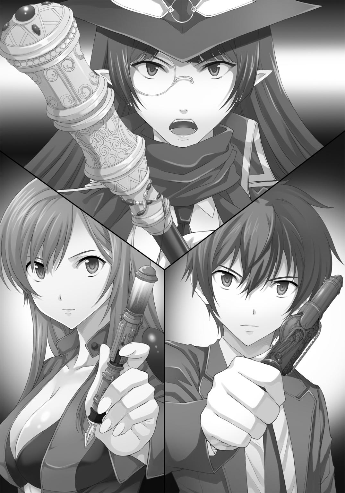

| イコライザー！ ２ | |
| 神野オキナ | |

この本は縦書きでレイアウトされています。
また、ご覧になる機種により、表示の差が認められることがあります。
 ダッシュエックス文庫DIGITAL
ダッシュエックス文庫DIGITAL
イコライザー！ ２
神野オキナ
○第一話：「おとこ独り」（byフォー・コインズ）
☆
到着までまだ一時間あった。
「幕末、幕末、幕末、幕末、幕末、幕末、幕末、幕末、幕末、いい響きじゃないか」
時間調停者のパスウィダーこと、パーシィはそう言って時空航行船「ロスティニア」の操縦室の中で、くるくると回ってみせた。
革製のようにも、布製のようにも見える不思議な質感の素材で出来たロングコートの裾がふわりと広がる。
「なんか東京都バスガス爆発とか爆弾ハンバーグ＆松飾りスペシャルの略称みたいな感じで」
「そんなこと考えるのパーシィくらいだよ。ていうか、それ料理？」
「知らん。今思いついた」
「まったくもうよくもまあ、そんな変なことばっかり考えられるねえ」
沙汰内類はそう言って苦笑いした。
システム上、今の彼はこの「ロスティニア」の船長だが、実際の操縦はパーシィと、今はこの船のどこかで寝ているレッド・リーコンにしか出来ないので、何も手を出せない。
「そうか？ 私はそんなこと思わない。なぜなら日本の幕末というのはそれぐらいいい加減な時代だからだ」
そう言ってパーシィは真顔になった。
「あと一時間弱で着くが、本当に、非常に、まったくいい加減だ。何しろ最初は攘夷とか言って外国勢力を討ちはらうべし、だったのが、だんだん自分の実力が分かると、いつの間にやら今度は公武合体だのなんだのというふうに話は変わり、徳川幕府と将軍が悪い、に化けて、気がついたら天皇を頭にいただいて、西洋に追いつき追い越すことが目標になっていて、誰も不思議に思わない時代だ」
長い黒髪のエルフの少女は、ちょいと帽子を直す。
「ちょんまげを切って、腰の刀を取り去って、だけど和服に草履で歩いていく時代に突入する前夜祭............にしては人死にが多すぎるがな」
歴史に詳しい人間が聞けば三時間は説教確実の、しかし、タイムトラベラーであるだけに妙に実感のある言葉をパーシィは並べた。
現在、タグルとパーシィをはじめとした仲間たちが乗る万能の船「ロスティニア」は、幕末へ向かって時間の流れを移動している。
さっきまでその操縦をひとりでバタバタとやっていて、どうやら最終調整が終わったと、思った途端にこの長広舌である。
「まぁ早い話が何度も何度も裏切りがあるし、思いこみで人を殺したり、殺されたり、馬鹿なことばっかりがある............第一、アメリカでは南北戦争で殺し合いが終わって大量の銃器が東海道のヤクザにまで流れこみ、その横で新撰組だのなんだのが闊歩している時代だぞ？」
「そうなの？ その時代って刀しかない時代、ってイメージだけど」
「なに言ってるんだ。世界と日本が如何にずれていたかが如実に分かる時代で、人の心も結構荒れ果ててる。うっかりしているとあっという間に疑われて斬り殺されてしまう時代だ。今の日本とは違う」
さらにくるっと回ってパーシィはタグルの胸を人差し指で突いた。
「ぼーっとしているタグルなんてあっという間に斬り殺されてしまうかもしれないぞ、注意したまえ」
「いくら僕でもそれほどバカじゃないよ」
タグルはそう言って口を尖らせる。
「でもパスウィダーが言うことも正しいかもしれないわ」
タグルの隣で瀬底泡瀬がそう言って真剣な顔になった。
「泡瀬さんまでそういうこと言うの？」
タグルが嘆くのへ、
「いやそういうのじゃないの。確かに幕末という時代は非常に殺伐としているから、場合によっては私だって本当に斬り殺されるかもしれない。注意が確かに必要だわ。特に身分の差はこの時代、まだ絶対だから」
「身分の差？ ああ、そうか、士農工商で階級分けされてるよね」
「そう、この時代、士農工商は絶対なんだもの。もし、私たちの身分が武士だったとしても、私は女だし、タグルくんは、うっかり侍らしからぬ行動を取ると、士道不覚悟で殺されてしまうわ」
「まあ、士道不覚悟ってのは新撰組みたいな元々侍じゃない連中が、それだけにより侍らしく振る舞うために大声で叫んでる、っていうぐらい衰退はしてるけどな」
下に無数にある部屋のひとつで一眠りしていた、軍服姿の偉丈夫、レッド・リーコンがひょいと顔を出してきた。
「............なんか、複雑な時代なんですねえ。この前図書館のアーカイブで見た時代劇とはえらい違う感じで」
「へえ、タグル君、何を見たんだ？」
「えーと。確か『新選組血風録』だったかな？ 色のないテレビ番組でした、三話ぐらいでしたけど」
「また随分と渋いとこ見てるねえ」
「まあ、あの映画に描かれてるぐらい人間が皆殺伐としてる、特に侍は......だから気をつけたまえ」
「そういえばパーシィはどういう風に変装をするの？」
「私か、私はタイムトラベラーだから、このままでもう慣れてる。だから、むしろ心配なのは、君たちの方だな。特殊な交渉術、なんてものはないからなあ。やはり、変装だろう。タグルは浪人の息子で僧侶の修行を終えたばかり、アワセは......そうだ、君ら、新撰組のメンバーの名前を言えるか？」
「近藤勇、土方歳三、沖田総司、芹沢鴨、斎藤一、山南敬助、永倉新八、藤堂平介、谷三十郎、えーっと後は............」
読書好きな泡瀬らしい答えが返ってきた。
「すごいや、僕全然わからない」
最初の四人は「新選組血風録」の主要人物だから覚えているが、それ以後はさすがに知らない。
「決まりだ、泡瀬が姉だな.........三階下の衣装部屋に行ってこい。音声入力すれば衣装をそれっぽく選んでくれる。多少の不具合は衣装型立体映像だが何とかなるだろう」
「あの、パーシィは一緒に行かないの？」
「行くさ、勿論。だが二手に分かれて調べた方が早い。それにひとりの方が気楽だ」
「そんなもんかなぁ......」
「ああ、そうだった、これを渡すのを忘れていた」
そう言ってパーシィはロングコートの内ポケットから青と黒、二本の万年筆のようなものを取り出した。
もっとも、大きさが万年筆サイズなだけで、実際にはところどころがクリアガラスになっていて、そこにびっしりと歯車が回っていて、支柱が往復していたりするので、大分怪しい。
「これ、何？」
「私が持ってる蒸気精霊杖の小型版だ。通称は『ギズモ』。簡略版なので出力は流石に私のものの半分だが、精度は抜群だし、この前のスウィムウェン相手にやってみせたような瞬間最大出力を使ってもチャージが戻るのが短くてすむ。なによりも......」
と、パーシィはその機械の三分の一あたりに指をかけてくるりと回した。
半分が外れ、中にはさらにくるくる回転する円錐状の歯車が組み合わさった支柱が透明な樹脂かガラスのようなものの中に見え、その先端にはどう見てもペン先と思えるものがあった。
「これは字が書ける。ちなみに無重力空間でも書けるし、こいつから出る分析光で書いたものを消して、同じ精霊杖の光を当てないと読めないようにすることも出来る............さ、好きなのを選びたまえ」

「............なんか、オモチャっぽいなぁ」
「オモチャと同じ機能と言ったんだ、オモチャじゃない！ だいいち、十代目ドクターのソニック・スクリュードライバーのオモチャと同じ機能でさらにグレードが高いんだぞ！ 凄く苦労したんだからな！」
「何にでも書けるの？」
「水と空気以外ならコンクリートだろうがガラスだろうが毛皮だろうがＯＫだ」
「それなら便利かも」
「だろう？」
得意満面の笑みを浮かべるパスウィダー。
「泡瀬さん、どっちがいい？」
「えっと............じゃあ、私、青を」
「じゃあ、僕は黒............と」
「よしよし」
パーシィから受け取り、タグルはその小型の蒸気精霊杖を手の中で重みを確かめたり、いじり回したりしながら首を捻った。
「やっぱオモチャっぽいなあ」
「そういうことを言うなら返してもらうぞ！」
「怒ることないでしょ？ ............で、どうやって使うの？」
パーシィは溜息をついて、
「蒸気精霊杖として使う時はキャップを今の状態に戻して、側面か、ペン先のないほうの端に付いてるボタンを押せ。結果は横にある窓に数字になって表示。使い方を変えるときはここがダイヤル式で回るから、数字を変えろ。今はとりあえず０００............時空の歪みを見つけるための分析モード兼地理調査モードにしてある。鍵を開けたり、かけたりするときには数字を３５７に合わせろ。機械を停止させるときは１３３、あと、高いところから飛び降りる際の『エアマット』を作るときは４５４だ」
「なるほど............あのさ、炎とか出せない？」
「マッチぐらいの火なら作れるが、大規模なのは無理だな」
「パーシィのは？」
「私のは封じてある」
「なんでまた？」
「大きすぎる火は、碌なことにならない――――それに炎というのはコントロールが難しいんだ、勝手に燃え移ったり、拡がったりもするし」
「なるほど......」
納得しながらも、タグルは以前、体育館でスウィムウェンと呼ばれるスクール水着の少女の姿をした機会生命体が「炎の魔女」と彼女を呼んでいたことを思い出して首を捻った。
「パスウィダー、これガラスのような部品が多すぎるんですが、壊れやすいものでしょうか？」
「いや、それはガラスじゃなくて透明アルミニウムの一種だ、折れたり曲がったりはしても、砕け散ることはないから安心したまえ。あとＧショック並みに頑丈だ。私の最高傑作の一つだぞ？」
泡瀬は「なるほど」と頷いたが、タグルは疑いの目を片眼鏡の少女に向けた。
「本当？」
「どうして疑いの目を向けるんだ、タグル？」
「いや............なんかパーシィの発明ってことはボタン押した途端に煙を噴きそうで......」
「失礼な！ そうだと思うなら試しに使ってみるといい」
「ＯＫ、それじゃ............」
タグルは「０００」になっているのを確かめて、「ロスティニア」ブリッジの反対側の壁に向けると、側面のスイッチを入れた。
ぽん。
可愛らしい音がして、ボタン部分から煙が上がる。
「............」
「............」
「............」
「............」
タグル、泡瀬、パーシィ、そして面白そうにその様子を眺めていたレッド・リーコンが黙って顔を見合わせた。
「パーシィ、お前、また回路に手を加えただろ？」
レッドがニヤニヤ笑いながら言うのへ、
「いや、今度はパワーアップとか集束率とかではなくてだな......」
「お前さん、物作りの天才なのは認めるが、むやみにいじりたがるのが玉に瑕だな............よし、ふたりとも貸してみろ、ちょっと直してやるから」
そう言って、レッドは懐から、タグルたちと全く同じデザインの、しかし名前に合わせたのか真っ赤な小型蒸気精霊杖を取り出した。
太い親指でダイヤル錠のようになっている部分を器用に動かして「７０４」の番号にして、タグルと泡瀬の蒸気精霊杖へと向ける。
青白い光と、小さなハム音と共に、チカチカとそれぞれの蒸気精霊杖が光り、気がつくと煙で汚れたタグルのものは汚れまで綺麗に元通りになっていた。
「これで大丈夫」
とにっこり頷くレッドの顔に「本当ですか？」と疑問を差し挟む余地はなかったので、タグルはさっきと同じことをした。
今度はレッドのものと同じような作動音と光が壁に照射される。
「............よかった」
「............」
ぷう、とパーシィは子供のように一瞬頰を膨らませたが、すぐにぷいっと横を向いた。
「ちなみに、何か反応があれば作動音が大きくなるはずだ、大きくなる方へどんどん近づけば私が求める『歪み』があると思う、以上！」
そのまますねた子供のようにつかつかとブリッジを出ていく。
「............怒らせちゃったかな？」
「まあ、気にするこたぁないよ」
苦笑しながらレッドが言った。
「多分、部屋に帰ってドーナッツの一つも食べたら機嫌が直る......まあ、疑うかもしれないが、あいつ自称するだけの天才ではあるんだ。俺のこいつもパーシィが作ったものだし」
「え？」
「最初にあいつが作った五本の小型蒸気精霊杖のうちの一本がこれだ............かれこれ百年近いが、未だに故障したことがない。まあ、俺もそれなりに手入れはしてるが」
「へえ......」
「ただ天才だけに気まぐれでな、同じものを作ればいいのに、やたら改良したがるんだ。むしろ俺がやったのはデチューンでね.........ハイスペック、フルスペック症候群っていうか、性能を高く作ることばかりして、あんまりバランスを考えないところがあるんだ、あいつは」
「............なるほど」
どうやら自分たちのものは在庫品ではなく、わざわざ作り起こしたものであるとわかり、すこしタグルは罪悪感を覚えた。
「ところで、レッドさんのもの以外の三本はどうなったんです？」
「一本はちょっと前までパーシィの相棒をやってた奴に、一本はあいつ自身が持ってるあの杖だ、で、俺と、知り合いのタイムウォーカーに一本」
「タイムウォーカー？」
「時間を旅するというより、時間を巡って歩いているような奴のことだ、まあ、いずれどっかで会うだろうよ」
「残り一本は？」
そう訊ねた途端、レッドの顔に一瞬辛そうな表情がよぎった。
「さぁな。確かどこかでなくしたとか言ってたと思う」
明らかにタグルは「噓だ」と直感したが、同時にそれ以上は訊いてはいけない、と同じ直感が囁いた。
「そうですか......」
今はそれよりも、パーシィが探せと言っていた「時間の歪み」というのはどういうものだろう、ということのほうが気がかりだった。
「そういえば、泡瀬ちゃん、カレンちゃん、何処行ったか知らない？」
「ああ、カレンなら、自分の部屋で報告書書いてます」
「ふむ、じゃあ遊びに行こうかなぁ」
「あ、いやあの、えーと......それはよしたほうが」
「どうして？」
「書類仕事しているときのカレンって、そのちょっと......いや、かなりおっかない状態なので」
「それはますます面白そうだ」
手をすりすりと擦りあわせながら、レッドは満面の笑みを浮かべてくるりと背中を向け、ブリッジを出ていく、
「あの、ほ、本当にやめた方がいいですよ！」
慌てて声を張り上げる泡瀬に軽く手を振って、
「分かってる分かってる！ 集中している女の子の横顔ってのもいいもんだからねえ！」
と、スキップしそうな勢いでレッドは部屋をあとにした。
「............行っちゃった......」
「泡瀬さん、そんなにカレンさん、おっかないの？」
「とりあえず、私、絶対に書類仕事が終わるまでカレンには声かけないようにしてるの」
パーシィを監視し、場合によっては武装まで使うことをよしとする秘密機関「暁」の実行部隊の少女はきっぱりと言い切った。
「でも、パソコンで......」
「未だにうちは、手書きなの............それも修正液使用不可、筆使用」
「え......？」
「だから............怖いのよ。集中しているのを邪魔された時のあの子」
横を向いた泡瀬の視線は、どこか遠くへ向いていた。
「......」
やがて、「ロスティニア」全体に響く声で、「ぎゅあああああ！」というレッド・リーコンの悲鳴が聞こえてきた。
「......ね？」
「――――とりあえず、レッドさんとカレンさんは今回の調査には同行できない、ってことだね」
「ええ」
☆
それから大体一時間後。
がちゃり、と扉が開き、夕暮れ前の陽の光が差し込んできた。
「うわぁ」
「ロスティニア」の西洋棺桶型の扉を開けると、冷え冷えとした冬の京都の空気と共に、強い土と、木の匂いがタグルの鼻孔をくすぐった。
どこかの町屋の路地の奥らしい。
事前にブリッジの下にある「衣装部屋」で機械にコーディネートさせたので、タグルは若い頭巾姿の僧侶、泡瀬は付け毛で武家の娘風に髪を結い上げて、浅黄色の着物の上に藤色の打ち掛けを羽織る姿である。
もっとも、これは全て精巧な立体映像である。
「とりあえず、これだけ君たちには渡しておく」
とこちらはいつもと一切変わらないパーシィがずっしり重い小さな布袋をふたりにそれぞれ渡した。
「紙で包んだ一分銀が三つ、二分金がふたつ、むき出しのびた銭が二〇〇枚入ってる............この時代の物価はさっき教えたとおりだ」
いまは自室で唸ってるレッドの言うとおり、自室でドーナツを食べたらしいパーシィはすっかり元の機嫌にもどっていた。
「結構あるね」
「場合によってはここで一泊する可能性もある............ただ、くれぐれも銀と金は見せるな。このふたつの入った紙包みだけ別に持っておくとかもＯＫだ......ああ、そうそう、くれぐれも言葉遣いは気をつけろよ。自由、平等、恋愛、民主主義、意外なところでは友達、となんて言葉はまだこの時代、存在しないからな」
「あ、分かった」
「それもだめだ。『わかりました』もしくは『承知いたしました』だ」
「時代劇口調、ってやつ？」
「体言止めもだめだぞ」
「了解............いや、承知いたしました、パーシィ殿」
「よろしいぞ、タグル殿。では、今は昼の三時............夜の七時までにはここに戻ってきたまえ」
「はい、パスウィダー」
「でも、パーシィはその格好でいいの？」
「これぐらい派手だと、この時代では『異人さんが歩いてる』ですむ。京都は微妙だが、まあ、新撰組にでも出会わない限りは大丈夫だろう」
「新撰組かあ......」
「そういえばここは西暦では何年なんですか、パスウィダー」
「一八六四年、新撰組は絶頂期にある............だから気をつけろよ、うっかりカタカナ言葉なんか使ってみろ、夷狄に通じる逆賊だの、薩長の手先とか言われて後ろからバッサリだ、どっちもどっちも、どっちもどっちもーっ！ でイカレた時代だからな」
「............とにかく、気をつけて調べるよ」
「殺伐とはしてるが、今より空気も水も綺麗だし、茶店の食い物も意外に美味い。ただし、生水は飲むな、熱いお茶だけにしとけ」
「この寒さじゃ飲まないよ」
苦笑しながらタグルは応えた。立体映像の下はそれなりに防寒装備をしたつもりだが、爪先からじんわりと染みこんでくるような京都の寒さは感じている。
「それと、この時代茶店でもどこでも、食事は頼んでものが来たら即払うのが常識だ。時代劇みたいに店を離れる時に支払うという制度じゃないから注意したまえ」
「承知しました、パーシィ殿」
「うむ。では、あとでな」
とパーシィは颯爽と早足で歩き出し、
「じゃ、行こうか」
「あ......は、はいっ！」
タグルと泡瀬はのんびりと歩き始めた。
二一世紀のような、無味乾燥なコンクリートやアスファルトの埃とガソリンエンジンの排気煙のない、木とそれが燃える匂いと、米の炊ける匂いが漂う一九世紀の日本へと。
☆
人混みの中に来るとそれが様々な人の体臭になった。
垢の匂いも混じってくるし、人や、あちこちをうろつき回っている野良犬の排泄物の匂いもしてくる。
最初の驚きと楽しさもこうなると辟易に変わるが、あちこちの路地に「杖」をかざして回っているうちにその匂いも気にならなくなってきた。
やがて、その中に「いい匂い」をかぎ分けられるようになり、そこへ目を向けると、いかにも仕立ての良い着物を着けた女性だったり、武家でも洗いざらしではない着物を着け、漆のはげていない鞘を持つ刀を差した立派な身なりの侍だったり。
そして、香袋を扱う店先だったり。
「............昔は人の生活の匂いがした、ってのは本当なんだなぁ」
ぽけっとタグルは呟いた。
「公衆衛生の概念が違うもの。この時代まで綺麗にする、というのは食器が匂わないように水で洗う、他人に汚いと嫌われるから風呂に入る、っていう社会の付き合いの中で必要なことなの。細菌やウィルスさえ知らないから、消毒という概念もないし、『手を洗おう』という言葉さえ、汚れているからみっともない、以上の意味はないわ」
「へえ............泡瀬さん、詳しいなぁ」
「どうしてもパスウィダーがらみのことを調べていくと歴史も学ぶから......」
タグルの賛辞に、瀬底泡瀬は頰を赤らめた。
「あ、そうか。そういえばパーシィって、ずーっとあの姿で記録されてるの？」
「ええ、だから事が終わった後の追跡はとても楽............といっても滅多に文献に残らないからそれなりに大変だけど」
「なるほどねえ......」
町中を歩いていくと、やたら急ぐ人の姿が目につく。
「さて............どこで話を聞こうか？」
「まずは寺の前にある茶店ね............幸い、京都なら事欠かない場所だわ」
「了解......じゃなかった、分かりました、姉上」
ちょっと気取って頷く僧侶姿のタグルに、思わずぷっと泡瀬は吹き出した。
☆
「ふふふふ............来たわね、私の邪魔をするタイムパトロール！」
彼女は夜の迫った京都のとある小さな寺のお堂の中、ぬくぬくと張り巡らされたエアバリアの中で、警報システムの詳細を読み取って肩を震わせた。
「私の美しい歴史を刻むチャンスを、邪魔されてたまるもんですか」
そう言って、彼女の指がキーボードの上を走り、巨大なトラックボールを操作する。
「鴨ちゃん、行っちゃって！ 今の時間そこの屯所に詰めてる連中は言いなりだから！ 土方歳三と沖田総司はもう会津藩のお屋敷にご機嫌伺いで出てるから......と」
空中投影型の立体映像モニターには、誰かの視点で、ゆっくりと板張りの廊下を歩いていくのが映る。
やがて、歴史的に有名な浅葱色のだんだら模様の上着を着けた青年たちが詰めている土間に来ると、彼女は黄色いカバーを跳ね上げ、中にあるボタンを押しながら、マイクを握った。
「新撰組筆頭局長、芹沢鴨である」
彼女の声は野太い男の声に変換され、画面の向こうに響く。
去年暗殺されたはずの人物が現れたことに驚き、思わず刀に手をかける古参の隊士たちが、一瞬固まり、しかしその後刀を右手に持ち換え、背筋を伸ばして「芹沢先生、おはようございます！」
と一礼し、残りの新参隊士たちもそれに倣った。
このアンドロイドの顔面全体から放射される催眠光線は彼らの記憶を操作し、とっくに殺されたはずの人物が指揮を執ることを「偉い人だから当然だ」と納得させていた。
「不逞浪士が、京都に火を付けようとしておるとの密訴があった。新撰組はこれより出動し、その浪士たちを斬る！」
彼女の声が変換されて隊士たちの脳に届く。
「はい局長！」
彼女の操る「芹沢鴨」は隊士たち数十人を引き連れて、屯所を出た。
彼女の目的を妨げる者を斃すために。
☆
武家娘と僧侶という取り合わせに、最初どの茶屋の人間も訝しげに眺めたが、泡瀬とここまで来る道中で相談し、決めていた「色々ございまして、一度京都を観てから本格的な仏門に入ろうと」というタグルの言葉の「色々」という部分に勝手に想像を膨らませたらしく、緩やかに警戒を解いてくれた。
「最近の京はどうですか？ 江戸では随分と物騒な話しか伝わってきませんが」と暇そうな茶屋の老婆や、客を見つけて話を聞くと、異口同音に「みぶろが来てからというもの、血なまぐさいことばかり起こりましてナァ」と溜息混じりの返事が返ってくる。
「そんなに悪い人たちなんですか、みぶろって」
「まぁなぁ......ありゃ人やおませんなぁ」
のんびりと大坂から京に来たという商家の主人が遠慮がちに、しかし吐き捨てたくなるような思いを込めて頷く。
「江戸から来はった人にこう言うのもなんやけど、ほんま、あの連中ときたら、人を人とも思わん。仏心を出したら、自分の仲間さえ腹切らせよる。人でなしや」
「はぁ......」
「二年ほど前やったかなぁ。お仲間のひとりが町娘に惚れて、夫婦になりたい言うたら、副長の土方いうお人が独身やのうなることは『局中法度に反する』言うて、腹切らせてしもたんや............阿呆ちゃうかと」
「............」
泡瀬が何か言いたそうだったが、ぐっとこらえる。
「阿呆や、ほんまに。人の色恋にまで口出しするなんて野暮の極みや。ほんま、みぶろや」
壬生の狼ども、を略して「壬生狼」と言い、京都の言葉になると「みぶろ」になる。
「関東のお人にはちと胸悪うなるかもしれへんけど、こういうのはようないわ」
「なるほど」
「まあ、最初の局長やった芹沢鴨はんを暗殺したのが今の局長の近藤はんいうこっちゃから、殺伐としても当然かもなァ......」
興味深く聞いているだけのタグルたちを見て、安心したのか、それとも僧侶姿の御利益か、商人は大分声を低くして、それでも深い話をしてくれていたが、さらに妙なことを言いだした。
「そういえば、最近芹沢はんの幽霊がちょこちょこと屯所やら町中に出てくるそうや」
「芹沢って誰です？」
「新撰組の初代の局長はんや。えらいてんごばかりやらかすお人でなぁ。大坂で相撲取り相手に道を譲れ、譲らないで斬り殺したり、あてらみたいな商家を脅して御用金用立てたりとまあ、乱暴狼藉の極みなお人やったが、四年ほど前に一緒に芸者もろとも首を落とされはった」
「............で、その人の幽霊が？」
「そうなんや」
ふたりと商人の話を聞いていた、隠居らしい頭巾姿の老人が話に交ざってくる。
「この前から、芹沢はんの幽霊が、死んだ隊士を率いてあちこちに現れちゃあ、開国派の連中を斬って棄ててるいうことや......やっぱ今まで殺した人たちの霊魂が成仏をさせへんのやろうねえ」
「............」
タグルと泡瀬は顔を見合わせた。
「これ............かな？」
「でしょう......ね？」
「ありがとうございました」
そう言って立ち上がる。
「最近だとどの辺で......」
と訊ねかけたとき、どやどやと人混みが剣呑な気配にどよめいた。
「？」
「みぶろや」
と誰かが囁き、そのささやきがどやどやと拡がってくる。
「ひょっとして......」
タグルの言葉に泡瀬が頷く。
「路地へ」
「うん」
頷いて、ふたりは慌てて茶店を出、近くの路地へと走っていく。
☆
彼女にとっての標的はすぐに見つかった。
「芹沢鴨」の目に、他の京都の民とは違い、立体映像で姿を誤魔化しているふたりの少年と少女が路地に向かうのが見える。
「ゆけ、あの僧侶と武家娘が不逞浪士だ！」
指さすと、催眠光線によって死んだはずの芹沢鴨の命令に背かないようになっている新撰組隊士たちは一斉に抜刀して駆けていく。
「さぁて、これでもうＯＫ」
にやっと笑うと、彼女は「芹沢鴨」をその場から歩み去らせつつ、その外装を変化させた。
五七〇〇万枚のホログラム外装が一瞬で変形し、会津藩の藩士のひとりに偽装させる。
あとは隊士のひとりに「お前、襟元がたるんでおるぞ」と袷を直してやるふりをして取り付けたカメラで成果を確認すればいい。
「おう、瑠璃さん、おるがか？」
野太い声がお堂の入り口で起こった。
念のためカメラで確認すると、天然パーマを無理矢理ひっつめるように髷にして、ボロボロの袴に真新しい「革靴」を履いた、二十代半ばの青年が立っている。
「今開けるわ」
そう言ってコンソールを操作すると、電磁ロックされたお堂の扉が開く。
「おう、どうなっちょる？」
「どうやらタイムパトロールが来てるみたいだから、さっさと斬り殺すように新撰組を向かわせたわ」
「そうか、そりゃあいい」
瘦せこけた男はそう言って懐手にしていた右手を袷から出して、無精髭の生えた顎を撫でた。
この時点では「知る人ぞ知る」人物であり、およそ百年後、ひとりの作家が彼を主役にした小説を発表するまで、地元である土佐でさえ、その名を知るものは滅多にいなかった男は、にやりと野太い笑みを浮かべた。
「しっかし、あんたのこの機械はあいかわらず訳が分からん上にごっついのぅ。わしゃあ、黒船より、こいつが欲しいわ」
「あげてもいいけど、今のあなたじゃ使いこなせないわよ」
冷ややかに言いながら彼女は機械を操作し続ける。
「わかっちょる。だからおんしに頼んでおるじゃなかか」
「あたしはね、新撰組が残ってくれればいいのよ。沖田総司と永倉新八、土方歳三あたりがね......近藤は死んじゃってもいいからさ」
「まぁ、わしが天下とったら薩長はまず最初に潰して、土佐藩の上士共を皆殺しに出来れば文句ないわい。勝先生と武市さん以外は味方がやない」
青年は普段は澄み切って輝いていると他人に思わせる瞳に、暗い情念の炎を宿らせながら呟いた。
「とにかく、薩摩と長州なんかが勝つと世の中碌なことにならないんだから、頑張ってよ、龍馬」
「わかっちょる。わしが望むんは侍が土佐の下士以外皆殺しにされて、百姓町人で動かすでもくらしずむの国家じゃ.........で、頼みじゃがな」
「分かってるわよ、今度は誰を暗殺すればいいの？」
「さすが、話が早い............わしの進める薩長同盟のためにも、長州の椋梨藤太と、高杉さんのところの山本狂介をちょいと斬ってほしい。ありゃ日和見の男じゃ」
前者はともかく、後者は後の明治陸軍元帥に対して大胆不敵な言葉であるが、この青年はそんな未来をまだ知らない。
「あのふたりをさっさと殺らんと、長州は戦争になってしまうがじゃ。そうなったら日本の夜明けは遅れるぜよ」
「分かった、このタイムパトロール......いえ、邪魔者の討伐が終わったらさっそく何名か引き抜いて向かわせるわ」
言いながら、彼女はモニターを凝視していた。
その寝乱れた長髪の一本を、さりげなく土佐藩の青年の指が抜いたことにも気づかない。
床になにやら怪しい五芒星を小さく、細く尖らせた白墨で描いたことはなおさらだった。
その五芒星が一個だけではなく、ここに来る度に部屋の四隅に書き込んでいることも。
歴史好きの平凡なＯＬだった自分が、今や、日本の歴史を改編する大役を担っているのだ。そんなことに構ってはいられない。
心が震えるが、まずはその前に、邪魔者を抹殺せねばならない。
高校生ぐらいの年齢で、少し心は痛んだが、彼女はこの時代、勤皇の志士たちも、幕府を守る侍上がりの連中も口にする言葉がすっかり身に染みこんでいた。
すなわち「大事のためには少々の犠牲はやむを得ない」。
☆
路地に向けて走り込もうとしたら「待て！」と声をかけられた。
明らかに自分たちを目指して、映画でも観たあのだんだら模様の羽織をつけた連中が追いかけてくる。
「どういうこと？」
「何か分からないけど、刀を抜いた新撰組に話し合いは無理、急いで！」
戸惑うタグルの腕を、泡瀬は無理矢理引っ張って走り出す。
「待て！」
声をかけてくるほうを見た瞬間、これまで味わったことのない殺気がタグルの顔に飛んできた。
「！」
背筋が寒くなった。
どの顔も今の日本人にはない、がっしりとした顎で、太い眉であるだけではない、目の光が尋常ではなかった。
銃で撃ち合うのではなく、白刃の下をくぐり抜け、相手の血肉を抉り、あるいは抉られながら切り結び、生き残ってきた男たちの背負う「業」がそのままタグルの身体に吹きつけてくる。
その数およそ三〇。
肩に背負うようにしてきらめく白刃は、これまで友達の家で見た模造刀のような分厚さはなく、みな細く、薄く、血で薄赤く輝いているように見えた。
そして早い。
袴の股立ちを高くとり、上半身を全く揺らさない走り方でやってくる姿は異様でもあった。
（殺されるな、これは）
頭のどこかで直感が囁き、タグルは必死になって走った。
スマートフォンを取り出し、電話をかける......一見すると無駄な行為だが、タグルのも泡瀬のも、パーシィによって「改良」が加えられている。
『なにがあった！』
さすがに出発前「迂闊に使うな」と釘を刺した後の連絡だけに、パーシィの声は鋭い。
「新撰組に追われてる！」
『何をしたんだ？』
「分からないよ！ 普通に歩いていたらいきなり追われたんだ」
『下手に攻撃や防御をするな、とにかくギリギリまで逃げろ！』
「分かった！」
「タグル君、二手に分かれましょう！ 私が彼らを引きつける！」
立体映像を解除して、この時代では目立ちすぎる身軽な革ツナギ姿になった泡瀬が叫ぶ。
そんな、とか、駄目だ、と止める余裕もなく、彼女は足を止めて腕を引っ張っていたタグルを路地の角へ遠心力で投げ込むようにすると、左右の蔵の海鼠壁を蹴って飛び上がり、屋根の上に昇ると同時に、地面に腰に下げたものを投げつけた。
壁に当たって新撰組の足下に転がったのは円筒形の本体の上下に六角形の蓋が付いたような音響手榴弾。
「うわああ！ 目が！」
「み、耳がぁ！」
派手な爆発音と煙と閃光に、彼らが恐慌状態に陥っている間に、泡瀬は音響手榴弾を結びつけた細いワイヤーで回収しつつ、新撰組の背後に降り立つと「後ろに逃げたぁ！」と野太い声を作って叫び、派手な足音をわざと立てながら走り去る............前に、大店の主人を思わせる立派な身なりの中年男が立ちふさがった。
「？」
首を捻る間もなく、その姿が一斉にモザイクのように崩れ、次の瞬間、新撰組の羽織に鎧の胴丸と、鉢金を巻いた背の高い、大兵肥満の青年に姿を変える。
手にはいつの間にか扇。それを広げると「盡忠報國の士 芹澤鴨」と達筆な文字で大書されている。
「芹沢鴨の幽霊......どう見てもアンドロイドか何かだけど」
呟く泡瀬の声に、芹沢鴨はぱちんと扇子を閉じ、ゆっくりとこちらに歩き始めた。
「この！」
泡瀬は腰のホルスターからチアッパ・ライノ３５７マグナムを引き抜いて撃った。
装弾された六発が一発に聞こえるような銃声が京都路地に轟く。
だが、それはほぼ重なって響く金属音と、弾丸が土や木を貫く音も伴っていた。
３５７マグナムの弾丸は、全て側の蔵の壁や足下の道へ弾き落とされている。

「確かに、禁裏の衛士の槍を鉄扇で凌いだ、って聞いたことはあるけど、銃弾まで防げるわけ？」
しかし、ひるまず泡瀬はライノをホルスターに収めつつ、もう一つの武器をかざした。
タグルがしてみせたのと同じようにボタンを押し込む。
透明感のあるプルシアンブルーの「杖」の先端が輝き、芹沢鴨に化けたアンドロイドの身体の表面に幾つものスパークが散って動きが停まる。
その瞬間、迷わず泡瀬はアンドロイドの肩を蹴って再び屋根の上に飛んだ。
瓦を踏み砕くことなく、すぐに走り出す。
きゅいきゅい、というモーターの作動不良の音が響いたが、芹沢鴨の亡霊はそれ以上追ってこなかった。
だが、代わって新撰組の呼び子の笛の音が響き始めた。
☆
泡瀬の撃った銃声を、パーシィはそこから数百メートル離れた路地で聞いた。
「アワセか！」
タグルならともかく、プロである彼女が撃ったということは、それなりの相手ということなのだろうと判断し、パーシィは銃声の響いたほうへ蒸気精霊杖をかざして作動させる。
同時に妙な反応が彼女の片眼鏡に現れた。
「モザイク変形の遠隔操作型アンドロイドだと？ やっぱりここで何か悪さをしてる奴らがいるということか！」
パーシィはコートを翻して走り、やがて大店の裏手にある塀の上に飛び上がって手をかけると、一気にその上にあがり、走り出す。
☆
泡瀬が閃光手榴弾を投げるのを見て、タグルは迷うことなく走った。
これまで潜った修羅場で自分の能力の上限は知ってるし、今ここで持っている銃で泡瀬を援護するにしても、下手をすれば彼女に当たりかねないと思っていた。
やがて呼び子が木霊し、あちこちから捕り方やら新撰組の別の隊士たちがやってくるのが見えた。
とにかく逃げねばならないが、この碁盤のように整然と区切られた町は、初めて来た自分がどこにいるのかがさっぱり分からない。
グルグル回っているのかそれとも、それなりに遠くに来ているのか。
やがて、ばったりと新撰組に出会った。
「あ」
慌てて身を翻したのがまずかった。
「待て、怪しい奴！」
と逆に疑心を買って追われることになってしまった。
路地を走り、曲がりしていくうちに、だんだん自分を追う足音が増えていくのが分かる。
そして、とうとう突き当たりに出てしまった。
「追い込んだぞ！」
「あの小坊主、不逞浪士らしい」
「なにやら我らのことを聞いて回っていたとか」
「局長命令で即座に叩き斬れとのことだ。どうやらそやつ、火付けを目論んでいるそうな」
「なんと、では池田屋の生き残りどもか！ 許さぬ！」
タグルは先ほどまで親切に話をしてくれていた人たちがあっさり自分のことを新撰組の連中に喋ったことを知って軽くショックを受けた。
（まあ、誰も斬り殺されたくはないか）
そう考え直してどこかに出口がないかと周囲を探す............あった。
右手の塀の片隅、風が吹いて潜り戸が微かに軋んだ。
手をかけるとあっさり開く。
天の助けとタグルは中に入り、そっと閉めてかんぬきをかけ直した。
どこかの離れのある料亭の裏庭らしく、料理の匂いと日本酒の匂いが微かな香の匂いと共に流れてくる。
タグルは庭の茂みに身を潜めた。
慎重に身を潜めたつもりだが、がさりと枝に上着の裾を引っかけてしまい、音が鳴った。
「誰だ？」
深くて、渋い声が離れから響いた。
息を詰めていると、障子の向こうで笑う気配があった。
「どこのどいつか知らんが、こっちへ来い。庭は寒いぞ」
数秒、タグルはためらったが。
「追われているのだろう？ 俺もひとりで退屈しておるところだ、酒が飲めなくても話し相手は出来るだろうし、食い物もある」
そこまで言われると、出ていかないのも失礼だろうと思い、茂みから出て、靴を脱ぎ、それを持ったまま障子を開けた。
ほのかな暖かさがタグルを包む。
「こ、こんにちは」
中には大きな火鉢と、料理の盛られたままの大きな黒漆の箱膳がひとつ、そしてこちらに背を向けて左手を腕枕に寝転んでいる侍らしい姿があった。
月代は剃らずに伸ばしているのが分かる。着物はややくたびれているが汚れてはいない。
「中に入ってさっさと障子を閉めろ」
「あ、はい」
障子を閉めて正座していると、男はゆっくりと起き上がった。
それなりに上背があるのに、ネコ科の動物を思わせるしなやかさだ。
先ほどの新撰組の男たちと同じ目がタグルを射たが、こちらには殺気がない。
「あの、ありがとうございます」
タグルはとりあえず助けてくれた礼を言って頭を下げた。
殺気を一瞬でも感じたら腰の後ろの銃を抜く、と決めていたが、何も起こらない。
「顔を上げろ。話し相手が欲しいんだ、俺は殿様じゃない。ただの用心棒だ。頭を上げてくれないと話もできん」
「は、はい」
タグルが頭を上げると、にやりと笑う。
端整で、一見冷徹に見える顔が、笑うと子供のように朗らかに見える。
その顔を見た途端、ようやくタグルの身体から緊張が抜けたが、男は次にとんでもないことを口にした。
「随分と珍しい逃れ者だな。坊主の格好をして何をしてたんだ、『イコライザー』？」
「え？」
「細かい話は後だ。どうやら狼どもが気づいたらしい、隠れろ」
そう言って男は手招きした。
☆
「お、お客様方ぁ、し、新撰組の方たちの宿改めでおますー！」
番頭の声が何度も同じことを連呼して料亭の中を駆け巡るなか、ずかずかと新撰組たちは料亭の全ての部屋を開けて回った。
突き当たりに人の出入り出来る場所はこの料亭しかないということで、ズカズカと強制捜索に入ったのだ。
「離れだ！ 離れを探せ！」
隊長の声に、タグルは暗闇の中で身を固くした。
本当にここで見つからないのか、心配だが今更ジタバタしても仕方がないと開き直ることにした――――といってもそう簡単にはいかない。
さすがに今更騙されているのかも、という考えは浮かばないが、見破られやしないか、という心配はある。
やがて、どたどたという足音が響いてきた。
☆
「宿改めである！」
新撰組の隊士が荒々しく障子を開けた。
「相変わらず無粋な連中だな」
タグルに用心棒、と名乗った男はそう言ってタグルに会ったとき同様に寝転んで背を向けて答える。
「ここに怪しげな坊主が来なかったか？ 年の頃は十三、四、やたらこぎれいな袈裟と頭巾を............」
現代人のタグルは、この時代の人間からすれば幼く見える。
「知らんな」
用心棒は素っ気なく言葉の途中で答えた。
「ここは俺ひとりだ。さっきからずっとだ。分かったらさっさと出ていけ」
「貴様、新撰組十二番隊隊長殿に対して無礼であろうが！」
隊士のひとりが激高して刀に手をかけると、残りの連中も我先にと同じことをした。
「どっちが無礼だ」
用心棒はタグルに対してとは打って変わった辛辣で嘲笑的な声音で続ける。
「ここは俺の部屋だ、落ちぶれ果てて浪人してるが、こう見えても侍の端くれ、となればここは俺の城。そこへ勝手に入ってきて、大音声でこっちが知りもしないことをぎゃあぎゃあわめき立てる。質問に答えてやれば気にくわないと刀に手をかける。お前たち、俺が会津の紋付きだったらそんなことはするまい？ そういうところが無礼だというのだ」
よっこらせ、とわざとらしく声をあげながら男は背を向けたまま起き上がった。
「侍でもないドン百姓が、やっとうが少し出来るからと幕府の混乱に乗じて成り上がり、名字帯刀を許されて舞い上がり、増上慢になるから京の町屋の連中に壬生狼だの人斬り人足だのと言われるのだ」
「貴様ぁ！」
とうとう隊士のひとりが刀を抜いて男の背中に鋭い刺突をかけた。
両脇にいたふたりも同じく刀を抜いて斬りかかる。
ただの斬檄ではない、室内戦で鍛えられた、振りかぶる動きを最小限に、むしろ身体ごとぶつかっていくような袈裟懸けだ。
刀を抜いて挑み、逃げれば「士道不覚悟」として切腹せよと言われ、それに殉じる男たちの斬檄である。
隊長が「待て」と言う暇もない、瞬時のことだった。
きん。
涼やかな音がして、用心棒の刀は鞘に収まった。
氷柱のように輝く三本の刀が、一本は天井に、二本は畳に突き立っている。
「次は喉を薙ぐ」
口をへの字に曲げた男の顔を見て、隊長の顔から血の気が引いた。
「ひ............土方先生」
「俺は土方などではない、ただの用心棒だ」
「いえ、あの、は、はい、ひ、土方先生、ご、ご無礼をばいたしました、か、かようなところにいらっしゃるとは思わず、し、失礼を！」
「土方ではないぞ」
「は、はい、分かっております、はい！」
慌てて呆然とする隊士三人の襟首を引っ摑むと、隊長は何度も頭を下げつつ、他の隊士たちに「ここで見たことは他言無用、先生がいないと仰るのだ、他に逃げたのだ、間違いない！」と半ば悲鳴のように叫びながら去っていった。
「もういいぞ、『イコライザー』」
用心棒が言うと、床の間の掛け軸の掛かった壁がくるりと反転して、僧侶の立体映像を纏ったままのタグルが出てきた。
「あの、どうしてあの人たち......土方先生ってあなたのことを呼んでましたけど、本当に土方歳三......」
「いや、違う違う」
そう言って用心棒は笑って顔の前で手を振った。
「向こうが俺に似てるのさ。長生きしてるとたまにこういうことが起こる」
口調が優しく、砕けたものになった――――本来はこちらが地なのだろう。
「............はあ」
「だが、『イコライザー』としては新顔だな。お前さん。名前は？」
「あ、沙汰内タグルと言います」
「............ふむ、初めて聞く名だな。パートナーはいるのかい？」
「えーと、僕のほうがパートナーというか、そのワークメイトといいますか......」
「ワークメイト？ ってことはパスウィダーか、それともまさか......レッド・リーコンじゃないだろうな？」
「あ、いえ、パスウィダーのほうです。レッドさんも一緒にいますが......」
「なるほど」
用心棒は苦笑した。
「パスウィダーなら納得だ。レッドの場合、男だとお前さんみたいな真面目そうな奴は苦労しそうだからな。まあ、あいつの場合は男の時だろうが女の時だろうが苦労だらけだろうが」
「？」
「さて、そろそろ河岸を変えよう。屯所に戻れば俺が土方じゃないことはすぐに判るはずだ」
「あの、あなたは......」
「俺か？ 俺はいまはただの用心棒だ。名前はとっくになくした............すまんが裏口で待ってろ、俺はこの料亭の主に新撰組と揉める前に姿を消すと告げてくる」
☆
裏口で待っていると、用心棒はすぐに戻ってきた。
「京の商人はなかなか腹を割らんが、逆に一度割るとなかなかに義理堅い、新撰組を青い顔させて追い返したと喜んでくれた」
そう言って手に持った、小判が数十枚は入った「切り餅」を懐に入れる。
「凄いですねえ......」
「まあ、『イコライザー』と違って俺みたいな『タイムウォーカー』は滅多に時間を移動したりはしないからな。生活費というやつは必要なのさ」
「『タイムウォーカー』？」
同じ単語を今朝方レッド・リーコンが口にした気がする。
「ああ、俺のような奴はそう呼ばれる。俺は不老不死なのでな。過去に遡って自分の時代までのんびりと生きていく......まあ、俺の場合は昨今、そうもいかないことも多いが」
「不老不死ってことは、用心棒さんも宇宙人ですか？」
「そんなところだ............と言いたいが、君らと同じ地球人だよ。三百年ほど前に、古代アステカ文明に伝わる特殊な仮面が日本に流れ着いてね。当時、俺は陰陽師をやっていたんだが、興味本位で被ったとたん、遺伝子レベルで改造されて、以来、歳も取らないし死ぬことも出来ない」
「はぁ............」
どこかで聞いたような話だ、と思いつつタグルは頷いた。
世の中、信じられないようなことはあるのだろう。
「加えて失われた数千年前の知識もいくらか頭に入った。で、『イコライザー』のことも、科学の知識に関してもいくらか分かるようになった。多分、二百年ぐらい先までの技術は俺の頭の中にある――――せっかくそういう身体になったのだから、ということで過去の時代の生活を体験していこうと思ってな。まあ『イコライザー』にとっては現地協力者のようなものだ」
夜の闇の中に入った京都の町を歩きながら、タグルは思わずポカンと口を開けた。
永劫の命の使い道としては随分贅沢なことなのかもしれないが、驚くより他はない。
「この辺で最近おかしな話を聞いたんですけれども」
「芹沢鴨の亡霊の話か」
「あれは本当だ。実はこの前、近藤勇が斬られそうになったそうだ」
「......どう思います？」
「芹沢鴨は死んだ、それは間違いない、だとすればこの時代の人間の策略か、そうでなければ......時間犯罪だろうな」
「ですか............」
「となるとまあ、間違いなく土佐の坂本龍馬という男が絡んでるだろうな」
「え？」
「そういえば君らのいる時代では英雄扱いだそうだな、以前レッドに聞いた............実際には出自憎悪の塊でな、最近時間犯罪者と付き合うようになってから江戸と京都を手始めに日本中を焼き払って侍を皆殺しにしたいらしい。侍で生き残るべきは土佐の下士以外は、江戸の勝海舟と今は獄に繫がれている土佐の武市半平太だけだそうだ」
「んな......」
司馬遼太郎の坂本龍馬小説の愛読者が聞いたら、半泣きになって殴りかかってきそうな話を、用心棒は平然と口にした。
「まあ、放っておいても歴史は辻褄をあわせるもんだが、『イコライザー』が来たということはどうやら大事になるということだろう」
用心棒の横顔は月の光に照らされて厳しく引き締まっている。
ふたりが歩く足音以外、冷え冷えとした道に響くものはなく、月は蒼く、高い。
現代と違い、まだ午後八時前なのに町はほとんど真っ暗だった。
タグルが観た昔の時代劇映画でも随分昔は暗いのだと思ったが、それでも居酒屋などの夜の店の明かりはあった。
それすらもやはり電灯による明かりだったのだと気がつく。
そして、ほんのりと明るく輝く一角があることに............あれが京の色町、祇園という場所なのだろうとぼんやり思った。
この暗闇の中に見える明かりの輝きは、この時代の人たちにとって、確かに桃源郷に見えたことだろう、としみじみ思った。
「まあ、大体京都であいつがいそうな所は見当がつく......それにしても迷惑千万な話だ。走りまわる側は勤皇だの佐幕だの、世界の命運を一人で背負っているような顔をして、人を斬り殺しても『大の虫を生かすには』と恬然としているが、巻き込まれる庶民はいい迷惑というものだ。勝手に殺し合って、勝手に死ねば良いものを」
「............」
「未来は少しはマシになっているかね？」
「あ、え、ええ多分......そうだと思います」
「そうか、少し明るい気分になれるな」
そんな会話をしていると、ふたりの上に影が落ちた。
「タグル！ 無事だったか！」
「タグル君！」
パーシィと泡瀬が屋根の上からタグルたちの前に降り立った。
「久しぶりだな、パスウィダー。そっちのお嬢さんもワークメイトか？」
「まあな。久しぶりだ、『タイムウォーカー』。今は素浪人か？」
「用心棒だ、お前さんも出来ればそう呼んでくれ」
「昔の『風野新十郎』の名前はやめたのか？」
「その名前を知ってる奴も皆死んだからな。今は名無しの用心棒が気に入ってる」
「なるほど」
「ところで話は聞いた。諸悪の根源の居場所に心当たりがある」
「私も大体の方角は見当がつくが、案内してくれるとありがたい。どうもこのところおかしなことばかり未来では起こってて、その原因の手がかりのひとつがここにありそうなんだ」
「分かった」
☆
幸い「芹沢鴨」の故障は一時的なもので、すぐ自動修復で何とかなった。
「現地調達はそろそろ限界ね」
言って彼女はお堂の奥にある観音像の顔を押した。
かちり、という音と共に観音像の顔は奥に引っ込んで回転し、仏像を収納した、仏殿を模した箱自体が遙か奥へと移動した。
壁全体が下に沈み込む。
そこには、透明なチューブカプセルが数十個並び、中には新撰組の隊士たちがずらりとうつろな表情で並んでいる。
ただし、その顔は全て現役の隊士ではなく、これまでに戦って死んだり、暗殺されたり、切腹させられたりした「幽霊」たちだ。
そのことで分かるとおり、全てが彼女の操る「芹沢鴨」と同じくアンドロイドだ。
彼女にこれら全てのアイテムを与え、この時代に連れてきてくれた「恩人」は最後の手段と言っていたが、まさに今がその「最後の時」であると彼女は判断していた。
「切り札はこちらが不利になる前に使わないとね」
そう言って、彼女はコンソールをいじって、隊士たちの羽織の色を黒く変え、白い糸で半分の人数に長州、残り半分に薩摩藩の紋を入れる。
それから部屋の真ん中にせり上がってきたＴ字レバー型スイッチに手をかけた。
「さぁて......」
息を吸い込み、それを押し下げようとした途端。
「なにをするつもりだ」
蒸気精霊杖の作動する高周波音と、電磁ロックが解除される音が重なった。
扉が開く。
そこには鍔のえらく広い中折れ帽を被り、コートを翻す片眼鏡の少女と、緊張した面持ちで古い上にあちこち謎の配管が走るリボルバーを構えた少年、落ち着いた表情で風変わりな形をしたリボルバーを構えたセミロングの少女が立っていた。
「決まっているわ。京都の町を焼き払うの。薩長のせいにしてね。そうすれば薩長が朝敵になるわ。長州で逆転を狙う高杉晋作にとっては格好の援護射撃でしょ？」
「なるほど、長州征伐は別の意味に化ける、か。徳川幕府は公武合体の速度を速め、逆に薩摩は崩壊へと進んでいく.........という計算かね？」
パーシィはますます激しく輝く蒸気精霊杖を突きつけながら言った。
「私の名はパスウィダー。時間犯罪を未然に防ぐ『イコライザー』だ。君が誰かは知らないが、歴史の流れを変えるのはやめたまえ！ この時代に起こることはすでに全て確定している。背けば君は歴史の強制力によって消去される。運良く成功してパラレルワールドに分岐させたとしても、それは非常に不安定だ。元の歴史と同じことが一度でも起これば、途端に再び全て元の歴史に飲み込まれて消え去る、その場合、分岐を作った君は存在そのものが消去されるんだ、命を無駄にするな！」
「いいのよ！」
パーシィの説得に、彼女は目を吊り上げて叫んだ。
「私は二〇一〇年にＯＬをしてたの。歴史好きで、新撰組が好きで............でも、彼らは全滅する、どんなにそれが美しくても、一度ぐらいハッピーエンドの歴史が見たいのよ！ もうアンハッピーエンドやビターエンドはたくさん！ この歴史を変えられれば、私だって変わることが出来る！ ただのＯＬじゃない、歴史を生み出した神様になれる！」
「幻想だ！ そんなことは上手くいかない！ 歴史を生み出すのはその時代の人間だけに与えられた権利で、未来の人間にその権利はない！ 時間の修正力を甘く見ては駄目だ！」
「うるさい、変な名前つけてるけど、結局あなたたちはタイムパトロールなんでしょ？ ドキュメンタリーのカメラマンと一緒で、目の前で人が死んでもそれが歴史通りなら注意もしなければ助けようともしない冷酷非情の屑よ！ 私は違う！」
それ以上の説得を受け容れようとせず、ＯＬはレバーを押し下げようとした。
その身体が、後ろに向けて吹っ飛ぶ。
タグルが銃を構えつつ、左手に握って隠していた蒸気精霊杖を使い、本来なら高いところから飛び降りる時に下に空気を固めて作る「エアクッション」を作り、元ＯＬである彼女に向けて開放したのだ。
細い身体は後ろのチューブにぶつかり、頭と背中を打った彼女はそのまま力なく床に倒れ込んだ。
「わわわ！」
慌ててタグルが駆け寄って抱き起こす。
「大丈夫、脈はあるから」
タグルに寄り添って駆け寄った泡瀬が彼女の首に手を当てて微笑む。
「良かったぁ―」
「まったく............一体、どこのどいつがこんな装置を......」
パーシィは蒸気精霊杖を使って彼女が「芹沢鴨」を操るのに使っていたコンソールシステムを調べる。
☆
土佐藩の青年は、紙細工の部屋をじっと暗闇の中見つめていた。
全て色をつけた和紙を米粒をすりつぶして作った米糊で貼り合わせ、蒸気機関さえよく見たことのない人間とは思えぬ精度で全ての装置が再現されている。
彼女を示す赤い、人型に切り抜いた紙はぱったりと倒れ、すうっと青くなるのを見て、青年は舌打ちした。
「なんちゅう愚かぇ女だ」
それから人差し指と中指の二本を立てて「剣指」とし、口の中で呪文を唱えてちょい、と今は真っ青に変わった紙人形を突いた。
「ほい、しまいのご奉公をしちょき」
すると、紙人形はひょいと立ち上がった。
☆
とりあえず気絶しただけだと分かってホッとしたタグルの目の前で、元ＯＬの彼女が、まるで見えない巨大な指に摘んで起こされたように立ち上がった。
「え？」
彼女の両目は固く閉じられ、不器用な操り人形のようにひょいと両脚を曲げず、ぴったりとそろえたまま飛び上がると、さしもの泡瀬も間に合わぬ素早さでＴ字レバーを押し下げた。
「わーっ！」
青白いスパークが室内に満ちる。
「タグル、その女に何をしたんだ！」
「なんにもしてないよ！」
「くそ、龍馬の奴、また妖術か！」
「何それ？」
「あいつ、土佐一条氏が京から伝えた妖術を使えるんだよ！ 交渉とかが得意なのもその応用だ！」
「そんな話教科書にない！」
「当たり前だ！ そんな非科学的な話、載せられるか！ 霊子操作術が世界に認められるのは君たちのひ孫の時代だ！」
「そんなことよりパスウィダー、どこを破壊すればこの放電、止まるの？」
「放電はじき止まる！」
そう言った途端、本当に放電は終了した。
「問題は......」
まぶしさから逃れるために顔を覆っていた腕を下げ、パーシィは苦い顔になった。
「それが終わった後だ......放電はエネルギー充塡の副作用にしか過ぎない」
透明チューブの中で、かくん、と死んだはずの新撰組隊士が、彼らが蛇蝎のごとく嫌っていた薩長の紋を入れた羽織姿で顔を上げた。
数十本のチューブが一斉に開く。
ゆっくりと、男たちはそこから歩み出た。
『我ら』
一斉に男たち......正確にはそれを模したアンドロイドたちは口を開いた。
『我ら、姫様の御為に命捧げん』
それを聞いた瞬間、パーシィの顔が引きつるのを、タグルははっきりと見た。
『我ら、姫様の御為に命捧げん』
連呼されるのかと思ったが、アンドロイドたちはそれっきり黙り込んでゆっくりと歩き続ける。
「タグル、アワセ、さっきと同じことを一斉にやるぞ、構えろ！」
パーシィの言葉に、タグルと泡瀬は蒸気精霊杖をそれぞれ構え、最後に本人も自分の杖を構えた。
「五、四、三、二、一......今だ！」
一斉に「エアクッション」が開放され、アンドロイドは後ろの壁へと叩きつけられる。
だが、それだけだった。
再び身じろぎし、壁に半ば埋まった己を引きはがすようにして出る。
うち数体が、壁を素手で握り砕くのをタグルは見た。
ほとんどが腰の刀は形だけだったらしく、折れたり曲がったりしているが、指先だけでも触れればタグルたちの命は確実にない。
さらにゾンビのように手を前に突き出した彼らの指先から青白いバーナーの炎が噴き出した。
「着火装置内蔵か！」
「どうするの？」
「今回ばかりは逃げられん。こいつらを町中に出したらそれこそ京都は火の海だ」
「『ロスティニア』に援護を............」
「無理だ、この堂内は時空的にロックされてる、今まで誰にも見つからなかったのは認識攪乱結界だけじゃなくて、時間的にも存在しないからこの時代の人間には見つからなかったんだ。ロスティニアが近づけばその途端、半径十キロが時代から切り離されてドコへ流れていくのか見当もつかない」
「じゃあ、蒸気精霊杖の一斉電磁パルスで......」
「それしかないな............ふたりともダイヤルを『９９９』に」
「わ、分かった」
「了解！」
「セッティング出来たか？」
「出来た」「出来ました」
「よし、いくぞ、三、二、一......今だ！」
一斉に三つの蒸気精霊杖が光ったが、新撰組アンドロイドの間に見えない壁が出来たかのように数十センチ手前でバチバチと火花が散っただけで終わった。

「しまった、こいつら、個別に蒸気精霊杖専用の無効化フィールド張ってる！ デッドロック・シールドだ！」
「どう違うの？」
「デッドロック・シールドは『ドクター・フー』に出てくる............」
「あーもう、そんなこと言ってる場合？」
「仕方ない、撃つわ」
「駄目だ！ 撃ったら爆発する！」
「え？」
「あいつらの動力は不安定化されたジキソニウムだ、高出力だがある一定以上の衝撃を受けたら爆発する！」
「うわぁ......」
思わずタグルは天を仰いだが、
「ならば斬ればいい――――伏せろ」
渋い声が背後から来て、タグルはその声に従って床にかがんだ。
タグルの背後を影が飛ぶ。
顔を上げた瞬間、タグルが見たのは銀の光がアンドロイドたちの間を稲妻のように駆け抜ける風景だった。
気がつくとあの用心棒が片膝をついて刀を収め、立ち上がるところだった。
「来るなと言われたが、出てくるのが遅いのでな、嫌な予感がして来てみた............どうやら刀でも役に立つことがあるらしい」
「土方............歳三......」
初めて明るいところで浪人の顔を見た泡瀬がポカンと呟いた。
「残念ながら別人だ」
そう言って、用心棒は爽やかに笑った。
「それと、お前さんたちを助けたんで、龍馬のほうは取り逃がした。すまんな」
「それは構わない。術が破られた以上、向こうもかなりの痛手を被ってるはずだからな」
苦笑を浮かべながら、パーシィが用心棒の手を握った。
「ありがとう」
「なに、そのうち俺のほうも助けてもらうだろうさ」
男の笑顔は風のように爽やかだった。
☆
唯一起動されずに無事だった「芹沢鴨」のアンドロイドと、元ＯＬの彼女を回収し、「ロスティニア」は出発した。
元ＯＬは鎮静剤を投与し、暴れないように護送カプセルに収める。
その際、身分証明書なども出てきた。
「――――どうやら、自称したとおり二〇一〇年の人間だな、彼女は」
「ロスティニア」のブリッジ、パーシィはその書類の年号をチェックして溜息をついた。
「となると、彼女が単独で時間旅行が出来るわけはないし、あのアンドロイドの説明がつかないね」
「恐らく、別の時間犯罪者に見込まれてつれてこられたんだろう。歴史好きで、時間改変願望が皆無の人間は珍しいからな。これを見ると歴史研究会に参加している上に、歴史関係のブログや同人誌も出しているみたいだから、そこを見初められたな」
「あ、この人の会社、学校の近くだ」
横からパーシィが広げた身分証を覗き込んでタグル。
「しかし『姫の御為に命捧げん』か......」
パーシィは堂内のことを思い出して苦い顔になった。
「なんだそりゃ」
顔のあちこちに痣を作り、絆創膏を貼り付けたレッド・リーコンが、パーシィに負けず劣らず苦い顔になる。
「どうしたんですか？」
「俺もパーシィもあんまり思い出したくないフレーズだからさ」
「どういうことです？」
「まあ......」
ちら、とレッドはパーシィを見やると、ブリッジの椅子に腰掛けた少女は腕組みをして、珍しく鋭い目でこちらを見、レッドに対して首を横に振った。
「その辺のことは、ちょっと後で......」
という言葉を言い終える前に、警告ブザーが鳴った。
「どうした？」
パーシィの声に、空中投影型スクリーンが展開し、先ほどタグルたちが運び込んだ元ＯＬの使っていた機材を、芹沢鴨が素手でぶん殴って壊して回っている光景が映った。
『第十二格納庫で回収したアンドロイドが起動しました、同じく回収したコントロールシステムを素手で破壊しています、自動防衛システムで攻撃して停止させますか？』
「だめだ、私たちが行って止める！」
蒸気精霊杖を摑んで走り出そうとするパーシィに、「ロスティニア」のＡＩは、
『残念ながら姫様、アンドロイドは自爆モードに入っています。爆発まで......』
どぉん、という腹に響く震動が「ロスティニア」内部を駆け抜け、タグルは泡瀬と共に床に転がりそうになってレッドの逞しい腕に抱き留められた。
「あ、ありがとうございます」
思いがけず泡瀬とレッドの腕の中で抱き合う形になって、真っ赤になってタグルは礼を言う。
「なぁに、美少年と美少女は宇宙の宝だから」
にこっとレッドは微笑んだ。
「損傷報告！」
パーシィの声が斬りつけるように響く。
『第十二格納庫大破、パージして再構築します。ですが、現在のエネルギー事情を鑑みて、これ以上の時間航行は危険です、一旦、起点ビーコンを打ち込んだ二〇一八年七月×日に戻ることをお薦めします』
「分かった............仕方ない、起点ビーコンまで戻れ」
パーシィががっくりとうつむいて手を振った。
『............と、第二命令者が申しておりますが、よろしいでしょうか、タグル様』
「あ、はい......お願いします」
『承知いたしました』
「パーシィ、大丈夫？」
「抜かった、起動してない時点であのアンドロイドの中を調べるべきだった......」
『残念ながら姫、あのアンドロイドの自爆装置は動力源にはありません。外装を構成する五八〇〇万枚のモザイク型外装変換システムの素材そのものが時間流の中にいることを検知すると変質する仕様でした。故に事前察知はほぼ不能かと』
「それでも、対爆容器に入れるとかしとけばよかった」
『姫がうっかりして私を損傷するのはこれで通算三五四二万飛んで三回目です、今更反省なさっても............』
「うるさい、黙れ！」
☆
未だに報告書を制作中のカレン・西中はそのまま部屋の中に放置しておくことにして、タグルと泡瀬は一旦「ロスティニア」を降りた。
例の元ＯＬは当人のアパートに、幕末にタイムトラベルした日の翌日の朝、眠ったまま置いてきた。
「ろすてぃに屋」のドアに化けた入り口を閉める。
「本当にこの前出てから五分しか経過してないんだ............」
スマートフォンの時刻をウェブで同期させて、泡瀬は溜息をついた。
「当たり前かもしれないけど、驚くね」
くすっとタグルが微笑む。
「それじゃあ、また明日」
「ええ、また明日」
そう言ってタグルは泡瀬と別れた。
背を向けた自分に泡瀬がずっと視線を送っているとは気づかないまま、自宅のマンションの中に入ろうとすると、スマートフォンが鳴った。
「？」
母からだった。
『あのね類、今日は外食しない？ ちょっと参加したいイベントがあるの！』
母の声は妙に弾んでいる。
「まあいいけど............どこ？」
母が指定したのは一つ離れた駅前にある大型書店だ。
そう言われて、タグルは冷蔵庫に母がその書店のチラシを貼っているのを見た。
確か母が熱狂的ファンの大長編漫画の作者がサイン会に来るという内容だったと思う。
「............ったく、母さんったら」
あの堅物の父とどうして結ばれたのかが分からないポヤポヤしたところの多い母は、宝塚などの演劇ばかりではなく未だにマンガやアニメ特撮の類が大好きで、親子関係が上手くいっているのもそのマンガやアニメ、ゲームを通じてなので、タグルとしてはあまり文句はない。
そして、同時にチラシの画像が脳裏に妙に引っかかった。
「ま、いいか」
危険な「警報」は感じなかったので、タグルは思い出せないことはそのままでいいと思い、指定された場所に向かった。
☆
「あ、類............！」
ワンピース姿の母は、ションボリ落ち込んだ顔でタグルを書店前で迎えた。
「どうしたの、母さん」
「新刊は買えたんだけど、サイン会のね、整理券貰うの忘れてたの......せっかく先生が来てたのに。明日から三度目のルーブル美術館の展示とかで世界中回るから、今年はもう関東圏内のサイン会しないのにぃ......」
どう見てもタグルを生んで育てているとは思えないぐらい、年若い外見の母は、そう言ってうなだれていた。
「高校時代から貰い続けてるんでしょ、一回ぐらいいいじゃない」
「でもねえ............」
という会話をしていると、書店の入り口がにわかに騒がしくなった。
振り向くと、しなやかなネコ科の野獣のような滑らかな足取りで、長身に苦み走った顔の中年男性が、サングラスをかけて周囲ににこやかに手を振りながら出てくる。
「あ、先生だー！」
現金なもので、ぱぁっと明るい顔になった母は、先ほどのションボリムードはドコへやら、ぴょんぴょん飛び跳ねて手を振った。
周囲に公平に手を振ってにこやかな笑顔を振りまいていた「先生」が一瞬、こちらを向いて手を振ったように、タグルは思えた。
（まさか）
気のせいだろう、と思っていたら、「先生」は書店前に停めてあったリムジンへは向かわず、まっすぐこちらへやってくる。
「やあ、タグル君、久しぶりだねえ」
その声に聞き覚えがあった。
「先生」がサングラスを取る。
幕末の京都でタグルにとってはつい一時間前、実際には百数十年以上前に彼らを救ってくれた用心棒の顔がそこにある。
「ど、どうもお久しぶりです、用心............いえ、先生」
ぺこりとタグルは頭を下げる。
「最後に会ってから大分たったねえ。こちらはお姉さん？ いや、以前サイン会で高校生の制服姿をなさっていたからお母さんなのかな？」
幕末の時とは違い、随分砕けた柔らかい口調で「用心棒」の「先生」はタグルの母に顔を向けた。
「お、覚えていてくださったんですか！」
「ファンの顔は見忘れないんですよ、知っているでしょう？」
「はい、はいっ！」
「今日はどうしたんだい？」
「あの、えーと母が先生のファンで、でも整理券を......」
「ああ、タグル君のお母さんなら特別だよ、それ、ボクの新刊ですよね？」
「先生」はめざとくタグルの母が小脇に抱えている書店のビニールの上から中身を察して言った。
「あ、はい、そうです！」
母は大慌てでビニール袋から新刊を出し、シュリンクを破って「先生」に差し出した。
胸ポケットに差した奇妙な形の白い万年筆で、「先生」はすらすらとカバー下、表紙の裏に母のリクエストを聞いて、タグルもよく見るあのキャラクターの横顔を描いて手渡した。
そのとき、ようやくタグルは「先生」の持っている万年筆が、自分の持つ小型の蒸気精霊杖と同じものだと気づいた。
「これからもどうかよろしくお願いします」
「は、はい！」
母は泣かんばかりだ。
「しかし良かった。明日からフランスなのでね。君から聞いていたから、ここでサイン会をしたんだが、君の姿が見えないんで心配してたんだ」
そして、懐から封筒を取り出した。
「これは最後に君に助けてもらった時のお礼だ。源内先生と渋沢の爺さん、吉田のくそジジイ、そして俺と紅葉からの、な」
「え？」
「今の君には分からないが、やがて分かるよ、それじゃあな」
「あ、はい」
タグルは言われるままに封筒を受け取って懐に入れた。
「九割は今の銀行に、一割は明治の銀行へ持っていくがいい。金に換えてな」
「は？」
「それじゃあ、沙汰内さん、また！」
混乱するタグルと感動している母を残し「先生」は人混みをボディガードたちにかき分けさせて、リムジンに乗り込んで去っていった。
「............」
呆然と見送るタグルに、母は万年筆のインクが早く乾くように本を開いたまま息を吹きかけつつ言った。
「本当、先生はお変わりないわぁ......ねえタグル、知ってる？ 先生ってね、新撰組の土方歳三の写真そっくりでね、他にも過去に似た人がいるものだから本当に漫画に出てくる石仮面を被って不老不死になったんじゃないかって、お母さんが大学のころ、よくネットでネタにされてたのよ？」
「へえ、そ、そうなんだ......」
よもや本当のことは言えず、タグルは多少引きつった笑顔で答えたが、幸いにも母の視線は「先生」のサインに向けられていて、気づかれていなかった。
☆
「............本当に綺麗さっぱり消え去ったものだな」
芹沢鴨型アンドロイドの自爆で大破した格納庫に足を踏み入れ、パーシィは呟いた。
「残ったのは装置の切れっ端だけ......？」
かがみ込んで、その「装置の切れっ端」を拾い上げる。
そこには横を向いてしゃがみ込んだ銀色のウサギのマークが打刻されていた。
「これは......まさか、いやいや、あの頃の私たちの装備はあちこちにあったから、これもきっと......」
苦笑を浮かべようとして、パーシィはそれが出来ないことに、まだ気づいていない。
○第二話：「木枯らしの少女」（byABBA）
☆
「え？ 空」
タグルは自分が空中に放り出されたと知って、一瞬意識が途切れそうになった。
何しろどう考えても周囲の山々から考えて、高度数百メートル。
万物を受け容れてくれる水でさえコンクリートになる高さだ。
「ぎゃああああああああ！」
思わず叫ぶが自分の声は聞こえない。
風が渺々と耳の中で木霊する。
ぐるぐると風景が回り、天と地が互い違いに混ざっていく。
「そ、そうだあの杖！ ちっこいの！」
慌てて内ポケットをあさると、ふわりと小型の蒸気精霊杖こと「杖」が浮かび上がる。
「わわわわわわわ！」
慌てて手を伸ばし、離れていこうとする小さな万年筆型の黒いギズモを摑まえる。
慌ててダイヤルを合わせて、緑の方角――――青はきっと空だ――――に合わせてボタンを押し込んだ。何度も、何度も。
その度に「エアマット」が彼を跳ね返し、落下速度を落としていく。
問題はそれが時折上下逆になったり、左右になったりすることだった。
嵐の中を舞う木の葉のように、タグルは上に弾み下に飛ばされ、左右に移動しながら落下する。
辛うじて、速度自体は落ちていた。
☆
数十分前。
「修理が終わった」とタグルのスマートフォンに連絡があって、さっそく「ろすてぃに屋」に瀬底泡瀬共々来てみると（カレン・西中は報告書提出のために同行できないとのことだった）、奥のブリッジでパーシィが次々表示されるデータを見ながら唸っているところだった。
「どうしたの？」
「この前の幕末時代、君たちや私が調べたデータ、あと例の吹き飛んだ格納庫に収めていたあのＯＬが使っていた機械のざっくりしたデータを調べ直していたところだ」
パーシィは難しい顔になって顎に手を当てた。
「例の時空の傷だが、こいつはパラレルワールドにまで波及してる」
「？」
「この前の騒動の原因になった歴女なんだが、彼女にタイムマシンとアンドロイドを与えたのが誰なのか調べてみた、アンドロイドはエクシルシオ人、タイムマシンは一方通行のもので一六〇〇世紀代のものと判明した。つまり『仲介業者』がいる......ところが、彼女の記憶にはその辺がすっぽり抜け落ちてる、記憶処理だ。ただ、完全に消しきったわけじゃない」
画像が映し出される。
「ここ、どこ？」
「君たちの世界で言えば大正時代の東京は浅草界隈だ。だがこれを見ろ。浅草十二階が建っているのに、映画館街がある。この二つは並んで建ったことはないんだ」
「......どういうこと？」
「それに町を行く人たちの格好を拡大すると......」
そこには洋服、和服を身に纏ったコボルトやエルフ、ドワーフたちも交じった風景。
「これ、どういうこと？ 映画のセットか何か？」
「いや。パラレルワールドだ」
「我々の時間軸で大政奉還がされた後、九州に隕石が落下して、そこから出てきた化け物に襲われた世界だ、一度行ったことがあるよ」
レッドが頷いた。
「位置は特定できる。向かってみよう」
「了解」
「並行世界ねえ......」
「行けば分かるが、そこは隕石から現れた物質によって霊的物質が解き放たれて......まあ、早い話、ファンタジー世界と融合して、本来の時間軸から枝割れしちゃったんだよ」
「ファンタジー世界？」
「ああ、」
「ソディオカントとという厄介な連中がいてな、そのせいだ......彼らは戦士が命がけで戦う状況とその際に発生する死の精神波を食べて生きている」
「時間旅行者って、そういえば地球人ばかりじゃないんだっけ」
とはいえ、タグルの脳裏に浮かぶのは、スクール水着を着用した少女の姿をした機会生命体、スウィムウェンぐらいだが。
「そ、俺もそのひとり」
とレッドが片手を上げた。
「あ、そうか、レッドさんも異星人でしたっけ？」
「疑問符を付けるなよタグル君」
「では、とりあえず行ってみよう」
あとはパーシィとレッドが走りまわり、「ロスティニア」はエンジン音を響かせながら出発した。
「並行世界かぁ......これから行くのはどういう」
意味でパラレルなんですか、と言い終える前に、衝撃が「ロスティニア」内を駆け巡った。
驚き、よろめき、転がる。
タグルはとっさに泡瀬を抱き寄せた。
攻撃は一回だけではなく、七回ほど続いた。
その度に激しい震動と共に、「ロスティニア」のブリッジは激しく前後左右に傾く。
「な？」
「攻撃か？」
「違う、船らしいものはない、こいつは次元機雷か、自動攻撃装置だ！」
『姫様エンジンルームに中破、伝導パイプに歪み発生、第六、第七時空冷却変換装置を強制シャットダウンします』
「機雷は普通船首に当たるものだろうが！」
そんなパーシィとＡＩの会話を聞きながら、床に投げ出されたタグルと泡瀬は、
『次元遅延信管、もしくはタイムラグ攻撃にセットされていた模様です』
「七発全部が？ この船の大きさを知ってるということか？」
『レッド様、正確にはあと二発です』
「なに？」
「ブリッジを次元封鎖、第三レベルのダメコン（ダメージコントロール）開始！」
『了解、次元封鎖をかいし......』
します、と言う前に残り二発の機雷だか自動攻撃装置だかが作動し、激しい震動と、天地がひっくり返るように勢いよく傾いたブリッジの床を滑り、泡瀬とタグルは抱き合ったままロスティニアのブリッジ入り口から放り出された。
『します』
の声を聞いた途端、周囲が虹色の光に包まれ、泡瀬が腕の中から消えた。
そして、タグルは空に放り出された。
☆
「うわあああああああああああ！」
何百回「杖」のボタンを押したことだろう。
辛うじてタグルはあと数十メートルで地面、というあたりでかなり減速が出来ていた。
（よし、あと一回か、二回！）
そう思って焦りが出た。
僅かに身体が空中でバランスを崩し、「杖」の先端が横を向いた。
弾かれて近くの杉の木に突っ込む。
「のあっ！」
木の枝に目をやられないようとっさに顔を腕で覆う。
幹に肩からぶつかり、手からギズモが離れた。
枝にぶつかりながら落下する。
後は訳が分からなくなった。
最後はがさがさという音が無限に連続し、それが途切れた瞬間、タグルは落ち葉と腐葉土で出来た地面に左肩を下にして落下し、したたかに身体を地面に打ちつけた。
昔から受け身だけは父に教えられていたので、頭を軽く浮かせることには成功するが、暫く動けない。
「あ......う......」
どれくらいそうしていたのか、なんとか、タグルは身体を起こした。
朝の日差しが柔らかく森の中に降り注いでいる。
「いたたた......」
左腕にかなりの打撲傷を受けたことが分かる。
「あーこんちくしょ、ここ、どこだろ？」
悪態をつきながら周囲を見回すが、針葉樹の森が拡がっているばかりで、さっぱり分からない。
山の形で......とか考えて、「そういえばここは並行世界かもしれない」と思い当たり、「そうなれば山も形が変わっている可能性がある」と考えるのをやめることにした。
「あ、そうだ、えーと、杖！ ギズモ！」
言いながら周囲を探すと、奇跡のように脚の間に落ちていた。
「よかった......」
ボタンを押そうとしてダイヤルがエアバッグモードのままだと気づいた。
「えーと、たしか『０００』で探索分析モードだから......」
ダイヤルを合わせてかちりとボタンを押し込むと、捜索モードの光が出た。
上下左右、耳を澄ませてあちこちへ向ける。
微かにだが、音が大きくなった。
「あっちか」
立ち上がろうとして、まだ打ち身に身体が悲鳴をあげていて、倒れそうになるのを何とか我慢する。
手近な枝を拾って、タグルはそれを杖にして歩くことにした。
（おじいちゃんとかって、毎日こんな感じで歩いてるのかなぁ......）
そんなことを考えながらヨタヨタと百歩ずつ歩いては「杖」を向けてスイッチを入れる、を繰り返していく。
幸いタグルのいるところはなだらかな斜面になっていて、谷やら吊り橋はなく、ひたすらまっすぐに歩いていけばよかった。
日は中天を越えて傾いていったが、音は次第に高くなり、やがて最初の枝よりもさらに杖にし易いＴ字型に分かれた枝を見つけて歩いていく。
「こんどから、ナイフぐらいは持っていくようにしよう」
堅く誓ってさらに歩き続ける。
あと二時間ほどで夕日に変わるだろう、というあたりで、タグルは座り込んだ。
喉がからからに渇いてる。
「こういうときはどうすればいいんだっけ？」
思わずスマートフォンを取り出して検索しようとしたが、亀裂の入った画面に電波が入っていることを示す表示が「ない」のは見て取れた。
この冒険の旅に出る際に「改造」してあるから、単に携帯会社の電波塔がない、という意味ではなく、「ロスティニア」がこの近辺に存在しないという意味でもあった。
「ますますえらいことになってきたなぁ」
ダイヤルを「修復」に合わせてスマートフォンに光を当てつつ、タグルは嘆息した。
「えーと、少なくとも植物があるってことは、水がどこかにあるわけで、水は人間に必要だから......」
考えをまとめようと口にしていて、だんだんパーシィの戯言よりも混乱してきたのを感じながら、タグルはどっと疲労が身体を襲ってきたのを感じる。
「あー、喉が渇いた」
どさっと横倒しになる。
どれぐらい、そうしてただろうか。
「あの............」
いつの間にか寝てしまったらしく、さらに乾ききったタグルの顔の上に、人影が落ちていた。
目を開ける。
「！」
思わずタグルは外に出るときは腰の後ろのホルスターに差している銃を引き抜こうとして、今回はそれすらないことに気がつき、次に思わず「修復」モードのまま万年筆型の「杖」を向けてボタンを押し込む。
光は相手の顔から胸元にかけてを照らし出した。
「お、驚かせてしまいましたか？ ごめんなさい、でもここは日が落ちるととても冷えますから、私のおうちに来られたほうがいいと思いますよ？」
ふわふわのエプロンドレスに、ショートの銀髪、こめかみのあたりのひと房をリボンで編み上げた少女はニッコリと微笑んだ。
だが、その背格好といい、顔立ちといい、その少女はタグルがこの冒険に出るきっかけになった機会生命体――――スウィムウェンだった。
☆
コンソールから火花が散り、不安定なエンジンによる移動で次元遮断したにもかかわらずブリッジはガタガタと揺れている。
「よし、タグルがおっこちたのは間違いなくこの次元だ、さっき彼の『蒸気精霊杖』の使用反応が出たから完璧！」
「時間的にはどうなんだ？ タグル君おっことして百年後じゃ洒落にならないぞ？」
「そんな！」
思わず泡瀬が声をあげる。
彼女が「ロスティニア」の中に残ることが出来たのは単なる偶然に過ぎない。
タグルが彼女を守ろうと抱き留め、自分の背中を出入り口のドアにぶつけようとした際にブリッジ全体を次元的に一時切り離し、衝撃などの影響なしに船を操れるようにするための次元遮断装置が働いた結果、境界線にいたタグルは、本来真っ二つになるところを安全装置が働いたことで放り出されてしまったというわけだ。
だが、並行世界の時間の流れは、そこに所属しない他の並行世界の住人や「ロスティニア」の内部にいるパーシィたちにとっては様々で、一分が三百年になったり、その逆もある。
「その時には並行世界で時間跳躍を行う！ また船のエンジンが壊れるかもしれないが、第一命令者の命と人生がかかってるんだ、納得するだろう？ 『ロスティニア』！」
『もちろんでございます姫様。タグル様はお優しい方です、あのような方を再び主にお迎えすることは船の喜び、多少の犠牲はやむを得ないと判断します』
「............私の時とはえらい違いだな、まあいい、とにかく、緊急停止だ、何かに摑まれ！」
怒鳴りながらパーシィは両手を目の前にあるレバーにかけ、思いっきり引いた。
全員が前につんのめるような衝撃がブリッジ内を揺らし、コンソールのあちこちから火花が散る。
巨大な龍が絶命する時のような不気味な響きが船内全体を震わせた。
やがて、それが途切れる。
「よし、どうやら停止したぞ............もとい、無事に到着だ。一キロほど森の中を滑走したっぽいが、まあ、樹木以外の生き物を巻き込んだ形跡はない」
ふう、と溜息をつきながら、パーシィが計器類をチェックして言う。
「半径一キロ圏内に、コンクリートや人工物は......あれ？ 反応がおかしいな？」
「どうした？」
シートベルトを解除しながらレッドが訊く。
「どうもセンサー類がおかしいらしい。周辺は森なのに、一キロ周囲は建物が密集してることになってる――――『ロスティニア』！ 光学センサーに切り替えろ！」
そう怒鳴るパーシィの前にあるコンソールの一部がぱかりと開き、そこからミトンを塡めたような手がプラカードを差し出した。
「なになに......『ぜんしすてむおーばーひーと、いちじしゃっだん（シャットダウン）してれーきゃくしてからさいてんけんしまし、しばしおまちを』......〈をやかた〉が言うのでは仕方ないな」
ふう、という溜息をパーシィはついた。
「となれば、自分の目で見る必要があるな」
「ところでここは私たちの世界で言えばどこになるんですか、パスウィダー」
ライノリボルバーを再点検して、泡瀬が問うのへ、
「まあ、ニッポンの関東あたりだと思う『ロスティニア』が一キロ滑走して大丈夫な森林があるということは、埼玉か、千葉の奥地だろう」
言いながらパーシィは壁の金属で出来たボタンを押して、機械的に次元遮断を解除すると、両開きの扉に手をかけた。
「レッド、手伝え」
「分かった」
巨漢のレッドが手伝うと、あっさりとドアは開く。
真っ暗な「ロスティニア」の中を、パーシィは自分の杖を光らせて明かり代わりにしながら進む。
「ああ『ろすてぃに屋』のほうもひどいことになってしまったな......」
出口付近に来ると擬装用店舗「ろすてぃに屋」の中はショーウィンドウがひっくり返り、ガラスが砕け散り、商品が散乱していた。
「足下に気をつけろ」
言いながら、やや斜め上に傾斜した店内を進み、扉に手をかける。
「さて、外はいったい......」
と言いながらパーシィが扉を開けると、眩い輝きと、大量の蒸気の漏れる音があちこちから響いてきた。
『動くな！』
女性の鋭い声が、機械増幅されて響く。
『中のものたちに告げる！ お前たちの船は完全に包囲されている！ 無駄な抵抗をやめ、ただちに降りてこい！ 繰り返す、貴様たちは我々、宮内省陰陽軍、第一霊子隊と、第二近衛師団が包囲している。逃れることは出来ない！ 降伏せよ！』
そう声をあげる金髪のショートヘアの女性は、瀬底泡瀬や、パーシィの「ロスティニア」内にある「鎧」によく似たデザインの装甲服に身を包み、頭部を覆うパーツだけを後ろに跳ね上げていた。
それ以外は、犬の顔をした兵隊や、額から二本の角を生やし、三メートル近い巨体の大男の兵隊、もちろん、普通の人間、日本人の姿もある。
「ああ、ようやく分かったよ、レッド、アワセ」
パーシィは溜息をついた。
「ここはパラレルワールドで言えばニッポン、しかも東京のど真ん中だ............我々の世界にもある場所、明治神宮内だよ。もっとも規模はかなり違うが」
「え............」
パーシィの背中越しの風景を見ながら、泡瀬は驚いた表情になった。
「あー、今回の不時着は申し訳ない、事故だ！ 敵意はない！ 私の名はパスウィダー、この場の最高責任者は貴女でいいのか！」
パーシィは杖を右手に持ったまま、両手を上げて問うた。
『そうだ、私は第一霊子隊隊長、電光寺まりあ！』
「交戦の意志はない！ 船の故障で不時着しただけだ、許してほしい！」
『その判断の権利は私にはない、判断するためにも、官邸まで同行していただく！』
「了解だ、しかし留守中この船に『鍵』はかけていく」
『承知した。そちらの乗員は何名か？』
「四人............いや、今は行方不明者が出ているので私とあとふたりだけだ！」
「パスウィダー！ 危険すぎます！」
思わず抗議する泡瀬に、
「こういう場合の噓はすぐ見破られると相場が決まってる............全員出よう。『ロスティニア』、我々が出たら休眠モードに......あ、そうかＡＩ自体がダウンしてたっけ......〈をやかた〉、後の留守番を頼む」
「〈をやかた〉って、誰です？」
「修理用の......まあ、気のいい連中だ。人類ではないけどね」
「？」
「さ、とりあえず手を上げてゆっくりと出ていこう」
「は、はい」
☆
どこから見てもスウィムウェンそっくりな少女は、そこから五分もない所に建つ古風な洋館にタグルを案内した。
中に入ると、どことなく掃除したばかりの清廉さ............というか、洗剤の匂いがした。
「ちょっとお待ちくださいね、今お水を持ってきますから」
「あ、ありがとうございます」
ぺこりと頷いて、タグルは応接間に通され、革張りのソファに座らされた。
「............」
周囲を観察する。
豪奢なシャンデリアにも、ソファにも塵一つ積もっていないのに、人の気配は少女以外皆無。
「............どういうことだろ？」
独り暮らしをしていい広さの家ではない。
豪奢な暖炉に敷物、壁の絵。今自分が座っているソファも前にあるローテーブルも、いずれも機械加工のように精緻に作られながら間違いなく人の手による微妙なアールがかけられ、角が丸められている。
金がないなら、こんな調度品は置かない。
「あの、家の方はどなたもいらっしゃらないんですか？」
「ええ、独りがよいものですから。でも。そろそろお祖父様がいらっしゃるので、つい昨日、家の大掃除をしていただきましたの。いつもは私ひとりですむのですけれども、ひとりでは手が回りきらなくて......気がつくと埃が積もったりしているものですから」
遠くから少女の声。大声を張り上げているようには思えないのに、ちゃんと聞こえた。
「よく聞こえるなあ」
首を捻りながら暖炉の上を見ると、一列に写真立てが並んでいるのが見えた。
「............」
身体は痛んだが、好奇心が勝って近づいてみる。
青年、中年、壮漢、老人と、それぞれ少女が写っている。
すべて白黒写真で、必ず少女が背もたれの高い椅子に腰を下ろし、脇に男性が立つ、という構図は変わらない。
少女のドレスはデザインが違うが、男性たちのほうはほぼ同じく背広かタキシード。
あまり精度の高くない昔の写真ながら、技師の腕がいいのか、ただの安売り品ではなく、身体に合わせたオーダーメイドだとタグルでも分かるほどの高級品。
背景は恐らくこの家の暖炉の近くだろう。
後ろに掛かっている絵が同じだ。
「............？」
だが奇妙な違和感を感じて、タグルは首を捻った。
この写真は何かおかしい。
「それは私の家族ですわ、小さい兄様、大兄様、お父様、そしてお祖父様。皆忙しくて、滅多にここへ帰れないのですけれど」
ティーワゴンを押して、少女が戻ってくる。
「そうですか............あ、そうだ。僕はタグルです、沙汰内タグル」
「わたくしは楡木あれいと申します。タグル様はどうしてこのような山奥に？」
「まあ、その............ちょっとした事故というか、間違えてと言いますか............船と言うか、飛行機みたいなものから落ちまして」
「............ひこうき？」
あれいと名乗った、どうみてもスウィムウェンにしか見えない少女は小首を傾げた。
「............」
口にしてから、タグルはこの世界が自分たちとは違う進化をしたパラレルワールドだということを思い出した。
飛行機が存在しなくてもおかしくはない。
「いえまああの、色々ありまして、気がついたら迷っていたというわけでしてあははは」
そう言って誤魔化す。
「とりあえず、お座りくださいませ。打ち身は早めに手当てをしませんと、後々が大変ですわ」
「あ、いやあの、ありがとうございます、やり方を教えてもらえれば自分で......」
「大丈夫ですわ、私お兄様やおじさまやお父様の手当てもいたしますから、男の方のお身体はよく見ていますので」
「いやあのそういう意味じゃなくて！」
打ち身は腰から太腿まである。それ以外もあるかどうかチェックしておく必要があった。
つまりそれは全裸にならねばならないということで。
たとえ自分より五歳は年下の少女とはいえ、女性に全裸を見られるのは困る。
「まあまあ、殿方が乙女のように恥ずかしがるものではありませんわ」
そう言うと、あっという間にあれいはタグルの服を脱がせて救急箱から取り出した大瓶からべっとりとした黒い粘液物を木のヘラで布の端切れに塗りつけ、それをタグルの身体のあちこちに貼るとさらに上からてきぱきと包帯を巻いて固定した。
「打ち身によく効く薬草ですの、明日一日はお剝がしにならないように」
にっこりと少女は微笑んだ。
「あ............は、はい」
恥ずかしがる間もなく終わった治療に、タグルはひたすら感じ入るしかない。
あれいの手際の良さは本職の看護師でも舌を巻くほどのものだった。
（しかし、スウィムウェンによく似てるのに、こんなに笑うと可愛いのか......）
ぽかんとそう思う。
☆
「帝都」東京。
パーシィたちは手錠こそかけられなかったが、周囲を武装した兵士と、蒸気甲冑（と呼んでいた）を纏った少女たちが固めた状態で、蒸気エンジンが動かす護送用トラックに乗せられてガタゴトと移動を始めた。
「ボルトアクションライフルがメインなのと、装備品や制服から見て、昭和十五年前後でしょうか、パスウィダー」
近くにいる特定の相手にしか聞こえない、特殊な発声法で泡瀬は長い脚を組み直したパーシィに話しかけた。
「技術的にはな。だがここはいろんな種族がいて共存しているらしい」
「ざっと見ただけで、エルフにドワーフにゴブリン、コボルトまでは確認出来た。階級も上の奴らがいる、ってことはそれなりに平等に扱われてるらしいな」
同じ話法でレッドが話に入ってくる。
「船は大丈夫でしょうか？」
「『ロスティニア』の中には許可なくそう簡単に入れるものじゃない。むしろ心配なのはタグルのほうだ。何とか彼女らの協力を取りつけて、捜索範囲を広げないと......ＡＩの再起動となるとかなり時間がかかる」
「タグル君が外に放り出されてどれくらい経過してますか？」
「たぶん、四、五時間ぐらいだろう。タグルは妙に強運だから生きているとは思うが、怪我をしてないかが心配だ」
「怪我............骨折とかですか？」
「彼の応用力ならギズモでなんとかしてると思うけどね」
「とりあえず、楽観的予想も悲観的予想もしないで、彼女たちを説得することから始めねばなるまい」
「出来なかったら？」
「逃げる」
『それは無理だな』
不意に天井に取り付けられていたラッパのような形のスピーカーから声がした。
『さっきから全部聞こえてるぞ』
声は先ほど投降を呼びかけてきた電光寺まりあだった。
「では話が早い。我々はこの世界の人間ではない、君たちに敵意はないし、途中ではぐれた仲間を救助し、この世界の時空移動痕と、我々の世界から何かが侵入していないかを調査したらすぐに帰る。だから解放してくれ。二四時間前後で大体のことが終わる」
パーシィの言葉に、苦笑の気配が伝わってきた。
『いきなり現れて、明治神宮を破壊した君たちをどう信用しろと言うのかね？ とにかく先ほども告げたように君たちを解放する権限は私にはない。然るべき所でお待ちの方にそれは訴えたまえ』
「............まぁ良かろう。私にも公園を破壊してしまった罪はある」
口をへの字に曲げて、パーシィは憤懣やるかたないという顔で腕を組む。
☆
二時間ほどソファで横になっていると、タグルは打ち身の熱が引いていくのを感じた。
痛みも軽くなってきた気がする――――もっともこれは、安心出来る場所だ、と身体が認識したせいもあるかもしれない。
「お腹空きました？」
屋敷の奥、厨房から声がした。
「あ、いえ」
............と言いかけて「ぐぅ」とタグルの腹が鳴った。
肉の焼ける匂いと、濃厚なチキンスープの匂いがあったせいもあるだろう。
「もうちょっと待ってくださいね、もうすぐパンが焼けますから」
「え？」
ご飯が炊けた、というのはこれまでの人生で何度も聞いていたが、パンが焼けたというのは初めてだった。
ちょっと興味が湧いて、タグルはまだ地味に痛む身体を杖にすがって............と思ったらあの木の枝は消えていて、その代わりに無骨ながらかなり高級な、赤樫の木の枝を使った立派な杖が置いてあった。
「あの............この杖......」
「お祖父様の予備です。よろしければ使ってくださいませ」
（どこまでも心配りの細かい子だなぁ......）
感心を通り越して感動すら覚えながら、タグルは杖を突いて厨房へ向かった。
「うわ......」
そこは外の寒さを凌ぐような熱の中にある。
立っているだけでじんわりと汗が噴き出てくるような熱気は、薪を使う小さな家ほどもありそうな巨大な竈がメインだからだ。
しかもただの竈ではなく、そこから巨大なパイプがあちこちに伸び、冷蔵庫らしい巨大な扉や、湯沸かし器らしい細長い窓の付いた太いシリンダー状の機械、ミキサーらしきものや、野菜の皮を剝き、細かく刻んでは鍋に投入するロボットアームのような機械にも伸びて、かつ、天井から眩い光を投げかけている。
恐らく、この屋敷と厨房設備を全て動かしているのがこの竈の熱なのだろうとタグルは思った。
あれいはその間をコマネズミのようにチョコマカと動き回り、鍋の温度を見、機械が切った野菜を、これまた機械のアームが揺すっているフライパンの中に納め、ぐるぐると炎の上を回転する鳥肉（一羽まるごと）に別の鍋からすくったソースをかけ、鉄の扉の小窓を開けて中を肉眼で確認し、食器類を火を落とした竈の近くにおいて温める。
「今日は地元の猟師さんがくださった鴨の良いのがありますから、それで」
「あ、ありがとうございます」
ぺこりとタグルは頭を下げた。
「いやですわ沙汰内様。私のほうが年下なのに」
くすっとあれいが微笑む。
額を腕で拭うが、顔には汗もない。
（凄いなあ）
素直にタグルは感心した。
「でもあれいちゃん、ひとりで大丈夫？」
「ええ、お父様やお祖父様が来られる頃にはいつも自分でやりますわ。最初のころはみつえさんという家政婦の方に教えてもらってました」
「............なるほど。で、その人は？」
「みつえさんですか？ 二カ月ほど前でしょうか、ご結婚なされるということでおやめになられました......こんな山奥ですから、なかなか次の人が見つからないもので」
「なるほど............ここへはどうして？」
「少し胸を患いまして......今はすっかり良くなったのですけれども、転地療養は続けた方が良いとお医者様が仰るそうです。もう一年近くになりますわ」
「へえ......」
これだけ動けるのにまだ療養しろというのは随分不思議な話だった。
この前手直しをしたとはいえ、屋敷そのものは随分年季が入っているように見えるから、恐らく昔から建っていたのだろう。
「さぁ、出来ましたよ」
そして竈の中から焼きたてのコッペパンをミトンも塡めない素手で取り出し、あれいはすばやく皿に並べた。
「でも、この山の気候はとっても大変で......建てて五年しか経ってないのに、もう毎週のように大工さんを呼んで修理してますの」
「へえ......え？」
ふと気になって、タグルは万年筆型の「杖」を取り出し、周辺に向けて探査モードで光を向けてみた。
「どうなさいましたの？ それは......ひょっとして懐中電灯というものですか！」
あれいが目を輝かせる。
「あ、いやあのその、ちょっとちゃんと動くかどうか気になって、あはは」
タグルはそういえば不躾な行為だったと思い、慌ててギズモをポケットに収める。
「私、そんなちいさなものは初めて見ました！」
「いや、まあ万年筆のオマケみたいな機能ですよ............それよりも、もう食事の用意は終わったんですか？」
聞いたらパーシィがヘソを曲げそうなことを言いながら、タグルはあれいの興味をそらした。
「ええ、今日は鴨の丸焼きとジャガイモのポタージュ、に野菜を炒めたものです。私は大人ではないのでお酒は飲みませんが、沙汰内様はどうなさいますか？」
「あ、いや僕も未成年ですから、お水かお茶で......」
「では食堂でお待ちくださいな」
そう言って少女は壁の巨大なレバースイッチをがしゃりと入れた。
「この廊下の途中を左に曲がってすぐの扉の向こうですから。電気は点いておりますから」
「あ、はい」
言われて歩き出す。
来たときと違って、廊下は明かりに照らされていた。
「ひょっとして、あの竈で全部の電気をまかなってるとか？」
凄いなあ、程度に少年は思っているが、本格的な知識を持っていれば、それがタグルのいる世界では不可能に近いエネルギー効率で成り立っていることに気づいたかもしれない。
言われたとおりの場所を曲がって扉を開けると、絨毯とシャンデリア、そして果てしなく長いテーブルと椅子のある広大な空間が現れた。
「............」
こういう場合、客である自分はテーブルの奥に座るべきだろう、とは思うが、そうなるとホストであるあれいは反対側で、会話もままならない。
ちょっと考えて、タグルはテーブルの隅に座ることにした。
ついでにポケットからギズモを取り出し、さらに周辺を調べた後、表示窓を覗き込みながら聞いてみる。
「ここは築どれくらいの館なんだ？」
表示窓には「１８８５＋20」という表示が出た。
「一八〇〇年............のわけはないか、年数で表示して」
かしゃりと表示が変化し、今度は「49＋0.2」と出た。
「五十年前後............？ 不動産詐欺にあったとか？」
タグルは首を傾げる。
☆
くねくねと曲がりくねった夜の山道を斬り裂く、最新式蒸気タービンのかかったエンジンの響きが機内にまで伝わってくる中、老人はいらいらと時計を覗き込んでいた。
昨今流行の小型蒸気計算機の入ったものではなく、彼クラスの金持ちでなければ販売店の軒先さえ潜ることの出来ぬ、自動巻き式の最高級腕時計だが、自動で日付変更線をまたいだ時に時刻変更まではしてくれない。
その結果、彼は「予定」に一日遅れてしまったのだ。
正確には二十時間十三分。
夽間県の山奥を走る最高級自動車の後部座席。いつもは心地よく、眠りにさえ誘うことのあるソビエト帝国製の革シートが、今は囚人用の堅くて冷たいベッドのように思える。
「急げ」
老人は車に乗って五十回以上は繰り返している言葉をまた口にした。
『はい旦那様、現在当車両は法定速度を解除した状態で、この山道で事故を起こさぬギリギリの速度を維持しております』
排気される蒸気をコントロールして、不自然さをなくした人工音声が答えた。
運転席に人はいない。
彼は人を信用せず、故に最新式の精霊駆動型の自動運転装置が運転用シートを取り去った場所に収まっている。
彼の血を年に一回与えるこの装置は、決して彼以外の命令を聞かないし、裏切ることもない。
「いそげ」
そう言っても、あと四時間以上はかかる場所なのだと分かりつつ、老人は若い頃のようにいらいらと親指の爪を嚙んだ。
この夽間は霊山が多く、飛行機を飛ばすことはおろか、この自動車道を通すかどうかで一悶着あったような場所なのが、なんとももどかしい。
「あれいが......儂のことを忘れる前に、いや忘れても、どこかに去ってしまわぬようにせねばならぬ......ああ、やはりこれを戻すべきだったのか？」
老人はまた何十回ともなく繰り返された嘆きをまた口にしつつ、側に置いた鞄に手を当てた。
その中にはこの半世紀近く、一度は棄て、そしてずっと保管されていたものが眠っている。
そしてそれが、とある信号をこの瞬間から放ちはじめ、災いを呼び寄せていることは、まだ誰も知らない。
☆
「よりによって、引っ張っていくところが国会議事堂の地下とはな......君たちのセキュリティの感覚はどうなっているんだ？」
ごうんごうんと大げさな唸りをあげて降下するエレベーターの中、パーシィは溜息をついた。
「見ず知らずの信用もおけぬはずの人間を、いきなり国家の中枢に連れてくるとは」
「気にすることはない。あなたたちの出現は予告されていた」
パーシィの「ロスティニア」に格納されているのによく似た、青地に銀のラインが入った装甲服を身に纏ったまりあが答える。
「君の仲間の沙汰内タグルという人物が十年前、我々を助けてくれた際に残してくれた伝言の中に、君たちが今日、明治神宮に不時着することがな」
「タグルが？」
颯爽とした男装の麗人、という雰囲気のまりあは口の端を吊り上げて不敵な笑みを浮かべる。
「そうだ。当時の私はまだ十歳だったが、彼は颯爽と現れて、世界を蝕もうとする異形の怪物どもを退治してくれた」
「............」
パーシィたちは思わず顔を見合わせた。
「その沙汰内タグルというのはどういう人物だった？」
「十五、六歳ぐらいかな、当時......君と同じ帽子を被り、よく似たデザインのコートを翻して現れた――――この霊子装甲服は彼の残してくれた技術を発展させたものだ」
「............どうやらこのパラレルワールドの未来に、タグルのパラレル存在もいるらしいな」
「だが、ここは枝分かれして二百年も経過してないぞ？ 十年以上の未来はまだ出来上がっていない」
「別のパラレルワールドから来たのかもしれん」
「あの............タグル君本人の未来、という可能性は」
おずおずとレッドが言うと、パーシィと泡瀬は双子の姉妹のように偉丈夫の顔を眺め、
「それは、ない」「それは、ありません」
と言い切った。
「そこまで言い切るかなぁ......」
オチがつくのを待っていたかのようにエレベーターの到着を知らせるチャイムが鳴り、蛇腹式のドアが開く。
地下数十メートルにあるとは思えない広大な部屋がそこにあった。
「ようこそ、『いこらいざぁ』諸君！」
そう言って、背筋のぴんと伸びた、羽織袴姿の中年男が明るい笑顔を見せた。
「統一皇紀二五一五年、原化元年の世界へ！」
「え？ 未来なんですか、ここ？」
思わずパーシィを見る泡瀬に、
「皇紀二五一五年は、我々の世界で言うところの一八五五年、本来なら安政二年の江戸末期だ、安政の大獄の真っ最中に大地震が起きて、クリミア戦争でセヴァストポリ要塞が陥落した年になる............つまり、我々の世界より八十年以上歴史の流れが速い」
「............」
泡瀬はぽかんとした顔になった。
「さすがパスウィダー殿。沙汰内君の言うとおり、色々ご存知のようだ」
「失礼だが、あなたは誰だ？」
「これは失礼。私の名は小栗忠順と申す。日本内閣官房長という役職についております」
「小栗............まさか」
泡瀬の顔色が変わる。
「なるほど、今で言えば大蔵省から陸軍、海軍の長を経験した大物か」
「そちらの世界では拙者、いや私は首を刎ねられたそうで」
にっこりと男は笑った。
幕末の傑物と呼ばれ、「明治政府のなしたることは彼の成そうとしていたことの総て猿まね」と賞賛されつつも、タグルや泡瀬の世界では後に、生き残った勝海舟にケチョンケチョンに貶され、後に昭和も末期になってようやく一般における名誉回復が行われた小栗上野介とも呼ばれた男の笑みだった。
「ところで、私たちをこんな国家の中枢に招き入れてもいいのかね？」
「ええ、あなたは我が国を救ってくれた英雄のご友人であり、今、この国を襲いつつある災難から守ってくれる存在だと伺っておりますので」
「............もうひとりの沙汰内タグルのことか？」
「ええ、彼はこれを見せれば必ずあなたたちは助けてくれると仰りました」
そう言って、小栗官房長は懐から一枚の古びた写真を取り出し、パーシィに手渡した。
ハガキより一回り大きいサイズのそれを見て、パーシィもレッドも、泡瀬も表情が緊張する。
「――――！」
「これがさらに大量、かつ巨大になって東シナ海から這い上がってくるかもしれんのです」
「資料は？ 他に資料はないんですか？」
泡瀬の声に、小栗官房長は頷いて、
「こちらに閲覧用の机もふくめ、用意があります。どうぞ」
☆
風呂を浴び、あれいの「お兄様」のパジャマに着替えると、少女直々の案内で元は家政婦の住んでいた部屋だという場所にタグルは通された。
食事をして、しばらくあれいと話をして分かったことだが、この並行世界は総て蒸気と霊子力と呼ばれる万物に宿るエネルギーを効率よく電気や熱に転換して成り立っている文明社会らしかった。
少女向けの娯楽小説から海外文学、医学書まである図書室でざっと歴史の本に目を通したが、一七八〇年に日本は徳川家治晩年の「大決断」により開国、徳川幕府は緩やかに解体し、国家の主体を日本国皇帝に委譲、会津、京都、薩摩（島津）による連合体制で国家を再スタートさせた――――ところまでは何とか理解出来たが、その後の「妖魔戦争」という項目からが滅茶苦茶で、少々頭を抱えそうになった。
一八〇〇年。鹿児島に大地震が発生し、そこから怪物が現れ、九州一帯は一時壊滅、関門海峡を絶対防衛線として、日向内記大佐率いる会津白虎大隊、清川八郎大佐率いる関東浪士大隊の奮戦、しかし一部が防衛戦を突破して関東にまで侵入、帝都東京にも甚大な被害が及ぼうとした寸前............
「『イコライザァと名乗る存在が空からやってきて、敵を殲滅、そして封印した』............だって？」
さらにページをめくると、見覚えのあるシルエットの精密画が載っていた。
多少ディティールは変わっているが、間違いなくパーシィのコートと、あの帽子だ。
「『イコライザー』は歴史に介入しない、って言ってたのに」
呟いて、タグルは枕元のスタンドの黄色く温かい光に照らされた本を前に首を捻った。
「でも、これ......怪物の正体ってなんなんだろ？」
数冊ある「大日本共和国歴史」と「我が国の歴史の謎」などの本をめくってみるが、妖魔戦争において日本が戦った相手の詳細は「怪物である」以上のことは書いてなかった......いや。
ページの片隅にある、ノンブルと呼ばれるページ数を表す数字が飛んでいるのに、タグルは気がついた。
本の綴じしろを調べてみると何冊かは二ページ、それ以外のものの中にはページの最後の何行かを覆い隠すように「妖魔戦争があった」と記述が終わるように印字された細い紙を貼っているものもあれば、「ギズモ」で調べると数十ページを取り去った後、わざわざページを再接着し、背表紙を作り直したものまであった。
「奇妙奇天烈摩訶不思議、って感じだなあ」
ちょっと考えてみる。
（よっぽどグロいのが載っているんで、子供に対する影響を考えて削除したのか？ ......でも、写真ばかりが何十枚も続く本じゃないし......記述そのものが削除されてる？）
（それとも後世に残したくない記述があって、それ以後の出版物は全部こうなってるのかなあ？ もしくは、ここの歴史書自体が全部偽物――――？）
考えれば考えるほど分からなくなる。
不意に、「ぼううん」という音が鳴って、慌ててタグルはベッドの下に隠れようとした。
音はなおも鳴り続ける。
小さな音だが屋敷自体が広く、他に雑音が聞こえないために（例の竈は料理をする機械を止めると、燃焼音さえ殆どしないような代物だった）、酷く大きく聞こえたのだろう。
時計の音は十二を打って止まった。
「ふぅ............」
どうも自分が「冒険」に出ているという自覚があるだけに神経過敏になっていると思いながら、タグルはベッドに戻った。
「とりあえず、もう今日は寝よう」
自分に言い聞かせるようにして、電気を消す。
全館暖房が行き届いているので、毛布一枚でも大丈夫そうだった。
肩まで毛布を引き上げて目を閉じると、あっさりと眠りに落ちた。
自分で思っていた以上に山歩きで消耗したのか、打ち身のための貼り薬に何か眠りを誘って回復を早める成分が入っていたのかは分からない。
☆
「ああ」
夽間の山奥に向かう車の中、老人は懐中時計を見て嘆息した。
「あれいは全てを忘れてしまう......また、一からやり直しだ」
☆
「やれやれ」
小栗官房長の手渡した分厚い五冊からなる資料報告書を読み終えて、パーシィは溜息をついた。
「まあ、確かにあのタグル君と同一のタグル君とは思えない......かな」
その側で四冊目を読み終えたレッドが肩をすくめた。
「よく出来た報告書ですね......しかも、私の世界の『暁』で使っているような報告書式です。筆こそ使ってませんけど」
「しかし、よくもまああの時代の装備とひとりの知恵だけでここまでの封印が出来たものだ」
パーシィは思いっきり伸びをする。
「とりあえず、今夜は寝よう。明日には『ロスティニア』のＡＩも修理が終わって再起動してるだろう。『をやかた』の腕は最高だからな」
「............私はここで最後まで資料を読んでから寝ます」
「睡眠はお肌に必要だよ？」
にこっとレッドが言うと、
「いえ、なんかこう............胸騒ぎがして」
「タグル君は無事だよ」
「そうだと思いますが――――でも、なんというか、その、いままで感じたことのない苛立ちが」
「――――浮気？」
「まさか！」
飛び上がりそうに腰を浮かせた泡瀬に、レッドは笑った。
「大丈夫、ああ見えて案外タグル君はモテるかもしれないけど、誰彼構わず手を出すほど馬鹿じゃないよ」
「お前が言うと妙に説得力がないぞ、レッド」
パスウィダーが肩を回し、背伸びをしながら笑う。
「だが――――タグルが浮気をするようなタイプじゃないのは、私が保証する」
にっこりと笑った。
「だからアワセ、疑うなよ？ 疑いは疑いを呼び込む」
「――――はい」
目を伏せて、泡瀬は頷いた。
「さて、小栗判官にドーナッツと寝床を要求してくるか！」
そう言ってパーシィは泡瀬の手を取った。
☆
闇の中「それ」は再起動した。
「それ」を統べる存在が行動できるレベルまでの補修を終了したという反応が出たのだ。
五十年という時間は「それ」らには関係がない。ただ自分たちの補修はすでに完了していた。
自分たちが埋まっていた道の下、川底、塗り込められたトンネルの壁を突き破り、敷かれていた線路を捻じ曲げ、「それ」は次々と現れた。
さらに、この世界に渦を巻いている霊子力............それを使用するうちにたまっていく澱のような「悪意の欠片」が「それ」にまとわりつき、浸食し、変貌を遂げさせていく。
真夜中の道に、山奥に、川底に、線路の途中に「それ」は立ち上がって周囲を睥睨し、統べるべき存在の位置を特定しようとした。
「ひいっ！」
中には「それ」を見て驚くものもいて、中には警官もいた。
「お、おのれ悪霊！」
叫んで腰の拳銃から銃弾を放つ。
鋳型の段階で特殊な護符を刻まれた弾丸は、五十年かけて錬成され、さらに「それ」と融合した「悪意の欠片」の力の前では灼けた石へ落ちる水一滴ほどの効果も及ぼさない。
警官と会った「それ」は二体が融合して一体の身体になったものであった。
蜘蛛のように手足をついて這い回り、逃げようとした警官の背中に飛びかかる。
悲鳴と、骨と肉の砕ける音が帝都の路地をこだまする。
☆
朝が来た。
「............？」
タグルは妙に寝床が狭くなったような気がしつつ目を醒ました。
幅も高さもタグルの身長以上ある窓から光が差し込んでいる。
「............」
ひょこっと起き上がり、うつらうつらしたまま、何か奇妙な違和感を感じる。
「............？」
ふわふわした頭のまま、とりあえずベッドから降りようとして、何かが邪魔をしているのに気づく。
下を見る。
天使の寝顔がそこにあった。
「............」
二秒ほどその横顔を............ネグリジェ姿のあれいの横顔を、タグルは眺め、急速に脳に血が回ってきた。
正確に言えば、顔が真っ赤になった結果、そうなった。
「のわあああああ！」
思わず叫んで反対側に転がり落ちる。
「ん............」
小さな可愛らしい声をあげて、少女が起きた。
ひらひらしたネグリジェはさすがに良家の子女らしく透けて見えるような下品なものではなかったが、それでも朝日に照らされた少女は美しい。
「ななななな、なんでこんなところに？ あれいちゃん？」
そう言いながら、一生懸命昨日の夜、自分が眠る部屋を間違えた可能性がないかどうかを思い出そうとするが、確かにこの部屋から自分は一歩も動いていないはずだとしか答えが出ない。
「あ、おはようございます、沙汰内さん............昨日はとっても寂しかったので、ついお邪魔しました」
「いやあの、つ、ついってその！」
決して幼女趣味があるわけではないが、それでも「異性かつ他人」がベッドの中に潜り込んでくるという状況自体、タグルにとっては初めてのことである。
「すみません、本当はお祖父様の......」
そう言いかけたあれいの言葉を遮るように、エンジン音が響き、こればかりは並行世界でも変わりない急停車する車のブレーキ音が聞こえた。
「あれい、あれい！」
どかどかと激しい足音。
「あ、お祖父様ですわ！」
あれいはぱっと明るい表情になると、ネグリジェの裾を翻してタグルの部屋から出ていった。
その様子は何とも無邪気で、ドアが閉まった途端、ようやくタグルは溜息をついて「間違い」がなかったと確信できた。
とりあえず用意された「お兄様」の服............仕立ての良いグレーの背広に吊りズボン、蝶ネクタイというクラシカルなものだった............に着替えてタグルは部屋を出て「お祖父様」に挨拶することにした。
廊下を通ると、会話が聞こえてくる。
「あれい、わしが分かるのかね？」
「ええ、お祖父様ですわ。どうなさいましたの？ とてもお疲れになった顔をなさって.........あ、沙汰内様！ ご紹介いたしますわ、私の祖父です。お祖父様、こちら沙汰内タグル様、昨日森で出会いましたの！」
「あ、どうも、沙汰内類と言います」
と頭を下げると、老人は口元だけに笑みを浮かべ、少年の手を外人風に握りしめた。
「ようこそ沙汰内君。わしは楡木公明と言う。孫がご迷惑をかけたのではないかな？」
言われて一瞬心臓が跳ね上がりそうになったが、タグルは何とかそれを押し隠し、「いえ、こちらこそ森で迷っていたところを助けていただきまして」と挨拶した。
「あれい、お客様にお茶をお出ししなさい、わしは彼と話がある」
「はい、お祖父様。いつも通りオレンジペコーでよろしいですわね？」
「ああ、頼むよ............ついでに着替えてきなさい」
「はい、お祖父様」
孫に顔を向けたときだけ、本当の笑みが目にも浮かぶのを、タグルは察した。
本来は狷介な性格だが、あれいにだけは愛情を注いでいるのだろう。
ふたりっきりになった瞬間からが厄介だな、と予感しながら、アレイがネグリジェを翻して応接間から厨房へ続くドアを閉めるのを眺める。
果たして、老人はドアが閉まると同時にタグルに厳しい視線を向けた。
「君はいったい、あれいに何をした？」
老人の目は炯々と光り、尋常ではない感情が渦巻いているのが分かる。
「彼女が昨日までのことを覚えていられるはずはないんだ！ 今日がちょうど十年目なんだから！」
そう声を押し殺して叫ぶ老人の顔をまじまじと見て、タグルは気がついた。
暖炉の上の写真立てに視線を向ける。
間違いなかった。
パーシィが好きそうな言葉が脳裏に反響している。
（在り得ないことを除けば、如何に信じられないことだろうと真実だ）
シャーロック・ホームズの信条。
「あなたは............あれいちゃんのお祖父さんじゃないですね？」
タグルは常識では考えられないことを、素直に口にしていた。
「お兄さんで、お父さんだ」
老人の顔に明らかな狼狽が見えた。
さらに畳みかけるように、タグルは告げた。
「あれいちゃんは歳を取らないで五十年もここにいる............違いますか？」
○第三話：「ザットル・ビー・ザ・デイ」（byバディ・ホリー）
☆
「あれいちゃんは歳を取らないで五十年もここにいる............違いますか？」
タグルの言葉に、老人は明らかに狼狽し、次に怒りの表情を浮かべ、そして拳を握りしめてうつむいた。
「何故分かった？」
「彼女は五年前にここに来た、と言ってましたけど、家は築五〇年、人は誰もいないのに、この広大なお屋敷で暮らして不便がない............大人の使用人か管理人として、ならともかく一〇歳ぐらいの子ではどう考えてもおかしいですよ。さらに、あの蒸気の発電機というか動力源............あれは十年前据え付けられたものでしたし、何もしてない僕が汗ばむほどだったのに、あれいちゃんは汗一つかかずにあの中を働いていた」
タグルはいちど言葉を切り、息を継いで続けた。
「それに......写真です。お兄さんの写真は画面が寝ぼけてる感じなのに、お父さんやお爺さんの写真はとってもシャープで、画素数............じゃなかった撮影粒子も細かい。でも写真の状態はどれも同じで去年焼き付けられてる。普通はどれかが古びてるはずです.........あとは、あなたの顔を見て」
「なるほど.........どれだけ気を遣っても、分かる者には分かってしまう、ということか」
老人は疲れ果てた顔で、ソファにどっかと座った。
途端に身体が一回りは小さくなったように思える。
「で、どうする？ 君もまた、あれいを怪物として殺すかね？」
「僕は彼女が怪物だとは思いませんよ」
にっこりとタグルは笑った。
「それに、一宿一飯の恩義もあります」
「本当かね？」
「ええ」
タグルは頷いた。
「僕はあれいちゃんが悪い人間には思えません............できれば、話していただけますか、どうしてこういうことになったのか、あと『昨日までのことを覚えていられるはずがない』ってどういうことです？」
「――――ここまできたら、隠しても仕方がないな」
老人は溜息をついて話し始めた。
☆
わしがまだ少年から青年と呼ばれるようになるころだ。
半世紀近く前、私は関東防衛のための浪士隊の技術連隊の試験に落ち、意気消沈してこの山奥をさすらっていた。
もとから学問は出来てもあまり身体は強くなかったが、己が持てるものを持って、この国難に立ち向かうのが青年の気概だと誰もがいきり立っていた時代でな。
だが、敵が防衛戦を突破して関東に進軍しつつあると聞いて、わしは家宝の刀と、自ら作った自動甲冑と迫撃砲を担いで、ここで敵と戦い、斬り死にしようと思っておった。
三日目ぐらいか。持ってきた食料も尽きて、空腹を覚えておったころだ。
いきなりこの屋敷の建っていた少し先にある崖の辺りに火の玉が降ってくるのが見えた。
敵が来た、わしはそう思って駆け出した。
だが、そこにはあれいがおった............といっても、彼女の身体は右半分がなかった。
じゃがそれでも残った左腕で立ち上がり、わしにむかって話しかけてきたのだ。
なんと言っておるかわからんかったが、「あれい」という単語だけは聞き取れた。
傷口の部分からは見たこともない機械の固まりが見えた。
わしはそこに、偉大な技術の宝の山を見いだした。
驚いたよ。即座に自分の自動甲冑を分解し、彼女を修理することにした。
だが、最初に左の胸からこぼれ落ちた、不気味な黒い、六角形の部品を持ち上げた途端配線がちぎれてしまい、彼女は動くのをやめた。
がっかりして、しかし今さら出した工具や外した部品を元に戻す気力もなくして、わしは黒い部品を崖下に放り投げ、そのまま山の中腹でひっくり返ってひと晩を過ごした。
そして翌日、目が覚めてみると、あれいがいまの姿でそこに眠っておった。
そばにあった部品で自分で自分を自動的に修理............自己修復したのだ。信じられるか！
わしは思わず駆け寄った。
自己修復したのなら、目覚めるかもしれんと思ってな......そして、その通りになった。
が。
ところが、だ。
あれいは目覚めたが、ひとつだけ完全に直らなかったものがある。
記憶だ。
あれいはすべての記憶を失っておった。
だから、わしの妹ということにし、わしはあれいをつれて里に下りた。
当時はあれいを調べていくことで、超越した技術を手に入れるつもりじゃった。
事実、手に入ったよ。
彼女の身体を調べ、あの時修復された際に排出された部品を研究しただけで、わしは世界に並ぶ者のない機械工学技術を手に入れ、さらにそれまで護符や祈りに頼るしかなかった霊子技術と結びつけることで、親の遺産をつぎ込んで立ち上げた会社は瞬く間に大きくなった。
「楡木の殿様」と呼ばれるほどにな。
そして、記憶が定期的に失われるのだと知ったのは、十年後、わしが三五になったときじゃった。
その出会って十年目の日の翌朝、徹夜の会議を終えて帰ってきたわしを、いつものように出迎えなかったあれいは不思議そうな顔をして「あなたはどなた？」と訊ねたのだ。
わしは驚き、落胆した――――いつの間にか、自分があれいを本当の肉親のように思っていることに気づいたからだ。
父母はすでに亡く、天涯孤独だったわしにとって、あれいはそういう存在になっていた。
そしてわしは「あれいの父」になった。
あれいは事故に巻き込まれ、長いこと昏睡状態で、記憶を失っていると。
兄がいたが心配しつつ、海外に留学したのだ、とな。
幸いわしはすでに裕福だったから、そのことを裏付ける写真は大量にあった。
十年目の日の午前十二時になると、彼女の記憶は一度消える。だが、微かに残っているのだろう。私がすぐそばにいると、彼女の記憶は継続される。
その頃には「歳を取らないご令嬢」の噂が近所にたつようになった。
わしは急いでこの夽間に土地を買い、屋敷を建てて住まわせるようにした。
夽間なのはわしの地元ゆえ、多少の無理が利くからじゃ。
それにこの山は昔から奇跡の起こる山という伝説もあるでな、あれいを守ってほしいとも思っておった。
出来れば毎月、最悪でも半年に一回、必ず帰るようにしてな............だが、この二十年は会社はますます大きくなり国事にまで関わるようになった、おかげで昨日までに帰ることが出来なんだ。
そして、あれいの記憶はさらに曖昧になってきた。
もとからわしが食事をするときにのみ食事するような子であったが、このところ、時間の流れを記憶しなくなってきたのだ。
それが彼女なりの自分の姿が一切歳を取らないことに対する本能のようなものの処し方なのか、それとも別の異常が発生しているかは分からぬが。
いまのあれいは一年を一週間、ととらえておるのだ。
だから、半年ぶりに帰ってきたわしを、三日ぶりぐらいだと思い込んでおる。
食料品はすべて冷蔵庫の中で、一年ごとに業者を変えて輸送しておるから、気にも留めまい。
昨日、君は七面鳥か鴨を食べたか？
そうか、鴨か。昨日、猟師が持ってきたと言わなかったか？
わしがそうあれいに説明したのは三年も前のことじゃよ。
☆
「............」
老人の告白が終わる頃、厨房からあれいの「そろそろお茶をお持ちしますわよー！」という明るい声が聞こえた。
老人の話を総合すると、昨日の夜抱いたもう一つの疑問も明らかになっていた。
削られた歴史書の「妖魔戦争」の相手の姿、項目。
あれいが本来の自分を思い出さないため、しかし社会常識は身につけさせるためにこの老人が打った手段だったのだろう。
だがそれは............タグルにとっては非常に厄介な問題が現出したことに他ならない。
半分になっても、周囲の機械を吸収して再生する能力、「あれい」という単語。
おそらく「殲滅せよ！」という「奴ら」の口癖の一部だろう。
なによりもあの姿形。
そしてパラレルワールドだから大丈夫かもしれない、という予測が成り立たない「妖魔戦争」の項目。
あれいの正体は明白だった。
だが、なぜ「奴ら」と同じ行動をせず、半世紀近くも「妹」や「孫」の立場に甘んじていたのか。
「............だが、そのうち、私は自分が酷く孤独な存在になり果てていることに気がついた」
老人は顔を上げ、気弱な笑顔を浮かべた。
「人は変わるものだ。それは金持ちか否かでも変わるがそれ以上に............時間が心を変えていく。わしは様々な人間に裏切られた。だから、齢八〇にして、永遠に続く友情も信じられないし、真心も信じられない。だが、あれいは違う。機械だ、機械故に信じられるのだよ」
その顔は初見に感じた狷介さはなく、本来の............五十年前にあれいに出会った当時の、身体の弱い秀才の笑顔だった。
「どうか沙汰内君、わしからあれいを奪わないでくれ」
「............」
タグルは返すべき言葉を思いつかなかった。
五十年の孤独を埋め合わせていた存在を、老人から奪う権利が自分にあるとは思えなかったし、あれいが「奴ら」............スウィムウェンのように邪悪で危険な存在には、どうしても思えなかったのだ。
ついこの間、新宿で命がけの戦闘を行ったはずなのに............いや、だからこそ。
「僕に............すくなくとも僕にはあなたから、あれいちゃんを奪う権利はないと思います」
「............そうか」
老人は安堵して椅子に深々と身を埋めた。
「あの............今日、もしくは明日でもいいんですが、僕を東京まで............いえ、近くの町まで送ってもらえますか？」
「わかった。だが知っての通り夽間は飛行機を飛ばしてはいけない霊的結界の地だ。私の車で送ることになるがいいかね？」
「ええ」
「では、あれいとお茶を飲んだらさっそく行こう。ここから東京までは車と電車を乗り継いで九時間はかかる」
「え？ そんなにかかるんですか？」
タグルの世界の群馬県はどんなにかかっても二、三時間で東京に辿り着くはずだ。
「霊的防衛拠点が増えたんで、迂回路ばかりになってしまってね」
「............なるほど」
「はい、皆さんお茶が入りましたよ！」
そんな話をしていると、両開きのドアを背中で押し開けながらあれいがお茶の入ったワゴンを引っ張ってきた。
☆
「やれやれ、ひと晩明けたらこの有様か」
帝都東京の国会議事堂地下で、夜明けと共に起きだしたパーシィの前に、瞬く間に関東全域で起こった、「水着少女型の怪物」の目撃、および襲撃案件の報告電報が山積みになった。
「あ、それとこれ......あ、朝食でございます、どうぞ」
資料と共に、ティーワゴンにサンドウィッチとコーヒー、そしてパーシィ用の山盛りドーナツを載せて、黒い髪を肩口で切りそろえた一〇歳前後の少女がよたよたとやってくるのを、すかさずレッドが資料を受け取り、よろめきそうになった少女の身体を支えた。
「あ、ありがとうございます」
「大丈夫？ お嬢ちゃん、お名前は？」
「さ、桜子と言います。勤王院桜子。宮内省陰陽軍、第一霊子隊、幼年組です」
「そうか、若いのに大変だねえ、お兄さんはね、レッド・リーコンって言うんだ、よろしくね」
「レッド、やめておけ。さすがに犯罪の匂いが濃厚すぎる」
口をへの字に曲げて、それでもドーナツを皿ごと抱え込んで確保しながらパーシィ。
「はいはい......失礼だなあ、俺はさすがに幼女には手を出さないよ、ただ五年、一〇年先を見据えているだけだって」
「そういうのを変態と言うのだ」
呆れ果てつつ、ぱくぱくとドーナツの山を平らげていくパーシィに、桜子はぽかんと口を開けて見とれていた。
「こんなに綺麗なのに、こんなに大食いなんて......あんなにあったドーナッツの山がもう半分以下に......」
どうやらカルチャーショックに近いものを受けているらしい。
ブラウスとスカートの上からも分かる節制と鍛錬を繰り返していることは明らかだから、こんな異様な食べっぷりの女性は見たことがないのだろう。
「あー、きみ、このおねーさんはね、ドーナッツに関しては色々残念な人なんだ、君はこういう人を見習わずに、まっとうな美人になりなさいね」
思わず横で、同じくぽかんとしていた泡瀬が噴き出した。
「残念な人とはなんだ」
「鏡見ろ」
ぽんぽん、とレッドは呆れ顔で桜子の肩を叩いて、異様な光景に魂まで奪われそうになった少女を現実世界に戻し、さらに「もう下がっていいよ」とその場を去らせた。
「しかしスウィムウェンどもめ、いったいなんで一斉に目覚めた？ というか関東全域というのはどういうことだ？」
指についたドーナツの油と欠片を舐めながらパーシィ。
「奴らのことだ、部品からでも再生したんだろうさ」
報告電報を見ながら、レッドが関東全域を映す地図に色とりどりのピンを刺していく。
「で、お前は何をしているんだ、レッド？」
「時系列順に整理しようかと......」
「そんなもの、頭の中でやれ。事実は一つ、奴らは昨日の午前〇時ごろから一斉に動き始めた。移動方向は目撃情報と、監視結界の報告を見れば明らかだ............やつらはグンマに向かっている」
「でも、たしかそのあたりにはスウィムウェンを二度と関東圏に近づけないための霊子結界機と増幅構造体がずらりと並んでいるんじゃ......」
昨日、資料を読み終えた後、この国の歴史書を一時間弱で読み終えて頭の中に叩き込んだ泡瀬が訊ねるのへ、
「スウィムウェンに効率という言葉がないのは君も知っているだろうアワセ。何かはまだ分からないが、奴らは必要なものがそこにあれば、どんなに犠牲を払ってでも赴くし、手に入れようとする。奴らは殲滅するしか手がないんだ」
そして、パーシィは高々と蒸気精霊杖を掲げた。
「来い、『ロスティニア』！」
高周波の音が響き、光の輪が現れて二つに分かれ、すれ違いながら上下に動く中、ゆっくりと西洋棺桶の形をした扉が現れる。
「新宿でタグル君がやったのを聞いて、さっそくか――――格好いいことに弱いのも変わらないよなあ」
とレッドが突っ込むのを無視して、
「とにかく急ごう、今表示を見たらグンマでタグルが『杖』を使った形跡がある！」
そう言ってパーシィは中に入った。
「え？」
泡瀬も慌てて扉を潜る。
「おいおい、何も伝言残さなくっていいのかよぅ！」
意外とまめなレッドは、近くにあった朝食のサンドウィッチ用のナプキンに「グンマに敵集結、先に行きます」と彼の赤いギズモの万年筆機能で書き残し、慌てて後を追った。
☆
「やっぱり、沙汰内様も行ってしまわれるのですね」
あれいの悲しそうな顔を、タグルは困った顔で見つめた。
「ごめんね、あれいちゃん。でも僕には探さなくちゃいけない人たちがいるんだ............でも本当にありがとう。君がいなかったらどうなってたことか」
「いいえ、私は困った人を助けただけです」
そう言って、少女はうつむいた。
本当に彼女はスウィムウェンなんだろうか、とタグルはやはり信じられない思いだった。
「あと一日、ここで休んでいかれればよろしいのに......」
「ごめんね。友達なんだ............その人たちを見つけたら、必ず戻ってくるから」
あれいのことを隠すべきか、それとも知らせるべきかはともかく、タグル個人としては必ず彼女に会いに戻ると決意していた。
ひょっとしたら彼女が人間らしくなった理由を調べれば、スウィムウェンたちとも、何かのきっかけで話し合いが出来るかもしれないからだ。
「分かりました............約束ですよ？」
そう言って、少女は小指を差し出した。
「うん」
タグルも少女の小指に、自分の小指を絡める。
「指切りげんまん、噓ついたら針千本のーます♪」
少女の歌声に自分の声を重ねる。
☆
「くそ、なんだこれは！」
パーシィはレッドも手伝わせて忙しく「ロスティニア」を飛行させながら声をあげた。
「スウィムウェンに似ているが、もっとややこしい存在が一万近く関東のあちこちからグンマを目指しているぞ！」
「スウィムウェン独特の融合路の反応よりも、霊子力のほうが勝ってるな............細かいことは固体を回収して調べないと分からないが」
「そんなヒマがあるか！ タグルが危ない！ グンマの街にも非常警戒態勢を敷いてもらえ！」
「夽間市および、各市町村は常備されている霊子結界機をフル稼働させています............恐らくこれを破ることは出来ないかと思います」
通信装置を担当している泡瀬の報告に、パーシィは頷いた。
「とにかく、奴らの行く手を絶対に阻まないように市民に徹底させろ、あの連中は目標があるようだ。総ての個体がこの付近に向けて動いてる............何がある？ 資料は？」
『軍隊の施設などの記録はありません』
資料を読み込ませた「ロスティニア」のＡＩが即答した。
『ただ、登記記録によると、そこには楡木財閥の別荘があります』
「ああ、霊子隊の一番のパトロンだな。政治的にも金銭的にも後押ししているらしい。かなりの金額だ」
「その資料なら俺も見た」
「私も読みましたけど......なんか不自然なぐらい金額が巨大なのが気になりました」
泡瀬が通信装置と各種センサー類を使ってタグルを探しながら言う。
「どういうことだ？」
「財閥の純利益の三五パーセントも寄付しているんです。しかも会長自身の蓄えまで。普通財閥とか大金持ちが多額の寄付を寄せても、純利益の五パーセントが普通です。ここの税制がどうなっているか分かりませんが、優遇措置があったとしても異様です。おまけに彼は叙勲まで辞退しています」
「富の次は名声ってのはよくある話だが、それですらないのか......確かに引っかかるなぁ」
「電脳化されていれば、こういう場合の情報も得やすいが、残念ながらここの通信、記録技術は総て紙に頼るものだからな。オマケにパラレルワールドともなれば安易に過去や未来にも行けない」
「でも、過去にやってきたタグル君そっくりの人物がいたんでしょう？」
「パラレルワールド同士の時間の流れは独特だから、その辺がまあ、なんかごちゃごちゃと絡んだ理由でもあるんだろう――――だが、なんで我々が来ることが見通せたのか。それよりもあの機雷だか自動攻撃装置だかだ。何故設置されていた？」
パーシィはいつも以上に顔を引き締めて外部モニターを見つめた。
「どうにもシルバニオン騒動以来、誰かの手のひらの上で踊らされてる気がしてならん」
「それに関しては俺も同感だな」
レッドが素直に頷いた。
「どうも、いやな感じがする............パーシィ、何か見つけてないか、最近」
「............分からん。だからこそ不愉快だ」
「敵影、どんどん別荘へ向けて集結していきます」
「タグルの位置は？」
「人工衛星が飛んでいない時代ですから、どうしても......」
「仕方ない。アワセ、コンソールの穴に君の『ギズモ』を突っ込んでスイッチを入れろ」
「え？」
「『ソニック同士は共鳴する』という訳ではないが、ギズモを分析走査モードで使えば一番遠くにあるギズモが呼応する。ほんの一瞬だけだからギズモだけでは追跡は難しいが、この船のセンサーと連動させれば精査が可能なはずだ。いくらグンマが霊的結界の秘境とはいえ、それぐらいは何とかなるだろう」
「了解。やってみます！」
「『ロスティニア』！ センサーでタグルの位置を把握したらスウィムウェンどもが一番固まった所へ、人払いのための結界レーザーを展開後、重力子魚雷を三〇〇発、効果範囲限定で撃ち込め。幸いここは山ばかりだ。何とかなるだろう」
『姫様、いくら何でも少々それはやり過ぎでは？』
「ロスティニア」のＡＩが珍しく忠告をする。
「この世界のスウィムウェンは嫌な気配がする―――予感は小さなうちに消しておくのがこういう場合は一番いい」
単眼鏡に様々な表示をさせながら、パーシィは苦虫を嚙みつぶしたような顔になった。
「............と、とにかくセンサーと同期、『ギズモ』作動！」
泡瀬が言われたとおりにコンソール横の穴に彼女の青いギズモを押し込んでスイッチを入れると、独特の高周波が船内に鳴り響いた。
『タグル様の位置を特定しました............楡木財閥保有の別荘の玄関付近から移動を開始しています。速度からすると乗用車あるいは移動装置に乗っている模様」
「やった！」
泡瀬が声をあげた。
「よくやったアワセ、『ロスティニア』、進路をそっちに向けろ。スウィムウェンどもが結集する前にタグルを保護する―――ついでに別荘に人がいれば、その人たちも救助だ」
「............それと姫様、もうひとつ、こちらは悪い知らせが』
「どうした？」
「タグル様のそばにスウィムウェンがおります」
「ナンだと！」
☆
「♪」
結局、指切りしたものの「麓の町の駅まで」ということで、少女はタグルについてきてしまった。
楡木の老人は、一瞬ためらう表情を見せたが、あれいがタグルの手を握って離さないのを見て、「仕方がない」と溜息をついた。
「そういえば、お屋敷から出るのは久しぶりです！」
にこにこと笑いながら、あれいは流れていく山の風景を見つめていた。
老人の車はかなりゆったりとしたリムジンタイプで、タグルとあれいが隣り合い、老人は進行方向に背を向けた形で向かいの席に座っている。
そのあどけない表情は、本当に少女そのものだ。
（やっぱり、何かの間違いだよ）
タグルはそう思う。
（パラレルワールドなわけだし、僕らの知っているスウィムウェンとは別の存在かもしれない、いやきっとそうだって）
とは思うものの、心の何処かで自分の最も信用すべきもの............直感が「否」と言っているのはどうしようもない。
問題は何に対しての「否」なのかが分からないということだ。
こうして仲良くしていることか、それとも彼女が「よいスウィムウェンである」という認識か、それとも............。
（ああもう、もうちょっと考えに集中できる時間が欲しい）
そう思うが時間を遡る手段を得ているタグルであっても、今この瞬間を停止させることは出来ない。
ぴぴ、と高周波の音がタグルの胸元で鳴った。
「？」
内ポケットに差したままの「ギズモ」を見ると、見たことのない番号が並んでいる。
「？」
一瞬首を傾げ、タグルは即座に気づいて携帯電話を開いた。
アンテナの表示がフルで立っている。
「やった！」
連絡を取ろうとするタグルの視界の片隅に、老人が懐から物騒なものを取り出すのが見えた。
ふんだんに彫刻を施して金箔を要所要所に貼り付けた、象牙の握りを持った自動拳銃だ。
大分小ぶりだが、この至近距離なら十分タグルを殺せる。
「な、ど、どうしたんですか、楡木さん！」
「やはり君は政府の人間か、それとも重役連中が使わした間者の類か―――その機械から手を離したまえ」
「いや、これは違います、その電話で」
「そんな小さな電話があるわけはない、通信装置だろう............わしの秘密を奴らに伝え、わしからあれいを奪うつもりだ」
「違います、僕はこの世界の人間じゃないんです！」
「一般人ではないことは最初から理解していたよ」
ますます誤解を深めながら老人は銃を握り直した。
「お祖父様、どういうことですの？」
あれいが目を丸くしたまま訊ねた............あまりに唐突なことに、少女は老人が何をしようとしているのか理解しかねているらしかった。
「拳銃は危ないものだといつも仰ってたではありませんか」
「あれい、お前には難しい話かもしれないが、沙汰内君は我々の敵なのだよ。彼が通報すれば、政府の連中が駆けつけてくるか、それともわしが多額の罪滅ぼしの寄付を霊子軍にしていることを好もしく思わない会社の重役連中か............どちらかがお前とわしを捕まえに来る」
「そんな............沙汰内様はお兄様みたいにお優しくて、心の美しい方です、お優しい人です！」
老人は顔を歪めた。
かつての若者だった自分と、目の前の少年を比べて「同じ」と言われた皮肉になのか、それとも愛しい少女の目の前で殺人を犯す決意をしたためかは分からない。
「運転手、停めろ―――殺しはしないが、ここで降りてもらう。脚に一発だけ撃ち込ませてもらおう。大丈夫、わしらが遠くへ逃げるための時間を稼ぐ程度だ。だから動かないでほしい」
「お祖父様！」
老人の言葉に従って、自動操縦の自動車は路肩に停車した。
ドアが自動で開く。
「君はまだ若い、死にたくないだろう」
「............」
タグルは老人の目の中に「本気」を見て溜息をついた。
五十年、人を信じることが出来なくなり、少女だけが人生の頼りの杖と化した老人の心の寂しさにさっきは同情したが、それは半世紀をかけて固まった妄執というコインの裏を持つのだという事実に思い至ったのだ。
そして凝り固まったものが露出した人間を説得するには時間が必要で、今はその時間がないのだということにも。
今は従うしかない。
ガードレールというより曲げた鋼板、という面持ちのものの前に立つ。
「動かないでくれ給え。弾丸が逸れると大動脈を傷つけて失血死する」
学究の徒だったとはいえ幕末を生き延びただけあって、老人の構えには隙が見つけられない。
タグルは両手を挙げたまま、痛みに備えて奥歯を嚙みしめた。
（えーと、たしか前見たテレビだと撃たれたら仰向けに倒れた方が出血を銃弾がフタする形になるから助かる可能性が高くなるんだっけ？）
そんなことを考えていると、
「だめです、お祖父様！」
とあれいがタグルの身体にしがみついた。
「あれい、どきなさい。沙汰内君を殺すわけじゃないんだ」
「怪我をさせるんでしょう！ 銃弾の傷は腐りやすいんです、御本で読みました！」
「あれい、大丈夫だ、ここは戦場ではないし、沙汰内君も手当ての方法はわきまえている」
思わず「いえ、銃弾の傷の手当ては知りません」と言おうかと思ったが、タグルは黙って「いいんだ、あれいちゃん」と少女の頭を撫でた。
老人の目には危ない光が宿っていて、ひょっとしたら（あれいに当たらないように気をつけるようにしてはいるだろうが）銃を撃つかもしれない。
―――そして、何よりも銃弾というのは狙ったところに必ず当たるとは限らない代物だ。
万が一、あれいに当たったら......と思って、彼女がスウィムウェンだから大丈夫ではないか、という考えが頭をよぎったが、それは振り払う。
ひょっとしたらそのことで、あれいがスウィムウェンに戻ってしまう可能性だってある。
（撃たれるならそれも運命だ）
覚悟を決めて両手を挙げていると、老人は片目をつぶって狙いをつけた。
（そういえば、昔は拳銃って片目で狙うものと思い込まれてたって泡瀬さんが言ってたっけ）
そう思った次の瞬間、何かの影をタグルは視界の片隅に見た。
「？」
首を傾げるより先に、「なにか」が見えた。
次の一瞬、老人の首が横殴りに吹き飛び、次に側に立って心配そうにタグルを見ていたあれいの身体が真っ二つになるのを。
タグルはためらわず前に飛んだ。
タグルは完全に覚悟を決めていたから、安心しきっていた老人も反応できず、そのままあれいごと押し倒される。
「貴様っ！」
タグルを睨みつける老人の目の中を、黒い人影が飛び、次の瞬間、勢い余った腕が斬り飛ばした自動車の屋根の一部が宙を舞った。
「！」
タグルは啞然とする老人から銃を奪うと、後ろを向いて引き金を引いた。
三発の銃弾は今にも襲いかかろうとした、あれいそっくりな無表情の顔面を撃ち砕く。
もんどり打って倒れ、あれいそっくりな顔をした少女の顔を持ち、その身体から幾つもの手足を繫いで八本の「脚」を生やした謎の生物とも機械ともつかぬ代物がジタバタと動き、停まる。
「早く車で逃げてください！」
四方に注意しながらタグルは叫んだ。
スウィムウェンが状況に応じて外観を変えたりパーツで補ったりするのはすでに知っている。
問題はスウィムウェンの場合、仲間がいる可能性があることだ。
足下がむずむずする感覚。
ガードレールから身を乗り出して下を見る。
崖の表面を、長い手足を何本も生やしたスウィムウェンが、無数に昇ってくるのが見えた。
「！」
とりあえず一発ずつ、一番手前にいる数体のスウィムウェンの額を狙って撃つが、距離があるのか、いつもの銃ではないせいか、上手く当たらない。
「急いで！」
振り向いて叫ぶが、
「だめだ、今ので自動操縦装置が破壊されてる！」
老人が叫んだ。
「じゃあ走って！ スウィムウェン............いや、化け物が来る！ あれいちゃん、後ろを見ないでお爺さんと一緒に走って！」
「沙汰内様は？」
「僕なら大丈夫！ 銃があるから！」
「沙汰内君、これを！」
老人が懐から予備の弾倉を放り投げた。
一本しかない。だが、ゼロよりましだった。
「ありがとうございます」
予備の弾倉をポケットに入れて、タグルは銃を構えながら後退した。
やがて、じわじわと昇ってきた最初の一団が道路に現れた。
「しかし、おかしいなこいつら......いつもの『殲滅せよ！』がない」
そして、どのスウィムウェンも異様に手足が長く、蜘蛛のように胴体から何本も生えていたり、その長い手足も、先端は普通の裸足であったり、あるいは手であったりと、異様な形状をしていた。
中には胴体が半分ずつ別の個体とくっついていたり、頭が複数あったりもした。
何よりもボディ部分に例のスクール水着がなく、着物だったり、ドレスだったりしている。総て薄汚れ、焦げついていて、まるで火事の中から逃げ出してきた――――あるいは、ソフトビニールの人形が何十体も焼却炉の中で燃やされ、解け合った状態で逃げ出してきたような。
「パーツがないから身内で代用した......だけじゃないな、これ」
冷静になるために、情報を口に出す......これはパーシィから教わった。
「なんだ、妙な気配がする、第一、どうして何も言わない、何が目的だ？」
『ワれラのりーだぁヲ、返セ』
スウィムウェンの一体がひずみまくった声をあげた。
両目は硬く閉じられていて、開いた口の中で眼球が動いてタグルを睨む。
『パすウィーだぁノ仲間ヨ、ワレラにりーだぁを引キ渡セ』
「何のことだ？」
『とぼケるナ、お前ガ、隠シテイルモノダ、逃がそウトシテいるモノだ』
別のスウィムウェンが言う。こちらは口を閉じているが見開いた目の中に小さな口があった。
『この近クにアルのハ知ッテる、場所ヲ教エろ』
「知らないよ！」
言いながら銃を撃つ。
あれいの存在に気づかれてはならない。
最初に二体は額に銃弾を喰らったが、すぐに立ち上がり、それ以後の銃弾は明滅する光の壁に阻まれ、すぐに地面に落ちた。
遊底が後退したまま停止し、タグルは弾倉を入れ替えるとまたスライドを引いて装塡したが、これでは意味がない。
『アキらめヨ』
『抵抗ハ無意味デアル』
口調もいつものスウィムウェンとは違う。
老人と少女の靴音が遠ざかっていく。
「分かった、隠し場所を教える――――これからポケットの中に手を入れてそれを取り出す、動くなよ」
タグルは銃を持ったまま両手を挙げ、内ポケットに手を入れた。
「ギズモ」を手探りで操作し、スウィムウェンのシールドを無効化して撃つ、そしてまた時間を稼ぐつもりだった......が。
『そコか、死ネ』
スウィムウェンの一体が一瞬で近寄り、鎌のように長い前足を振り上げ、下ろす。
その鋭い爪先がタグルの頭を抉る寸前に、青白い光がスウィムウェンの身体をバラバラに引きちぎった。
「タグル君！」
轟、と風が吹いた。
一気に加速した「ロスティニア」が、その加速と同様、瞬間停止装置を使って一気に停止し、そこから瀬底泡瀬が真紅の装甲服に身を包み、タグルの前に舞い降りる。
片膝をつき、巨大な左の拳を地面に打ち込んで衝撃を吸収させると、少女は立ち上がった。
右手には、タグルも以前新宿で使ったＣ字型弾倉のアサルトライフル。
「泡瀬さん、ありがとう！」
「タグル君は下がって！」
振り向かず、泡瀬は巨大な左腕の装甲を盾に、次のスウィムウェンの攻撃を防ぎ、片手でアサルトライフルをぶっ放す。
スウィムウェンのシールドを無効化する銃弾は、あっさりと彼女たちを蜂の巣にし、生き残りを大きく後退させた。
「さすが......」
と、タグルの身体がふわっと宙に浮いて、あっという間に「ロスティニア」の中に戻された。
僅かに遅れて泡瀬と、タグルがここまで乗ってきた車も同じようにして回収される。
「感心してる場合か、とりあえずこの辺一帯を焼き払う『アトスの炎』を使うぞ」
「ロスティニア」のハッチを閉じながら、パーシィが言う。
「久しぶりに使うからトラクタービームが上手く作動するか心配だったが、杞憂に終わったようで何よりだ」
「パーシィ！」
「再会できて嬉しいよ、タグル。その蝶ネクタイ、似合うぞ。クールだ」
薄い笑みを浮かべてすぐ消し、パーシィはコートを翻して車に駆け寄ると、歪んだドアを開けて、後部座席に「杖」をかざし、反応が高くなった所にあった物......老人の黒い鞄を手に取った。
タグルは広大な「ロスティニア」内部の空間をポカンと見上げる。
「こんな場所、あったんだ」
「ブリッジのすぐ下だ。使うのは百年ぶり............こちらは回収した、アワセ、大丈夫か？」
『ええ、こちらは平気、装甲服を脱いだらすぐ後を追うから、タグル君と先に行ってて』
「了解だ」
そう言いながらもパーシィは歩みを止めていない。
慌ててタグルは後を追う。
「忙しくなるぞ、本来『アトスの炎』は投下爆弾としては使えないが、今回はロスティニアから直接落とす必要がある。時限信管にして、落下した後暫くしてスイッチが入るようにする必要があって、色々苦労したが何とか十発分を確保した、それならこの辺一帯にいるスウィムウェンどもを存在ごと消去できる。本来はガンマ線バースト弾がいいんだが、あれは調整が難しいし、周辺一帯を焼け野原にする............」
タグルはパーシィに追いつき、そして追い越して前に回り込んで顔をつきあわせた。
「待って、助けてほしい人がいるんだ！」
「知ってる、お人好しの君のことだ、自分を殺そうとした老人とあのスウィムウェンの残骸を、と言うんだろう？」
「残骸じゃない、あれいだ！」
「同じだ、あれは不完全に再生しただけのエラー品のスウィムウェンだ。老人のほうはちゃんと救出するが、あのスウィムウェンは駄目だ。そもそも『ロスティニア』にスウィムウェンを載せるなんて、言語道断だぞ！」
「違う、彼女はあれいだ、スウィムウェンじゃない！ 笑うし、親切だし、子供なんだ！」
タグルの言葉に、パーシィは怪訝な表情になった。
「なんでそうかばう？ まさか君、奴らに洗脳を！」
「そんなわけないだろ！」
「議論はなしだ。君も、この中身にあるものを破壊した後の彼女を見れば分かる」
「？」
するりとパーシィはタグルの横を抜けると、そのまま歩き続ける。
後を追うタグルは、いつの間にかブリッジに戻ってきていた。
「やぁ、タグル君、怪我はない？」
ニッコリ笑うレッドに「ありがとうございます」と頭を下げて、少年はすぐにパーシィに向き直り「その鞄の中身がどう彼女と関係するの？」と詰問する。
パーシィは無言で鞄の中身を壁から引き出したテーブルの上にぶちまけた。
「杖」をかざして調べ、ひときわ反応が高くなった、赤い、革張りの小箱を取り上げる。

「こいつの中身が、彼女の本性だ」
そう言って蓋を開ける。
中には、一切の光を反射しない、真っ黒な八角形の装置が、赤い天鵞絨の布に収まっている。
「これ......何？」
「スウィムウェンリーダーの高速処理マトリクスだ。スウィムウェンの軍勢を率い、命令し、攻撃するための総ての情報を一般個体の数千倍の速さで処理し、半径二千キロ圏内の全部の個体に送信する。ザ○で言えば小隊長の角だ」
「？」
「最後のセリフは忘れろ。つまりこのマトリクスを持つモノがスウィムウェンリーダーになる............あの、前髪が赤い奴だ」
「え？」
そういえばあれいの前髪もひと房薄く赤かった。
「奴らが君に質問しているのをモニターしてた。君が隠そうとしていると奴らが誤解していたのはこれだ。逃そうとしていたのはあの再生不良のスウィムウェン............こっちは当たってたな」
「どういうことなの？」
「簡単な話だ。このマトリクスが偶然外れた状態であのスウィムウェンは再生した。本来ならこれを失ったスウィムウェンリーダーは次のリーダーを発生させるために自壊するか取りもどして再生するか、だが、マトリクスが完全破壊されていなかったために中途半端に再生してるんだよ」
パーシィは弟のダダに困る姉の表情でタグルを見つめる。
「これを元に戻せば、あの個体は完全に再生するが、その瞬間、これまでの記憶も人格も消える。だが、これを壊せばあの個体は自壊する............どっちにせよ、我々があの個体を破壊することに変わりはない、だとしたら私は自分と自分の仲間のリスクを下げるほうを選ぶ」
「............」
パーシィの言うことには筋が通っていた。
論理としても完璧だ。
「そのマトリクスをどこかに永遠に隠してはおけないの？」
「時間がないんだ、見ろ」
パーシィがディスプレイの一つを指さすと、それは拡大される。
「この周辺の映像だ」
木々の間を無数の変形した八本脚のスウィムウェンがわらわらと進んでいく姿が空撮されている。
中には、何十体も融合したような巨大なものも含まれていた。
「今から半世紀前、阿蘇山の火口に出来た次元の裂け目から現れたスウィムウェンの生き残りだ......当時の技術では完全に殲滅出来なかった上、この次元特有の文明が生じさせる霊子力の使用後に出る『澱』が融合して、異常な増殖を見せている............言動にもそれは現れていただろう？ 私の計算ではあと三日もするとこの数が五〇倍になる。そして奴らはリーダーを探す、あるいは奪われたマトリクスを探し続ける」
「............」
「だから、破壊するしかないんだ」
「そんなことは駄目だ！」
思わず叫んだタグルをじっと見て、深い溜息をついた後、パーシィは怒鳴った。
「何を言うんだ。機械を壊すだけのことだろう！」
「生命体なんでしょう？」
「分類学的にはそうだが、彼らは侵略者で虐殺者だ！」
「パーシィ、虐殺の定義って何？」
「なんだ急に？」
「一人でも一億人でも、無抵抗の人間を殺すこと、だよね？」
「まあ、大体あってる」
「これはそうじゃないの？」
まっすぐにタグルに見つめられて黙り込むパーシィ。
「君は、甘いというか、ズルイというか......」
「あの、気づいたことがあるんだけど、いい？」
泡瀬が不意に話に割り込んできた。
「気づいた？」
「気づいたっていうか、思いついた、っていうか......ふたりの会話を聞いていたら、第三の道がありそうだ、って思って」
「？」
「タグル君、そのマトリクス持って。一緒に行きましょう」
「どうするつもりだ、アワセ？」
「マトリクスがないとその子は生きられない、でも元に戻すとただのスウィムウェンになる............だったら、押しつければいいのよ」
「？」
「その上で、彼女がそのあれいちゃんじゃなく、ただのスウィムウェンに戻ったらタグル君はパーシィの言うことを聞くこと」
「.........そういうことか、アワセ。キミは頭がいい！」
首を捻るタグルをよそに、パーシィが笑顔を浮かべた。
☆
瘴気渦巻いて夜のような曇天の空を、颯爽と巨大な葉巻型の飛行装置が行く。
全長七〇〇メートル、全幅一〇〇メートルの巨大な船だ。
銀色の地金が夕日に輝く。
帝都東京、ひいては日本の平和を脅かす怪異と戦うために建造され、ニュルンベルグ条約で国外に出ての戦闘を禁止されているからこそ、日本に保有を許された霊子隊の空中戦艦「轟閃」である。
蒸気圧縮された霊子力に単極磁場を加算することで、世界全体を走る霊脈から無限に浮力と速度を得る、世界にまだ三台とない浮遊推進装置を備え、四段階からなる高圧縮装甲でびっしりと覆われたこの空中戦艦には、霊子頭脳により百発百中の精度を誇る四六インチ無反動砲を前方に四門、後方に二門、地上への攻撃用に三門を搭載、さらに左右側面には三インチ破壊速射砲を三〇門に、空対空機銃を六〇門。
さらに「轟閃」のものを簡易小型化して一時間の空中戦が可能となった小型霊子ジェット戦闘機「荒鷹」を一〇機。
そしてなによりも、一体で戦艦一隻の能力を持つと言われている霊子装甲服を纏った第一霊子隊が三五名乗り込んでいる。
巨大な艦内にある、巨大な「霊子隊詰め所」という名の格納庫には、その三五名の乙女たちが勢揃いしていた。
「総員整列、カシラ、中！」
副長である武龍ミナツの声の下、全員がキヲツケ、の姿勢で背筋を伸ばし、ミナツの「傾注！」の声に総員が前方中央、一段高くしつらえられ、ボルトで床に固定された小さな縁台に顔と総ての神経を向ける。
「霊子隊諸君」
金色の髪をなびかせ壇上に上がった、第一霊子隊隊長、電光寺まりあは日本と旧帝ロシア（現・ソヴィエト帝国）の貴族の血を引く怜悧な美貌を全員に向けた。
「黒地に金線走るベレー、ジャケツは濃紺に金モール、佩刀ベルトの金具は銀の色」と数十年前作られた隊歌にあるとおりの格好をした女性たち。
帝都の女子なら一度は憧れる「男以上の職業婦人の鑑」の姿。
下は一二歳から上は二八歳まで。
文武両道、中でも歌舞音曲を通じて霊子を操る能力を保有し、その力が衰えるその日まで戦い続ける帝都の美しき御盾たち。
「これより我らは死地に向かい、沙汰内類氏、およびその仲間の救助にあたる――――いかなる不条理的状況が発生し、いかなる不利な状況に陥ろうとも、この方針は決定事項であり、死守項目である」
ここでまりあは言葉を切り、全員を見回した。
「今から半世紀前、沙汰内氏が東京を死守してくれたからこそ、我らは生まれ、育ち、今ここにいる。祖父母の恩を我らが返すのだ............だが、全員死ぬな。それは許さない、隊長命令だ」
そしてまりあはにこっと笑うとそれをすぐ打ち消し、背筋を伸ばして敬礼した。
「総員、戦闘準備！」
「ハイ、戦闘準備開始します！」
一斉に隊員が唱和し、一斉に壁に並ぶそれぞれの霊子装甲服に向けて駆け出していく。
「――――桜子」
まりあはその中、一度パーシィたちに食事と資料を運びに行った日本人形のような少女を呼び止めた。
「はい、隊長！」
少女はすぐに直立不動になって敬礼した。
二二になる自分より十歳年下の少女に、まりあは優しく微笑みかけた。
「今日は貴女の初陣です。激しい戦いになるでしょう」
「はい、覚悟はすでに出来ております！」
少女は痛々しいほどの真面目さで答えた。
まりあの表情が少女の純白さに一瞬痛みをこらえるように歪んだが、すぐにいつもの（そして部外者には決して向けたことのない）優しい笑みを浮かべ、
「緊張するかもしれませんが、何事にも初めてはあるものなのです、恐れず、しかし無謀にならず、生きて帰ってきなさい」
数年前、たったひとりで「澱」が固まって生まれた平清盛の怪物と兵士の亡霊兵団からやんごとなきお方を守って奮戦、ついには壊滅させた過去を持つ英雄にそう言われ、少女の目が潤んだ。
「ありがとうございます、隊長！」
それだけをようやく言い、少女は背筋を伸ばして敬礼した。
まだ身体の大きさに合っているとは言えない、腰の備前長船祐定を吊るしたベルト金具がかちゃんと鳴った。
☆
老人の脚は逃亡のために必死に動いていたが、ついに力が落ち、微妙な道路の凹凸に爪先を引っかけてしまった。
嫌な音を立てて足首を捻り、倒れる老人を、咄嗟にあれいが支えるが、その間に彼女たちを追うスウィムウェンたちが距離を縮め、ついにはその影がふたりの上に覆い被さった。
「逃げろ、あれい。わしはいい」
足首から来る激痛を顔に出さず、老人は言うが、みるみる顔は青ざめ、これまでの運動とは違う冷たい汗が顔を一気に濡らし始めた。
「駄目です、お祖父様！」
「ここで、お前がお前のままであるのを見ながら死ねるなら本望だ」
「お祖父様、何を仰ってるんですか！」
『りぃだぁノ素体ヲ確保すル』
ふたりの会話を一切意に介さず、スウィムウェンは前足を振りかざした。
「お祖父様、ごめんなさい！」
そう言うと、あれいは老人を抱え上げた。
一気に走り出す。
恐ろしい速度で、あっという間に追いついたはずのスウィムウェンが彼方に遠くなっていく。
「あ、あれい......」
老人の驚きを、少女は聞いているのかいないのか、そのままひたすらに走り続けた。
そして、別荘に辿り着くと、ドレスの裾を破いて、老人の足首に巻いて固定する。
「お祖父様......いえ、お父様、そしてお兄様」
呆然とする老人をそっと玄関先に降ろし、あれいは寂しい笑顔を浮かべた。
「わたし、ようやく思い出しました......総てあなたでしたのね」
「あれい......記憶が......」
「今朝から違和感はありましたけど、今さっき、ようやく総てが理解出来ました......五十年も私を匿ってくださって、本当にありがとうございます」
少女はぺこりと頭を下げた。
「ですが、お別れです――――私は、この世界にとっての敵です。でも、お兄様に助けられたご恩は忘れません。そしてあれいとして、最後を迎えたいと思います............私の仲間たちにとっては重大な裏切り者と呼ばれ、他の人たちは同じ化け物と呼ぶでしょうけど」
少女は息を吸い込んで、言い切った。
「私は、楡木あれいです」
「あれい......」
「私は、あなたの妹で、娘で、孫です............ご恩を今、お返しします。五十年、ありがとうございました」
そう言って少女は身を翻した。
「あれい！ 待て！」
今度は人を運ぶわけではない。
だから本来の総ての力を解放した。
踏み出す力の強さと空気摩擦で靴が破損し、服がちぎれ、燃えあがり、本来の彼女の姿である濃紺のスクール水着がその残骸から原子分解、再生をしてその裸身を覆う。
「私の、大事な人に、世界に、触れないで！」
叫んであれいは跳躍した。
先頭を進む、自分と同じ顔をした怪物の頭を振りかぶった拳が上から下へと撃ち抜き、着地と同時の回し蹴りが前足をへし折る。
バランスを崩した仲間の脚を摑んで少女は振り回した。
自分の七倍はある大きさの仲間を棍棒代わりに数体を破壊し、放り投げると、次々と振り下ろされる前足を風のように避けて真下に回り込むと手刀を打ち込む。
装甲の薄い腹部を貫かれ、内部構造を引き抜かれたスウィムウェンが倒れ込むのを尻目に跳躍し、スライディングして次々と同じように始末していく。
『何故、ワレラに敵対スル、リーダー素体？』
数十体のスウィムウェンが融合した巨大なカニのようなシルエットのスウィムウェンが、表面にびっしり並んだ無数の口で一斉に問う。
『仲間ヲ殺スノカ。我々ハ、オ前ノヨウニ、あっぷぐれーどセネバならヌ、オ前ニハ、責任ガあル。情報ヲ共有セよ』
「私は、あなたたちの仲間じゃない！」
少女は毅然とした態度で叫んだ。
「私の名は、楡木あれい！」
少女の叫びに、
『回収ヲ、断念スル。素体ヲ殲滅セヨ！』
残った全てのスウィムウェンの群れが一斉に唱和した。
『殲滅セヨ！』
唇がガチャガチャと収納され、真っ平らな皮膚に変じた次の瞬間、数千の目が開き、一斉にあれいを見た。
『殲滅セヨ！』『殲滅セヨ！』『殲滅セヨ！』『殲滅セヨ！』『殲滅セヨ！』『殲滅セヨ！』『殲滅セヨ！』『殲滅セヨ！』『殲滅セヨ！』『殲滅セヨ！』『殲滅セヨ！』
呪文のような声が山々に木霊する中、異形スウィムウェンたちの身体から、黒い瘴気のようなものが吹き出し、周囲を黒く染めていく。
「............！」
思わずあれいが口元を腕で覆うほど、それは禍々しく、異様な光景であり、空気だった。
唱和が一斉に途切れた。
山をも崩すような地響きを立て、あれい目がけてスウィムウェンたちが殺到する。
最初の一撃を、これまでと同じようにあれいは拳で迎え撃とうとしたが、拳は一瞬、相手の前足を阻んだものの、黒い瘴気がバチバチと瞬時の火花を散らすと、次の瞬間、あれいは弾かれた小石のように吹っ飛んだ。
路面をバウンドし、転がって、止まるところへ、さらに鋭く尖った手刀の前足が襲いかかり、辛うじて避けた路面に深い穴を穿つ。
その数と速度は機関銃のようになり、あれいは転げ回ってそれを避けるしかない。
やがて、その背中が、山肌に当たって止まった。
少女の細い太腿を、手刀の先端を持つ前足のひとつが貫いた。
「――――！」
右の太腿を押さえ、声にならない悲鳴をあげるあれいの右腕を、足首の先端を持つ別の個体の前足が鈍いキレ味の鉈のようにへし切って、飛ばした。
赤い火花が散り、山肌にあれいの腕が跳ね返り、ごろりと転がる。
断面から血は流れず、銀色した人工筋肉などの機械の一部が見えた。
「ここまで............なの？」
顔をしかめるあれいの問いに、答えるものはいなかった。
同じ色と形をしながら、感情を一切持たぬ無数の目が見つめ返すだけだ。
一斉に十数体の異形スウィムウェンの前足が振り下ろされる。
銃声が轟いた。
さらに風が渦を巻いて瘴気を吹き飛ばす。
真っ赤な拳が、前足の固まりを横殴りに叩き折って遙かな彼方へ飛び散らせる。
青い籠手に握られた銃弾が、残った胴体をズタボロのガラクタへと変えて後退らせる。
遙かな高みから落下した、ふたつの影の着地が起こした衝撃は、その一瞬後に地面に亀裂となって吸収された。
黒い装甲服、そして先ほどタグルを回収した片腕のゴツい赤い装甲服。そして同じ赤ながらこちらは大きく、両腕がゴツく、さらにギラギラするメタルレッドの装甲服。
「？」
呆然とする少女に、両手にアサルトライフルを持った青い装甲服が振り向いて、顔を覆っている装甲バイザーを跳ね上げた。
沙汰内タグルの笑顔がある。
「迎えに来たよあれいちゃん。少し、待ってて」
そう言ってすぐバイザーを元に戻すと同時に敵に向けてアサルトライフルをぶっ放した。
「せいっ！」
鋭い気合い声を上げながら瀬底泡瀬が一瞬で敵のど真ん中に飛び込み、巨大で分厚い斧山刀を下から上へと振り上げ、逆に振り下ろす。
「そうれぇっ！」
メタルレッドの装甲服を身に纏ったレッド・リーコンが手にした巨大な槍をぶんぶんと振り回しながら泡瀬の後に続く。
破壊の風となった三人が無限に湧いて出ているとしか思えぬ数のスウィムウェンの中に切り込んでいく様を、傷だらけのあれいは片手を地面について立ち上がれぬまま、呆然と眺めた。
☆
人と並んで戦う、という体験は瀬底泡瀬にとって初めてのことだった。
基本「暁」の要員は個人戦闘を想定した訓練しか受けない。
圧倒的に人員が少なく、装備も特殊な彼女たちは基本個人戦闘を想定した戦い方しか教わらない。
だから最初は上手くいくかどうか不安だった。
まして、自分の隣にいるひとりは沙汰内タグルだ。
レッド・リーコンが持ち込んだ三二世紀の対スウィムウェン用のアサルトライフルを両手で撃ちまくりながら突き進む少年の姿は、百戦錬磨の兵士もかくやという勇ましさと剛胆さ、そして悪霊のような幸運があるように見えた。
（............どうしてそんなことが出来るんだろう）
彼女の知る限り、沙汰内タグルにそんな能力も経験もない。
だが、彼はたびたび泡瀬やパーシィの危機を救い、非常事態においてはど素人丸出しなのに銃器を華麗に扱い、訓練された兵士のように動き、パルクールの熟練選手も舌を巻く運動能力を見せる。
何かを隠しているわけではなく、本人もいわゆる「火事場の馬鹿力」程度に思っているらしいがどう見ても違う。
何かがある。
それが同時に奇妙に不吉なモノに思えて、泡瀬は胸騒ぎを覚えたが、今はそれよりも優先すべきことがあった。
戦いながら適当な「対象」を探す。
あれいを気にする必要はなかった。
彼女の行動と行為は「ロスティニア」でモニターしていたし、その決意も知っている。
何よりも今、スウィムウェンたちが求めているものは、泡瀬の腰に下がるパウチの中にあった。
すぐに倒せて、さらにもう一度すぐ倒せる相手。
いなければ、作らなければならない。
幸か不幸か、霊子の「澱」と融合したスウィムウェンは破壊されても即座に再生をはじめ、泡瀬の知るスウィムウェンよりもその速度は恐ろしいほどに速い。
大抵は近くのより大きな個体に破片が融合していくのだが、そこをさらに狙って攻撃すると、歪なバランスながらスウィムウェン単体になる個体が現れるはず......だ。
斧山刀で左右に融合した個体を唐竹割りにし、横薙ぎにする。
彼女の横で、レッド・リーコンは「どっせえい！」のかけ声も賑やかに泡瀬よりもゴツい両腕の装甲に仕込まれた衝撃波粉砕器で大きく融合したスウィムウェンを文字通り粉々にしている。
「こいつは確かにパーシィの言うとおり、『アトスの炎』じゃないと退治できないな。すぐ再生してくる！」
「まったくです！」
タグルとレッドの声を聞きつつ、泡瀬は自分たちの都合にぴったり合ったスウィムウェンが立ち上がるのを黒い瘴気の彼方に見た。
「タグル君、レッド、二時の方角、見つけたわ！」
手足の長さが違う状態のまま、よたよたと再生して立ち上がるスウィムウェンの一体の胸を、泡瀬は腰のパウチの蓋を開きつつ、左腕に持った斧山刀で叩き割った。
「さあ、くれてやるわよ！」
そう叫びながら、泡瀬はパウチの中から取り出した黒い、八角形の装置を胸の破損箇所に押し込む。
外皮を破壊され、剝き出しになった機械の胸の中に、装置は装甲服の倍力効果もあって、メリメリと沈み込み、細いワイヤーのような回線がみるみるうちにそれを覆い隠していく。
そのまま泡瀬は胸にマトリクスを収めた個体を蹴り飛ばした。
遙か後方に吹き飛び、地面をバウンドして鋼鉄の板を曲げただけのガードレールに、大の字になってめり込む。
「パーシィ！」
『あと二〇秒待て、まだ奴は完全にマトリクスを取り込んでない』
「了解！」
その間、襲いかかってくる他の異形化スウィムウェンたちを破壊し、時間を稼ぐ。
（なんか以前やったオンラインゲームみたい）
今は自分たちが元いる世界で、カレン・西中と遊んだことのあるゲームにも、一度限界までダメージを与えた後、パーティ全員で経験値を分けるため、後方支援に回っていた連中が追いつくまで、ちまちまとザコキャラを斃しつつ待っていたことがあるのを思い出す。
たしかあの時は相手の体力ゲージの回復がある程度貯まって、全員の一斉攻撃での撃破をして、さらに経験値を狙う、ということだった。

結局その時は泡瀬よりもカレンが焦って攻撃を当てすぎてしまい、一斉攻撃どころかふたりだけで経験値を取ってしまい、他のパーティメンバーから文句が来たのだが。
「大丈夫、泡瀬さん？」
タグルがライフルの弾倉を取り替えながら横に来た。
最初は敵を引きつけるために派手に二丁アサルトライフルだったが、今は予備の一挺を背中に回し、両手で狙いをつけながら無駄弾を減らしつつ撃っている。
「ええ。でもあまり近づいちゃ駄目、なるべくお互いに距離を取って、パーシィの合図で一斉攻撃、覚えてる？」
「うん！」
素直に頷いて離れていきながらライフルを撃ち続けるタグルが妙に頼もしい。
（『ふたりで一緒になにかする』ってこういうことじゃないとは思うけど......）
妙に心が弾んでいるのは否めない。
そして、
『アワセ、タグル、今だ！』
パーシィの声に、泡瀬は意識を慌てて前に戻した。
鋼板の中から、スウィムウェンが嫌な音を響かせながら己の身体を引き剝がして立ち上がる。
ガクガクと、派手に上下に揺れながら歩いていくが、その歩みはやがて滑らかなものになっていった。
合っていなかった左右の手足の長さが整っている。
背筋が伸び、顔がまっすぐに泡瀬を見た。
眼窩の部分にはきちんと眼球が塡まり、開いた口の中には白い歯が並んでいる。
鋭い牙も。
そして、金色に目が輝いた。
「状況確認・マトリクスの継承完了、再起動完了、アップデート終了。補正完了、霊子残滓再利用システム再構築開始」
声はいつものスウィムウェンだった。
「情報並列化開始」
他のスウィムウェンたちが動きを止め、ブルブルと震え始める。
「な、なんだ？」
レッドが首を捻るが、タグルは構わずライフルを構えて撃った。
新たにリーダーに「させられた」スウィムウェンの手前で、銃弾がはじけ飛ぶ。
「？」
「霊子力を利用した多次元フィルターの構築により、お前たちの武器は我々を傷つけることは不可能である」
前髪のひと房を赤く染めながら、スウィムウェンリーダーは宣言した。
腕を伸ばしたスウィムウェンの指先から肩口まで真っ黒な色に染められ、空中に真っ黒なレンズ状のモノが現れたと思った瞬間、そこから雷鳴と共に稲妻が奔り、周囲の岩や地面に当たって一瞬で中に含まれた水分が蒸発することで爆発する。
「！」
泡瀬とタグルは慌てて身を翻し、
「どういうこと？」
『やつら、霊子力を操る知恵をつけたんだ！』
パーシィの声に焦りが混じる。
『下手をすると「アトスの炎」さえ防ぐ可能性がある！ 撤収しろ！ 数も増えてる！』
「どうして？」
タグルの声に、
『霊子力を使って近くにある物質を片っ端から自分たちの部品に再構成してるんだ、どんどん炭素系生物に近づきつつある！』
「そうだ、あれいちゃんが！」
タグルが叫んだ。
「やつらが再起動命令を出したってことはあの子も！」
『その固体は諦めろ、タグル！』
「いやだ！」
『だだをこねるな、馬鹿！』
「言いたきゃ言え！」
そう言ってタグルの黒い装甲服は走り出した。
「パスウィダー、タグル君を回収して」
『もちろんだ！』
トラクタービームの黄色い輝きがタグルの青い装甲服を包み、空中に連れ去ろうとするが、少年は空中で器用に鎧をひとりで脱ぎ捨てると、そのまま地面に降り立って走り出す。
『ああ、馬鹿、何を！』
黄色いトラクタービームを切ると青い装甲服はガシャリと地面に落下し、さらに濃くなる瘴気の中に見えなくなる。
「もう一度！」
『だめだ、瘴気が濃すぎてロックできない！』
「泡瀬ちゃん、ここはオレが引き受ける、タグル君を追いかけろ！」
「ありがとう、レッドさん！」
飛びかかってくるスウィムウェンの頭を斧山刀で斬り飛ばし、泡瀬は身を翻して青い装甲服から落ちたライフルを拾い上げ、タグルを追う。
「タグル君！ 停まって！」
だがタグルはあれいを抱き起こす。
「だめ！」
言いながら泡瀬はライフルを構えた。
装甲服のバイザーに照準が連動する。
拡大、さらに拡大。
タグルは手足を失った少女型アンドロイドを抱き上げる。
「スウィムウェンの急所は首の付け根......」
呟いて、引き金に指をかける。
自分の息が大きく耳に響く。
いつもなら不動の照準が微妙に揺れている気がした。
撃てない。
「............」
意識を集中しようとした。
いつもの泡瀬なら、距離二〇メートル以内で、五センチ四方になら銃弾をたたき込める。
タグルの背中越しに見える少女の首の根元は間違いなくそれよりも大きい。
それなのに。
やはり、撃てない。
「............まったく！」
小さく自分自身を罵って、泡瀬はライフルを背中に回して走った。
☆
「大丈夫か、あれいちゃん！」
タグルはぐったりとなったあれいを抱き起こして揺さぶった。
人間ならともかく、あれいは機械なのだとはっきり分かる傷だから、むしろ揺さぶったほうが回路が接触していいかもしれない、とタグルは判断していた。
「沙汰内......さま......お祖父様を......お兄様を......」
「分かってる、必ず助けるから！」
「私......ようやく......思い出しました......あれいは、機械で、妖魔なのですね？」
「ちがう、君は、君は......！」
「でも、私......楡木あれいとして命を全うしたいのです......お願いです、私が、私でなくなったら......」
「そんなことを言うな！」
「駄目なんです、さっきから再起動命令が、強くて......もう、正気を保てません」
「！」
「タグル君！」
「あ、泡瀬さん」
「何してるの！」
「あなたは......沙汰内様のお友達ですか？」
霞みつつあるらしく、目を細めながらあれいは微笑んだ。
「お願いします、沙汰内様を連れてお逃げください、ここから一キロほど行ったところにある屋敷にいる、私の......祖父も......おね......がい......」
ジジッ、と音がして、少女の声が途切れ、目が見開かれて瞳孔が開く。
「だめだ、あれいちゃん！」
タグルは懐から「杖」を取り出して再生モードにしてスイッチを入れた。
「沙汰内......さま......」
「タグルでいいよ、それより、しっかりして！ 再起動しちゃ駄目だ！」
「でも、駄目です......破損が酷くて......お願いです、タグルさまのお友達さん、私が目を閉じたら、タグル様の代わりに、私を撃ってくださいませ」
雪山でうつらうつらしはじめた遭難者のように、少女は頭をゆっくりと動かしながら呟くように言った。
「急所は、首の付け根です............私たちはつねに、そこが............そこが......」
「駄目だったら！」
「ああ、もう！」
泡瀬も装甲服の胸部分を外して自分のギズモを取り出し、タグルに渡した。
「二本分ならもう少し持つでしょ！」
「ありがとう！」
受け取ってタグルは少女に二本のギズモを向ける。
「............前々から思っていたのだが」
不意に、この場にはいないはずの声が聞こえた。
「タグル、さては君............馬鹿だろう？」
そう言うと、より大きな、本式の蒸気精霊杖があれいの頭上にかざされ、輝いた。
「老人のほうは救助した。彼女の意識を保つには私のギズモで十分だ、君らはレッドを回収して戻れ」
「でも、あのスウィムウェンたちは......」
「そろそろ騎兵隊が来る。かなり荒っぽいから注意しろ」
「？」
その時、疾風が瘴気の黒い霧を吹き晴らした。
『吹けよ浄化の疾風！ 我ら光の剣！ 護国の御盾！』
思わず風の吹いてきた方向をタグルたちが見上げると、そこには巨大な銀色の船体が、夜空を覆わんばかりに浮かび、その表面に月光が煌めいている。
『我ら帝都霊子隊、推参！』
スピーカーから四方の山々に轟く音声が流れ、同時に派手な火花をあげて、タグルたちのによく似た装甲服が次々と空中戦艦「轟閃」から放たれて地上を目指し、後尾からはアームで固定されていた小型ジェット戦闘機が発進するのが見えた。
「まさに推参（呼んでもいないのに来ること）だな。さあレッドの馬鹿を回収して引き上げよう！ タグル、君の馬鹿には負けたよ！」
パーシィは顔をしかめたつもりらしいが、タグルにはどう見ても笑っているように見えた。
☆
「............」
二〇〇メートルほど進んだ先に、レッド・リーコンはいた。
スウィムウェンの残骸が散らばる中、すでに主戦場はさらに数百メートル先に落下してきた装甲服の群れへの対峙へと移り、周囲には動くものはない。
その真ん中にぽっかり出来た空間に、レッドは半ばで折れた槍を道路に突き刺し、それに寄りかかっていた。
装甲服のヘルメットは吹き飛び、額と口の端を血がひと筋流れている。
「よぅ、どうだった？ 女の子は救えたか、タグル」
汗まみれのレッドがにやりと笑った。
「れ、レッドさん......」
「素晴らしいタイミングで現れたな、ふたりとも」
座り込んだレッドが弱々しく微笑んで、右手の親指を上げる。
左の胸に槍の穂先が突き刺さり、どくどくと血の色で、メタリックレッドの装甲服を汚していた。
「いやあ、しくじった......槍が折れたから殴ってやろうと思ったら、あのやろう、折れた先端を拾ってオレの胸に突き刺して......」
げほげほとレッドは咳き込み、赤黒いものが月光に煌めく。
「れ、レッドさん？」
ばったりと仰向けに倒れるレッドに、慌ててタグルと泡瀬は駆け寄った。
「すまん――――止めを。スウィムウェンの野郎、僅かに心臓をずらしやがった。これじゃおちおち死ねない」
「でも！」
「もう助からん、パーシィは忙しそうだから、君たちに看取られたいんだ」
「............わかりました」
タグルは意を決してレッドの胸に刺さった槍の柄を握って引き抜こうとするが、収縮した分厚い筋肉がそれを許さない。
泡瀬がタグルの手の上にそっと自分の手を添えた。
「沙汰内君、ここは私に任せて............レッドさんは早く、楽になりたいのよ」
そう言われて、はっとタグルは泡瀬の横顔を見た。
「駄目だ、瀬底さんだけに、辛い思いはさせない。僕も、一緒に罪を負う」
「気にするな、ふたりとも......これは俺が望んで頼んでる、いわば人助けだ。辛いのはさっさと終わらせて、せいせいして次の人生に生きたいんだよ」
にやっとレッドは笑った。
「頼むよ、ふたりとも、気にするな」
こくり、とタグルと泡瀬は同時に頷いた。
「手首をひねるの。そうすれば空気が入ってすぐに......楽になる」
「わかった」
そして、ふたりは同時に同じ方向に刀をひねった。
ごぶり、という肉と鋼の間に空気が入る音。
大きくレッドは身体をのけぞらせ、タグルと泡瀬はそれに合わせて槍を引き抜いた。
驚くほど出血が少なく、噴き出す血が皆無だったのはすでに体外に流れ出てしまったからだろう。
そして、のけぞったままのレッドは長い溜息のような息をひとつ吐いて、ゆっくりと身体を弛緩させた。
目を閉じて、薄い微笑みを浮かべたまま。
同時に鎧のような装甲服が展開し、見慣れた軍服姿のレッドがその中で大の字になって微笑むような表情のまま、月光に照らされる。
「............」
タグルは何も言えず、槍を握りしめたまま、その姿を見つめた。
「.........」
ふたりは、どちらともなく目を閉じ、同じ罪を犯した者同士として肩を抱き合った。
タグルは目を閉じる。
僅かな間の付き合いだったが、親切で陽気なムードメーカーで、時折パーシィとの間に割って入ってくれたりもした。
なによりもタグルが一緒に旅をしたい、と言ったとき説得してくれたのは彼なのだから。
（パーシィとは恋人同士だったんだろうか）
ふと、初対面の時に見せた親密さを考えるとそれが正しいのではないか、と思う。
いま、後ろで必死にあれいを助けているであろうパーシィに、このことをどう告げるべきかと迷っていると、
「あの............沙汰内君」
戸惑い気味に泡瀬が声をかけてきた。
「？」
目を開けると、金色の光が薄く周囲を染めているのに気づく。
「！」
光の根源はレッドの遺体だった。
身体の内側から光っていて、洋服の繊維の間からもその光が漏れている。
やがて光は強くなり、爆発的な輝きになったかと思うと不意に収束した。
そして消え去る。
「............んー！」
血が広がっていたはずの床の上で、レッドの服が大きく伸びをして起き上がった。
服には勿論中身が入っている。だが、それはレッドではなかった。
少なくともレッド・リーコンと紹介された人物は筋骨たくましい偉丈夫だ。
だが、今レッド・リーコンの服を着けて起き上がったのは、年齢こそ同じ二〇歳半ばほどだが、腰まである長い、軽くウェーブのかかった赤毛を煌めかせた、豊満な胸を揺らした女性だった。
「あー、この胸の重み、肩が凝るなあ。男と違ってブラが必要なのが玉に瑕なんだよなあ」
などと言いながら、その美女はくるくると左右の肩を交互に回して、身体の調子を確かめていたが、やがてタグルたちを見てにこっと笑った。
「や、驚いた？」
「あの............あなた......誰ですか？」
「誰って、レッド・リーコンだけど？」
声までちゃんと女性だったし、喉仏もなかった。
美女は服の襟裏に指を入れて何かのスイッチを入れるような仕草をすると、服もコートも、それどころかブーツまで一瞬にしてサイズが縮んだ。
「おー、もう生き返ったのか」
奥であれいの脈を取り、杖を光らせて肉体の状態をモニターしていたパーシィが振り返って暢気に言う。
「ああ、タグルたちが手伝ってくれたお陰で一気に逝けたよ」
そう言って笑う顔のどこかに、確かにレッドと同じ明るい部分がある。
「ホントに............レッドさんなの？」
「まあね」
そう言って立ち上がり、絶世のブロンド美人になったレッド・リーコンはタグルたちをぎゅっと抱き寄せた。
「ありがとう！ いやあ、大抵の人間って、トドメを刺してくれ、って言っても及び腰になって結局死ぬまで苦しむんだけど、泡瀬と君のおかげで短くてすんだよ」
「あのえーと、つまり、その......どういうことなんですか？」
不思議に柔らかい薔薇の香りに鼻腔をくすぐられ、妙にそわそわした気分になりながらタグルが訊ねる。
なにしろパーシィ並みの大きな、しかも下着なしの柔らかさの水蜜桃が自分の顔に当たっているのである。
「わ、わたしにも何が何だか......」
同じようにドギマギした表情で泡瀬。
「俺............じゃなかった、あたし地球人じゃないから」
あっさりとレッドは答えを口にした。
「は？」
「これまで言ってなかったけど、あたし、サルリーンっていう異星人の種族なのよ。で、死ぬ度に男女の性別が入れ替わっちゃうわけ」
「なんでまた......」
「人間だって生死が関わるところじゃ生殖本能が刺激されるっていうでしょ、アレと一緒。で、あたしたちは相手が人型生物であれば大抵の相手と子作りできて子孫を残せんの。素敵でしょ？」
「あ............」
そう言われてみれば、やたらと男の自分の身体を触っていたのも納得がいったし、パーシィがタグルたちに近づくことをとがめるようなことを言った理由も分かる。
種族的に両性愛者なのだ。
「でね............再生したてって、すっごくその............わかるでしょ？ ふたりとも」
耳元で、レッドが囁いた。
あの厳つい偉丈夫と同じ中身とは思えない妖艶な美女の声で、身体で。
タグルの意識にその柔らかさと暖かさが妙に染みこんできて、心臓が勝手に早鐘を打つ。
「あ、いやあの、ぼ、ぼくはその............」
「わ、わたしも、その............」
「大丈夫、だれだって初めてはあるもの............ふたりとも、ね？」
少し離れて、レッドはタグルと泡瀬の双方をそれぞれじっと見つめた。
潤んだ瞳と、柔らかく艶光る唇。
とたん、タグルも泡瀬も、脳の中がぼんやりとした。
「じゃ、まずキスから............」
ゆっくりと三人の唇が近づき............。
「何をしておるか馬鹿者」
冷たいパーシィの声がして、三人の頭に「ギズモ」の握りがココン、と音を立てた。
一瞬に我に返り、慌ててタグルと泡瀬がレッドの（文字通りの）魔の手から離れる。
「............ったく、お前の悪い癖だ。どうしてこう真面目な人間を悪の道に誘おうとするんだ？ ふたりとも未成年だぞ？ しかも再生時に出るフェロモンで籠絡しようというのはフェアじゃない」
「悪いことじゃないでしょ、気持ちいいし、温かいし、寂しくないし」
頭をさすりながら女性となったレッドが口を尖らせた。
「まったく、お前のそういうところは男の時でも女の時でも変わらんから困る！」
「パーシィ、あれいちゃんは？」
「誰にものを言ってる？ 私は天才だぞ？ とにかく、流れ弾がおっかないからそろそろ『ロスティニア』に戻るぞ。大丈夫、彼女たち霊子隊は霊子を使った戦いのプロだ――――今もギズモで調べてたが、みるみるあの異形化したスウィムウェンたちが片づけられてる」
そう言ってる間に、閃光が山々を染め、タグルは振り向いた。
何かの呪文を唱える、年齢もまちまちの女性たちの声に合わせて、その光は巨大なものになっていく。
「あれは......」
「多分、霊子結界だ、上空にある戦艦の動力源を触媒にしてこのへん一帯に存在する異形化したスウィムウェン総てを滅ぼすだろう」
「あれいちゃんは？」
「彼女は普通のスウィムウェンが自己改良した存在だ、範囲の中に入らない......だが、爆風は怖いから逃げるぞ」
「うん！」
「ちぇっ、せっかくふたりともようやく落とせると思ったのにぃ......」
「ぐだぐだ言うと置いてくぞ、レッド！」
☆
それからあとのスウィムウェンに関することは、パーシィの言ったとおりになった。
帝都霊子隊はスウィムウェンを殲滅し、立ち込めた瘴気を見事に浄化した。
もともとこの世界においては夽間という土地自体がそのための装置でもあったらしい。
楡木翁に関しては、これまでの世間への貢献を鑑み、あれいを匿っていたことに関しては「騙されていた」ということになった。
そして......
「どう？ あれいちゃん」
タグルの質問に、寸分変わらぬ姿になったあれいはくるくると回ったり、スキップしたりして、「ロスティニア」の一角にある広い、アンティークな家具で統一された部屋の中を回ってみて、にっこりと微笑んだ。
「はい、すっかり元通りです、タグル様」
「その、タグル様ってのはやめてくれないかなぁ？」
「では......タグル兄様？」
「うーん......」
「あー、君たち、仲のいいところ悪いんだが」
おほん、とわざとらしい咳払いをしてパーシィが言った。
「彼女の手足を補修し、危険性を総て排除する常時可動型の『杖』を内蔵することに成功した天才に対する賛辞がまだないようだが？」
「天才？ どこに？」
と混ぜっ返したのはパーシィの隣でにやにや笑っている、女に変わったレッド・リーコンだ。
「レッド、黙れ」
「はいはい」
「ありがとうございます、パーシィお姉様」
ぺこりとあれいは頭を下げた。
「本来なら、あそこで見捨てたほうがよろしかったはずの私を助けてくださって、ここまで直していただいて本当に感謝いたします」
心の底からの言葉に、しかし、パーシィは少々心苦しい笑顔を浮かべた。
「いや、まあ、気にするな」
「でも、どうして彼女はスウィムウェンに戻らなかったのかしら？」
タグルの横で泡瀬が首を捻る。
「最初に私がギズモで調べた時、あの日の前にも『ギズモ』の光が照射されている形跡があったんだ............タグル、覚えはないか？」
「あ、そういえば最初に会ったとき思わずスイッチが入ったんだっけ」
「多分それだな。それまでマトリクスなしで再生しては、一〇年ごとにリセットして、いわば足踏み状態だったあれいの自動修復を、君は一歩進めたんだよ」
「？」
「ギズモの修復モードは多少の部品の欠けを無視することもできる。その結果、独自の回路が形成された。異形化したスウィムウェンがやってきたあの時、ギズモの光を当てると彼女が意識を維持できたのは、ギズモの修復光がその回路を強化し、進化させていたからだ............だから彼女は一〇年ごとにリセットされるはずの記憶を維持し、それどころかマトリクスに保存されていた過去の記憶と今の記憶をすりあわせ、スウィムウェンだった自分と、人間として育てられた自分との間に自己確定させた」
「............もうちょっと分かりやすく言うと？」
「つまり、今の彼女はスウィムウェンではなくて、無害で、アンドロイドに近い存在ということだよ」
「しかし、どうしてマトリクスから引き離されたときにあれいちゃん、死ななかったんだろう」
「そこは分からんな」
あっさりとパーシィは言い、一瞬、女レッドが「ふぅん」という顔になったが、タグルの視界には入っておらず、泡瀬が怪訝な顔になった。
「彼女をとりあえずどうするの？」
「捨てていくわけにはいかない。彼女自身はスウィムウェンだ」
「殺すの？」
「友達の命を助けてくれた相手を殺せるか！ だが、彼女はこの船から出られない。出てしまえばスウィムウェンに察知される。一生この中だ――――すまんな、あれい」
この部屋はパーシィがあれいのために用意した部屋である。
「構いませんわ、お姉様。ここはとても素敵ですもの」
にっこりとあれいはパーシィに微笑みかけた。
その瞬間、パーシィの顔が泣きそうに歪むのを、タグルは見た。
「？」
「悪い、アレイ。私のことはパーシィと呼んでくれ、パーシィお姉様も、パーシィ様もなし、だ............頼む」
「はい、パーシィ」
「............？」
「さぁ、お別れの時間だ、行こう」
☆
ロスティニアの六角形の棺桶型出口は、帝都東京の浅草演劇街近くにある、神社の境内裏に出現していた。
沈む夕日が美しく周囲を染めている。
高層ビルのない世界の東京の空は、あくまでも高かった。
「あれい......」
楡木翁はそれ以上は言葉を詰まらせて膝をつき、少女の身体を抱きしめた。
長い影が地面に落ちる。
「どうか、どうか元気で」
「ええ、お兄様も、どうか末永く」
少女の姿をした機械の命は、そう囁くように言って、母のような手つきで老人の頭を撫でた。
「おおう、そうだな、そうだとも、生きていればまた会える」
タグルは黙ってそんな別れの風景を眺めていたが、視線を外して、帝都霊子隊と一緒に並んで、茶目っ気たっぷりに敬礼している、女の姿になったレッド・リーコンを見やった。
彼はこの世界に残り、帝都霊子隊に協力する、と言いだしたのだ。
その申し出は予測されていたのか、それとも歓迎されていたのか、霊子隊の隊長である電光寺まりあはあっさりこれを了承し、神社の外で車を出して待っている。
「本当にいいんですか？」
「まあね。ほら、今のあたしは女だし、入隊には問題ないわよ、っていっても霊子能力はよくわかんないから、しばらくはアドバイザーというか、オブザーバー扱いになると思うけど.........まあ、自分の船は持っていくから、ヒマが出来たら遊びに行くわよ」
そう言って、赤いルージュが似合う美女となったレッドはキュートなウィンクをタグルに送った。
タグルは戸惑いつつも、どうにも外見が変わりすぎているが、ノリは間違いなくレッドその人だと少し安心はする。
「それに、ちょいと気になることもあるしね」
「もうひとりの僕のことですか？」
「それはもちろんだけど、その前、こっちに来るときのことよ」
「？」
「あの時空機雷よ。どうも威力が弱すぎる。マノナピリウムが抜かれてた気がする」
「そんなことしたら起動しないだろう？」
パーシィが怪訝そうな顔になった。
「実を言えば出来んの。でもね、そのためには別の圧力物質と、破壊する対象の正確な大きさと体積のデータが必要って聞いたわ」
「まさか、ロスティニアのデータが外に漏れるはずはない」
言い切ったはずのパーシィの顔が「可能性」に思い至ったらしく苦しげになるのを、女レッドは無視して、
「それにあれをこの辺に、あのタイミングで設置してた、ってのも気になるしね............第一、あんな霊子の残り滓を操ってこっちの武器を無効化するようなスウィムウェンへの対抗策はちゃんと学んでおかないと」
「すまん、頼む」
「じゃあね、パーシィ」
そう言って、レッドは目を閉じ、顔をパーシィの前に突き出した。
「何の真似だ？」
「お別れのベーゼを」
その唇に、素っ気なくパーシィは「杖」のクリスタル部分を軽く当てて、
「もう一回死んで男に戻るか？」
「んもう、ケチぃ」
「やかましい、結果はちゃんと報告してこい」
そう言ってパーシィは踵を返し、さっさと中に入ってしまった。
「相変わらず淡泊ねえ......」
と呟いた後、レッドは泡瀬を手招きした。
「？」
ついつられてタグルも行こうとするが、楡木翁が、彼を呼んでそちらに行く。
「沙汰内君、こんなことを頼める義理ではないが、どうか、どうかあれいを頼む」
そう言って老人は頭を下げた。
「いえ、その、僕もあれいちゃんがいい子だから助けただけですし、助けた以上、面倒を見る覚悟は出来てますから」
そう答えて老人の頭を上げさせようとする。
☆
「なんですか？」
怪訝そうな泡瀬の耳元に唇を寄せて、女レッドは囁いた。
「タグル君はガシガシ押した方がいいと思うよ――――あのあれいって子を一緒に助けた以上、あなたたちの関係は一歩前に進んだわけだし。だからあの子を妹のようにふたりで可愛がりなさい。ちょっとおっかないかもしれないけど」
「え？」
内心、大丈夫だとパーシィが言っていても、中身がスウィムウェンであるということで警戒していることを見破られて泡瀬は驚いた。
「いい？ 男の子に好かれたかったら、人を嫌うようなところを見せちゃ駄目――――少なくとも決定的な関係になるまでは」
「け、決定的な関係って、な、なんですか？」
「そりゃもう............うふふふ、言わなくてもわかってるでしょー？」
そう言って、レッドは羽織っているコートの裾を翻し、なおもタグルの手を取って願い続ける楡木翁の肩を叩いて、別れの時間を終わらせた。
「それじゃ、また必ず会いましょうねー！」
手を振って、老人を引きずるように境内からレッドは去っていく。
その姿が完全に消えてもしばらくの間、あれいは手を振り続けた。
「――――そろそろ、行こうか」
タグルが肩に手を置くと、「はい」とあれいは頷いた。
☆
レッドがひとりいなくなっただけなのに、妙に「ロスティニア」のブリッジは広く感じられた。
あれいは自室に戻っている............念のため、彼女はブリッジには立ち入りを許されていないのだ。
「とりあえず、タグルの時代、我らの世界に戻ろう」
忙しく、最初に出会った時のようにひとりでブリッジ内を走りまわって機器を操作しながらパーシィが言った。
「そうだね」
タグルは頷いた。
少なくとも、今回は大分疲れた気がする。
「............」
その横に、さりげなく瀬底泡瀬は並んで立った。
以前より、少しだけ距離を詰めて。
手が、少年のそれに伸びたが、指を摑むところまではいかない............そんな微妙な距離が、少しだけ縮まっていた。
○第四話：「対自核」（byユーライア・ヒープ）
☆
汝、己自身の顔を見よ。
どこかで聞いた声がそんなことを言った気がした。
闇の中、王女は目覚める。
暖かい寝床、暗い寝室には彼女の大好きな縫いぐるみや玩具が整然と並べられている。
女の子らしからぬ騎士の剣や鎧まであるのは、彼女の立場の故だった。
寝床で少女は耳を澄ます。
次元龍の咆哮が聞こえないかと。
そうしたら、寝床から出ても誰も叱ることはない。
龍を狩る一族である彼女の「王国」は、その航路に次元龍が出たともなれば、王女の父である国王から、一般兵に至るまで戦い、これを斃す。
斃した龍からは総てが取れる。
内臓からはクローニングシステムで肉を作るための良質の基本タンパク質が、牙を含めた骨格と骨髄からは特殊合金と高圧縮された良質のカルシウム、心臓と血は王国を動かすための「無限の炎」を生み出す燃料となり、脳は遺伝子レベルまで分解して人々の治療や霊子コンピューターの基本回路へと組み替えられていく。
そして、次元と次元の間にある狭間の世界の歪みから生まれる次元龍は次々と現れ、放置しておけばかならず他の世界に、あるいは時間軸に災いを及ぼす。
これは聖なる職業であり、王女の国はその職人の集団で出来上がった移動国家なのだ。
一頭の次元龍が取れれば王国は百年栄える。そして生み出された技術を様々な並行世界の人間と取引していく。
「王国」は時間を遡るが、過去であれ未来であれ、同じ時間軸の人間とは取引をしない。
「おねえさまぁ」
窓から差し込む人工の月の光が、彼女の部屋と隣の部屋を繫ぐ入り口に、金髪の影を照らし出す。
「どうしたの、リーファ？」
「こわいゆめをみたのです、りゅうがおっかけてくるゆめなのです」
枕をぎゅっと抱きしめた少女は、王女の妹で、五十歳年下だった。
アークエルフの少女にとってはそれぐらいの年齢差は、ヒト族にとっての三、四年というところか。
父と同じく、黒に近い青の髪の色を持つ少女と違い、妹は母譲りの美しい金髪と白い肌を持っていた。
活発で「おてんば」とか「じゃじゃ馬」と呼ばれる王女とは違い、彼女は生まれたときから病弱で、本や人形で遊ぶことを好んだ。
普通ならここまで違う姉妹はどちらかがどちらかを疎んじるものだが、姉である王女は、妹を決してないがしろにしなかった。
三年前、彼女の母がこの世を去るとき、その手を取って「妹を、リーファを私の代わりに守ってあげてね」と頼んだからだ。
そして、少女は父と同じ誇り高き龍の騎士としてその願いを引き受けた。
もうひとつ、彼女は人の短所ではなく、長所を先に見つける名人だったのである。
だから妹も「暗くて、うじうじしていて自分の意見もはっきり言わないくせに、何かと自分を頼ってくる厄介者」とは思わず、「思慮深くて、優しくて、男の子を泣かせては叱られる自分にいつまでもくっついてきて頼りにしてくれる、美しく、守るべき妹」と考えていた。
「龍が来るの？」
「はい、黒くて、おおきくて、みっつのくびをもつりゅうなのです」
「ああ、トリロジェイドのお話ね............そんなに怖かったの？」
妹が怯えているのは、王女の王国では有名な「不死身の邪龍」と呼ばれ、初代国王がようやく三つの首のうち二つまでを刎ね飛ばし、「時の始まり」に封印したという物語だ。
ちょうど王女は最近、ただ絵本を普通に読むのに飽きて、いろいろ脚色したり足したりするようになっていた。
今回は少々龍の強さを強調する場面に熱が入りすぎてしまったようだと反省する。
「いいわ、姉様の横にいらっしゃい」
「ありがとうございます、ねえさま」
「お礼なんかいいわ。私が作った物語の龍だもの。私が退治してあげます」
そう言って王女は微笑んだ。
妹は「んしょ、んしょ」と自分には少々高いベッドに登り、シーツをめくって中に入ると、姉にしっかり抱きついた。
「............」
王女は優しい笑顔を浮かべ、愛しい妹の頭を撫でた。
やがて、ふたり分の寝息が寝室に聞こえ始める。
ふたりの上に影が落ちる。
「ああ、お姉様。そして私......私だった存在」
腰まである長い金髪を煌めかせながら、影は言う。
「なんと幸せな時間、なんとはかない時間。お姉様、私............いまはその幸せを大事に」
小さな声で呟き、姉の頰に触れようとして、指先を止めると、美しい影は現れたときと同じように、消えた。
☆
汝、己自身の過去を見よ。
頭の中でそんな声が響いた気がした。
「............シィ？ パーシィ？」
「え？ あ？ ど、どうした？」
タグルに肩を軽く揺すられてパーシィは我に返った。
「あの、どうしたの、いきなりぼーっとして？」
「そ、そうか......あ、い、いかん！」
慌ててパーシィは次元を移り、時間をタグルたちの時代へ移動していた「ロスティニア」の緊急制動をかけた。
巨大な歯車同士が嚙み合い、あるいは歯ぎしりするような異音とともに、激しく船の中全体が前につんのめる。
さらに船全体が前後に揺れた。
「わあっ！」
思わずタグルもパーシィも前に向かって転がった。
咄嗟にタグルをかばって抱きしめる。
同時に、何か奇妙な違和感と、集中力を欠いていたのではなく、自分が目を開けたまま一瞬眠っていたことに、パーシィは気づいたが、それを誰かに告げる暇はなく、そのまま船の床の上を転がり続けた。
そしてもうひとつ思い出す、自分の緊急制動がかなり荒っぽく、かつ滅茶苦茶な、手順を二、三個すっ飛ばしたものだったことを。
やがて、そんな思考も焦りもあとでこの「ロスティニア」を制御するＡＩにたっぷりと嫌味を言われるであろうという予測も、眠りの中に落ち込んでいく。
☆
必然としてタグルは久しぶりにパーシィの胸の谷間に顔を埋めることになったが、これまで同様、それを楽しんだりしている余裕はなかった。
激しい震動が船を包み、ふたりはブリッジの床を転げ回る。
「 ！」
！」
悲鳴もなにもかも、タグル声はパーシィの胸の谷間に吸い込まれてしまう。
ようやく止まって、しばらくしてもタグルはまだパニックの中にあった。
もっともそれは震動からくるものか、女性の豊満な胸の中に抱きしめられているからかは分からない。
だが、時間が経てば後者のほうが強くなるのは一六歳としては当然だ。
「ぱ、パーシィ、も、もう大丈夫だから、大丈夫だから！」
わたわたと暴れたが、なかなかパーシィの腕の拘束は外れない。
そのうち、こんなところを泡瀬に見つかったらどうしよう、という考えが頭にようやく浮かんできた。
「た、タグル君、大丈夫？」
遠くから壁を叩く音と、泡瀬の声が聞こえる。
確か、あれいの部屋に泡瀬と一緒に出向いてお茶を飲みながら、こちらの世界と向こうの世界の違いについての話をしていて、タグルが「そろそろ着くはずだけどな」と席を外してブリッジに向かったはずだ。
そしたらパーシィが珍しくぼんやりと操縦席に立ち尽くしていて、声をかけた途端に慌ててブレーキをかけた............ところまで思い出す。
だとすると、泡瀬は未だにあれいの部屋の中だろうか。
とにかく状況を確認せねば、と慌てて身体を動かして、何とか柔らかいモノから顔面を引き抜いた。
「............ふぅ」
見ると、暴れたときに顔が引っかけたらしく、少しひりひりする部分があるのと、パーシィの胸元を留めているボタンが外れ、押さえ込んでいた水蜜桃がこぼれんばかりになっているのが見えた............いや、正確にはコルセットの上、ブラウスの中、ふたつのたわわな果実を支えている黒い下着が見えた。
「く、黒............」
どうでもいいことに衝撃を受けつつ、タグルは震える指を伸ばして、何とか指先だけで、なるべくパーシィの地肌に触れずにボタンを再びかける。
こんどはさっきより大きな溜息が出た。
「タグル君！ パスウィダー！」
「タグル兄様！ パーシィ！」
あれいも声を上げている。
「僕は大丈夫、そっちは？」
「ドアが開かなくなりましたー！」
あれいが答える。
「あれいの力でも開かないの！ いったい、何があったの？ パスウィダーは大丈夫？」
「パーシィは......」
とりあえずブリッジの床に転がった帽子を拾い上げ、パーシィの首筋に、以前レッド・リーコンから教わったように指を添えると、とくんとくんと、脈打っているのが分かった。
口元に耳を近づけてみると、規則正しい息が聞こえる。
「――――寝てる？ 『ロスティニア』！ パーシィは大丈夫？」
『はいタグル様。姫様は現在熟睡中です。時空現象に起因するもので、詳しくはお教えできませんが、最低でも十五時間はこのまま眠り続けるはずです』
冷静なＡＩの声にタグルはほっとした。どうやら最悪の状況ではないらしい。
「時空現象？ 大丈夫なの？ ひょっとして泡瀬さんたちが閉じ込められてるのもそのせい？」
『アワセ様、アレイ様の区画のみならず、ブリッジ以外全ての部屋のドアがロックされておりますが、これは時空現象に起因するものではありません。姫様の操縦が無茶をしたため、緊急事態だと防御機構が誤認現象を起こしたのです。しばらく解除出来ません』
「何とかならないの？」
『タグル様に、とあるモノを持ってきていただければ時間は五分以内に短縮できます』
「何を持ってくるの？」
一瞬、タグルは危険を覚悟した。
「ロスティニア」を起動させるのに必要なものとなれば、稀少鉱石とか、核燃料である可能性もある。
『はい、ニューヨークの五番街にある屋台売りのドーナッツショップ「フィッシャー・キング」のドーナッツを四つ、包んでくれる新聞紙ごと持ってきていただければ』
「............は？」
どう聞いてもそれはパーシィの好物である。
「ひょっとしてそれ、ドーナツの匂いでパーシィを起こそうとか............」
『いえ、この時代のニューヨーク五番街にあるドーナッツショップ「フィッシャー・キング」のドーナツ四つと、そこから染み出した油を吸収することで、緊急コードの解除に必要な原子鍵が作成可能なのでございます』
「............本当？」
『本当です、ＡＩは噓をつきません。そう設定したのは姫様ですから』
「納得した――――でも、ニューヨークかぁ............遠そうだなぁ。っていうか実際遠いよね？」
『いえ、大丈夫でございます。今現在の当艦の位置は、アメリカ合衆国。ニューヨーク東二番街でございますから』
「............え？」
『姫様がブレーキをかけ損ねたのでございます』
☆
落書きだらけで、小便臭い路地に出現させた入り口から外に出る。
路地をおっかなびっくり抜けて外に出ると、秋の風と呼ぶには少々冷たい早朝の空気がタグルの背中を撫でていく。
ニューヨークの九月の最低気温の平均は一六度。
「うわぁ......」
東京でも滅多に見ないアール・デコ風の建物の外壁に、翩翻と星条旗が翻っているのが見えた。
そしてアジア系の顔が珍しい、多種多様な人種のヒトの流れ。
「本当にアメリカだ......」
呆然と見上げながら、タグルは頭を振った。
耳をすませると、人々の会話が日本語になって聞こえてくる......以前シルバニオン騒動の時にも言われた「時間旅行者の特典」によって翻訳されて聞こえてくるというのは本当らしい。
少し安堵した。少なくとも会話に不自由はしなくてすみそうだからだ。
「PawnShop」か「Exchange」の看板のある銀行か、両替所をまずは探す必要があった。
何しろパーシィが眠っている以上、タグルは金の延べ板の置き場所は知っていたものの、ドル紙幣の置き場までは知らない。
だから、金をドルに換える必要があった。
もしくは、今タグルのポケットに入っている円を交換する所でもいい............とはいえ、高校一年生の哀しさ、何とか万札が一枚入っている程度なのだが。
アメリカの物価がどれくらいか、タグルにはさっぱり分からない。
しかもタグルの時代である二〇一八年より二十年ちかくも昔だ。
「............いっそＡＴＭをギズモでいじったほうが早い気もするけれど............それって犯罪だしなぁ」
とにかく、タグルはきょろきょろと周囲を見回しながら歩くことにした。
――――泡瀬がこの場にいたら、真っ先に止める行為である。
☆
「よっこいしょ」
王女はそう言って空中に開いたハッチから、朝の空気の張り詰めた裏路地に飛び降りた。
この日のために調達したドレスのポケットから細長くて、短い「魔法の杖」を取り出してかざすと、開けっ放しになっていた丸いハッチは閉じ、そのまま消えた。
「これで、父上は気づかない。うん、わらわは天才！」
にっこりと満面の笑みを浮かべ、スキップしながら路地から外に出ていく。
奇しくも、その場所はタグルがキョロキョロしながら歩き始めた路地の、すぐ隣にあった。
☆
タグルは、おっかなびっくり通りを歩き始めると同時に、白人の中年女性が何事かをわめいている状況に出くわした。
「ドコ向いて歩いてるの！ ここはＮＹよ！ ひとりっきりで歩くなんて、死にたいの!?」
よほど忙しいのか、それとも私生活か仕事で何かあったのか、いかにも神経質そうな顔を歪め、乱れた赤毛をかき上げながら、女性は倒れた子供に矢継ぎ早にそれ以上に汚い言葉をまくし立てた。
「！」
中年女性の視線の先には道ばたに尻餅をついた形で倒れた、一〇歳前後のブルネットのセミロングヘアの少女がいて、顔を真っ赤にして何事かまくし立てている。
服装は二〇世紀のＮＹよりも、数千年前のファンタジー王国が似合いそうな、ふわりとした薄衣と、分厚い革が使われていて、ご丁寧に耳まで尖っていて、エルフの子供そのままだった。
二秒もするとそれが中年女性に負けず劣らずの罵詈雑言だと分かったが、
「何言ってるか分からないって言ってるのよ、ドコの移民の子か知らないけど、子供だからって大人を舐めるんじゃないわよ！ それともオタクの子供？」
と手をふりかぶった。
「わわ！」
慌ててタグルは怒り○った中年女の前に立ちはだかる。
「だ、駄目です、子供に手を上げちゃだめです！」
「他人の子だろうが何だろうが、私に舐めた口をきいたらどうなるか分からせるのよッ！」
目が充血していて、明らかに寝ていない顔の女性がまくし立てるのから、とにかくタグルは少女を引き剝がすべく、その手を取って、身体をたぐり寄せながら走り出した。
「逃げるの、卑怯者！ 殺してやるわよ！」
背中にテンションが高すぎてちょん切れたワイヤーのような女の声が響く。
暫く走るだけ走って、角を曲がって、走って、また走って、ようやくタグルは息をついた。
それから少女を地面に下ろす。
「ごめんね、なんか危ない感じだったから............えーと、僕の言葉、通じてる？」

「うむ、あれは間違いなく睡眠不足と私生活の刺激、および興奮薬物の過剰摂取からくるヒステリー状態であった。救出、大儀である」
そう言って少女が偉そうにふんぞり返った。
「褒美をやろう」
少女の手が、スカートのポケットに入った。
「好きなだけ取るが良い」
緑色の札束だった。
「............？」
手渡されたモノをそのままひっくり返し、ぱらぱらとめくってみると、どれも一〇〇ドル札。
ざっと見ても百枚はあるから一万ドル。
「こ、こんなにどうしたの？」
「汚れて古いのもあるが、犯罪手段で得た汚い金ではない。こつこつと集めた」
確かに、一〇〇ドル札には違いはないが、古さ、新しさにはばらつきがあるのが分かる。
「えーと、ここから五番街までタクシーで行って、ドーナツを四つ買って帰るのって幾らぐらいかかるかな？」
「そんな庶民の暮らしのことなど、私が知るわけなかろう」
どこまでも少女は偉そうに、腰に手を当ててふんぞり返った。
（どういう素性の子なんだろう？）
タグルは首を捻る。
最近見た犯罪者の心理を掘り下げるＦＢＩに実在する特別チームを描いたドラマの登場人物たちなら、今頃少女の言動と紙幣、および格好からある程度の推測は出来たかもしれない。
が、悲しいかな、ただの高校生でしかないタグルにとっては、せいぜい「とにかく一緒にしばらくついててあげて、親御さんのところに返さないと危ない」という事実だけは分かった。
「まあ、えーと一ドル一〇〇円だから、東京と同じぐらいの値段だとして......三枚もあればいいかな？」
と少年は二枚だけ引き抜き、少女に札束を返し、さらにその上に自分が持ってきた金貨を二枚置いた。
「お礼は要らないけど、これと交換ってことで」
「ふむ............一九世紀のソブリン金貨か。この女王とバラと盾の紋様は面白いから好きじゃ。もう少し取るが良いぞ」
「じゃ、あと二枚ぐらい」
ちなみに発行当時、一ソブリンは三ポンド一七シリング一〇ペンス半。
ただし今、タグルが少女に渡したものは古美術品、古銭関係において、希少価値としてはトップクラスの、メアリー一世女王が鋳造した最初のソブリン金貨である。
少年と少女は、自分たちが額面的にはやや正しく、美術的にどれだけデタラメな取引をしているか、気づいていない。
「さて、君............じゃなかった、あなた様はどこからいらっしゃったのですか？」
タグルは普通の子供として扱うより、王侯貴族として扱ったほうがいいだろうと思い、へりくだった口調になった。
「うむ、ここではないどこかじゃ」
随分と哲学的な言葉で、少女は答えを返した。
「えーと、どこかにお急ぎでしょうか？」
「いや、妹のために物見遊山と買い物がしたいだけじゃ。帰り道はちゃんと知っておるし、迎えも来るぞ」
「なるほど」
頭の中で今までのデータを組み立ててみる。
おそらくどこか金持ちの娘がエルフのコスプレをしたまま外に出た→金持ちなのでお小遣いは大量にある、もしくは大量に貯め込んで持っている→時間がくれば誰かが迎えに来る→恐らく発信器か何かがある。
あとは選択肢が残るだけだ。
このままほっといて自分のやるべきことをさっさと済ませて「ロスティニア」に戻るか、それとも、この少女の気まぐれに付き合う、もしくは......。
「えーと、お嬢様」
「なんじゃ、下郎」
「特にお時間の余裕があるのでしたら、どうか私の買い物にお付き合いいただけませんでしょうか。買い物を済ませ次第、しばらくお嬢様とご一緒させてくださいませ」
「何故じゃ？」
「今のような危険な者も世の中にはおりますゆえ、えーとそのー、なんだ、えーとあの、まあ、とにかく危なっかしいから護衛します、はい」
おとなしくたおやかで、いかにも深窓の令嬢というふうなあれいと違い、この少女はどこまでも高飛車で偉そうだったが、タグルはかといって放っておくのは危険すぎると思った。
さっきの中年女性の件もあり、今頃になって「犯罪都市ニューヨーク」とか「アメリカ犯罪社会の闇」とかいうニュースでさんざん聞かされた単語が脳裏をよぎったのもある。
まして日が暮れれば夜になる。
「ふむ、よかろう」
少女はそっくり返って許可を下した。
「お主にわらわの道案内を許す。名前を申せ、下郎では呼びにくい」
「タグルといいます、お姫様」
「タグー？」
「タグル」
「タグゥ？」
「いえ、タグル」
「えーい、お前なぞタグーで十分じゃ！」
舌が回らないことを恥じて真っ赤になりながら少女は癇癪を起こした。
「はいはい、わかりました。タグーで十分です、お姫様」
こういうタイプの子供は頭が良くてプライドが高い分、これ以上いじるとヘソを曲げるので、タグルは自分の名前については妥協することにした。
「えーと、ではとりあえず」
少年は制服の上着のポケットに入れていた、「ロスティニア」内でプリントアウトしてもらった地図を広げた。
ただの紙にただのインクでプリントしたのではなく、「ロスティニア」謹製の特殊インクと紙なので、タグルの位置が明滅し、地図全体が今のタグルの位置に合わせてぐるりと回転した。
「ほう、この時代の人間にしてはしゃれたモノを持っておるな」
少女の呟きは雑踏の騒がしさに消える程度の小ささで、タグルの耳には届かなかった。
「えーと、日本とは逆の車の流れだから............このままここで手を挙げればいいのかな？ タクシー！」
そんなふたりを、斜め向かいのビルの屋上から、じっとカラスが眺めている。
やがてイエローキャブと呼ばれるニューヨーク名物の黄色いタクシーを捕まえた少年たちを追いかけて、カラスはじっと下を見たまま羽ばたいた。
その目がカメラであり、身体の総てが人工物で出来上がった監視用のカラスであることを知るものは、一般人の中にはいない。
☆
「モニタリング継続中」
昼も夜もない職場に、電力ではない光で真昼のように照らされたオフィスの中、顔の真ん中に目がひとつしかない以外は美しい顔をしたオペレーターが、ずらりと並んだ立体投影型ディスプレイを見ながら報告する。
「種別Ｔ。王族だと思われます。接触者もＴ。どちらも保護対象です、危険度は低いようですが、重要度は高い、と。ナンバー６、指示をお願いします」
「よろしい」
ふわふわと浮遊する卵形のカプセルのような椅子で脚を組み、ずらりと並んだオペレーターを見下ろす空中で声がした。
金髪を丁寧に撫でつけた、剃刀のような印象の男は、この組織の長だ。
元はイギリスの情報部にいたが、冷戦時代も半ばにある理由をもって退職し、ここに転職してきた。
この組織の人員に名前は存在しない。番号だけがある。
「Ａクラスナンバーで今、身体が空いている者はいるか？」
「Ａ‐７と、Ａ‐３のコンビが」
「よかろう。少々派手になるかもしれんが、許可する」
「装備使用許可のレベル設定を」
「クラス３」
「了解.........『召喚Ａ‐７、Ａ‐３に通達、レベル３案件発生、二番街のポイントＢ‐２へ急行されたし』繰り返す............」
☆
彼らの組織は、隠蔽のために存在する。
アメリカ合衆国の平和のため、いや、世界秩序を乱さないために。
本部はワシントンにあるが、最大の支部はニューヨークとロサンゼルスにある。
あらゆる便宜を図られ、しかし、合衆国政府も、それを支える総ての組織も、彼らに介入できない。
初めてその存在が発生したのは南北戦争の最中だという。
南軍の名将、ロバート・Ｅ・リー将軍は、「それ」が天から現れ、中から現れた「だれか」と会話した。
その結果「今アメリカ国民が争っている場合ではない」と降伏を決意したところから、組織の準備は始まったとされる。
やがて戦争が終わり、リーは恩赦を受けてワシントン大学の学長に就任し、その傍ら組織の原型を作った。
あらゆる予算、機材をアメリカ合衆国から提供され、しかし、決して内政に干渉せず、政府もまた干渉しない特別な組織を。
以来百年近く、組織はあらゆる政党からも、政治からも無関係に活動を続けた。
唯一の例外は一九四三年、ナチス・ドイツが彼らが隠そうとしていた「存在」に勝手に接触し、その技術を応用しようとしたときのみである。
結果、翌年にヒトラーは全身を食い破って出てきた「何か」によって死に、劣悪な能力値の、しかし唯一成功したクローンがベルリンの塹壕で、自分が偽物であるという自覚もないまま自殺して、ヨーロッパにおける第二次大戦は終わった。
だが歴史はある程度隠蔽出来ても、情報化の波は防げない。
故に組織は、八〇年代から徐々に「都市伝説」として己の情報を開示していった。
テレビ番組においてクリス・カーターという男に情報を与え、最初はネガティブなイメージを氾濫させた。
その後はコミカルな形に変えていく............人は一度怖いものがコミカルなものになっていくと「無害」だと信じるからだ。
九七年には自らの組織をモデルにした映画のスポンサードまで行った。
だから現在、アメリカで、黒いスーツ、サングラスをした男たちが不可思議な現象やモノを「なかったこと」にしてまわっていると誰かが騒いでも、こう言って収められるようになっていた。
「お前、映画の観過ぎだよ、メン・イン・ブラックなんているはずがないだろ？」
と。
かくて、「ナンバー６」が命じた数分後には、同じ黒いネクタイとスーツ、サングラスをかけた男ふたりが、二一世紀二年目にしてすでに骨董品から美術品扱いになりつつある、黒のリンカーンコンバーチブルで現場へ向かった。
☆
明らかに一〇〇ドルでは多すぎる程度の道のりであったが、白人の運転手に「おつりはいいです」と渡すと喜ぶどころか、
「馬鹿言うな、オレは物乞いじゃねえぞ」
と不機嫌になって、きっかり二〇ドル分だけを取り、おつりをじゃらじゃらとタグルは押しつけられた。
「じゃあ、これはチップで」
と一〇ドル紙幣を二枚ほど押しつけたが、「多すぎる」と言われたので、タグルは「じゃあこれはペイ・フォワードということで、あなたがまた、多すぎると思った分だけ誰かに親切にしてあげてください」と、自分にとっては古い映画のセリフを借りて言うと、運転手はにやっと笑った。
「日本人も気の利いたことを言う奴がいるんだな。今年ビデオで見たが、あの映画は良かった」
そう言って、ドングリ眼の鬼瓦みたいな顔をした太い眉の運転手は親指をぐいっと上げて「分かったよ」と受け取ってくれた。
タクシーが去った後、ようやくタグルは町並みを眺めた。
ニューヨーク五番街は、よく見慣れた風景だった............といっても、現実ではなく、映画やテレビの中で、だが。
「ここ、ブロードウェイっていうんじゃなかったっけ？」
地名と地番がようやくタグルの中でぴったり合った。
「これタグー、タグー」
と「お姫様」がタグルの上着の裾を引っ張った。
「わらわはアレが食べたいぞ、所望じゃ」
指さした先が、スタンド売りのドーナツ屋............タグルの目的地だった。
「なにか美味しそうな匂いがするのじゃ」
「はいはい」
見ると一個二五セントと書いてある。
一ドルは一〇〇セントだから、一〇〇ドルあれば四〇〇個は買える。
だが、先ほどタクシーで崩してもらったので、タグルは「ロスティニア」注文の四個でひと包みのドーナツと、一〇個でひと包みと一個包みのドーナッツを買った。
合計十五個、どれもプレーンだ。
それとコーヒーをひとつ、怪しげな色のジュースをひとつ。
揚げたてを新聞紙に包んでもらい、それから「この子にもひとつ」と二五セント硬貨を黒人のおばちゃんに手渡す。
「あいよ、ありがとう............あんた、日本人かい？」
「ええ」
「日本じゃあ、山のようにドーナッツの種類があるんだって？」
「ええ、まあ」
「でも、プレーンドーナッツなら、アメリカが一番、そしてアメリカじゃうちが一番だよ！」
「はい、そう聞いて来ました」
「日本人は素直でいいねえ！ 景気もいいらしいし！」
タグルは思わず笑う。自分たちの前にドーナツを買ってたフィリピン人にも同じことを言っているのを聞いていたのだ。
「じゃあ、いい一日を！」
「ええ」
そう言って歩きながら、「はい、姫様」と手渡した。
「王族は歩きながらモノは食べぬ」
今にもかぶりつきたい、という顔をして、少女は言った。
「じゃあ、そこのビルの壁を借りよう」
「？」
タグルはアールデコ調の、道に面した窓が高い位置にあるビルの壁に背をもたれかけて、揚げたてのドーナツをひとつ、口に運んだ。
「これなら、歩きながらじゃないでしょ？」
「う、うむ............立ち食いも良くないが、ここは王宮ではなく、いわば外地、となれば立ち食いもやむなしじゃな！」
妙な理屈をこね上げて、少女はタグルがやるように、ビルにもたれかかってドーナツにかぶりついた。
暫くもぐもぐと口を動かし、やがて、ごっくんと飲み込む。
じっと、少女は自分のかじったドーナツを見ていたが、やがて。
「............美味い！」
ひと言言い切るとガツガツと食べ始め、あっという間に一個を平らげてしまった。
「............」
まるで、パーシィの小型版のような食べ方に、思わずタグルは持っていたジュースを勧めるのも忘れて「はい」と自分が食べるはずだったもうひとつを差し出す。
「うむ、褒めてとらすぞタグー！」
少女はタグルの分も受け取るとかつかつと食べ始めた。
ガツガツ、というほど口が大きくないが、大人顔負けの勢いだった。
「もうひとつ、いく？」
「うむ！」
あまりの食べっぷりの面白さに、タグルは飢えた子猫にミルクをあげる感覚でさらにもう二つを食べさせた。
さすがに四つ以上食べさせる訳にはいかなかったのでそこでやめたが、少女の胃にはちょうどよかったようだった。
「ああ......この世界にはなんという美味な食べ物があるのじゃろうなぁ......」
うっとりと少女は言い、夜風に吹かれて手から飛びそうになった新聞紙を、慌ててタグルは手に取ってポケットに入れた。
「これはなんという食べ物じゃ？」
「それはドーナツというんだよ」
「でも、売っていた所に書いてあった言葉も、あの売り手のおばちゃんが言ってた言葉もドーナッツ、とあるぞよ？」
「ああ、そういえばそうだね............って、文字読めるの？ おばちゃんの言葉も聞き取れる？」
「うむ、さきほどようやく分かるようになった。わらわは頭が良いのじゃ」
「すごいねえ」
時間旅行者の特典で、世界のどこへ行っても会話に不自由はないが、逆に相手が今、本当はどんな言葉で喋っているのかは分からない。
「喉が渇いた」
「はいはい」
タグルはようやく手に持っていた謎の色をしたジュースの口を開けて、少女に手渡した。
「............なんじゃこれは？ 変な味じゃな」
少女は一瞬顔をしかめたが、そこは砂糖の魔力でぐびぐびと一気に缶の中身を飲み干した。
「おいタグー、わらわは次に、あの綺麗な塔に昇りたい」
指さす先には二つの背の高いビルがあった。
朝日を受けて白金の色に輝いて見える白亜の塔だ。
片方だけ大きなアンテナが垂直に立てられている以外、まるで双子のようにそっくり同じビルだった。
「右と左、どっち？」
「どっちもじゃ」
少女はなんとも困った答えを返してきた。
東京都庁のように下で繫がった一つのビルではないから、恐らく二度、同じ高さを昇る羽目になる......それ以前にあのビルに果たして入れるかどうか。
「――――あんなビル、ニューヨークにあったっけ？」
自分たちが生まれる前の、しかも異国の風景を知るはずもないタグルは首を傾げた。
「では、早う行こうぞ。時は金なり、じゃ」
少女はすたすたと歩き始める。
その姿は背筋がぴんと伸びて、颯爽としていた。
同時に、人の意見は聞かない、と背中に書いてある。
「............じゃあ、行ってみようか」
とりあえずドーナツは確保した。あとは少女の我が儘に付き合うべきだろう、とタグルは判断した。
携帯電話を取り出し、「ロスティニア」のＡＩに連絡を入れる。
「タグルです。ドーナツは確保。ただ、ちょっと迷子を拾っちゃったんで、二時間ほど遅れるかもしれませんけど、大丈夫かな？」
『タグル様、少々それは困ったこと......』
ブツッと音がして、通話が途切れた。
タグルは通じなくなったスマートフォンをあれこれいじったが、ついにはアンテナそのものが立っていないことに気がついた。
「............？」
嫌な予感が背中を撫でた。
「なにをしておる、タグー、こっちへ来い！」
そんなタグルをよそに、少女はタグルを手招きすると、パーシィのようにどこからともなく、三〇センチほどの長さの棒を取り出した。
「階段をいちいち上がるのは好かぬ。一気に行くぞ」
先端にＬＥＤでも仕込んでいるのかと思うぐらい光るその棒を右手に、左手で少女はタグルの手を握った。
「しっかりわらわの手を摑んでおれ」
そう言って、少女は棒の先で円を描いた。
「え？」
☆
「目標を確認。瞬間転移した」
リンカーン・コンバーチブルの運転席で、内ポケットに入れた通信妨害装置のスイッチから手を離しつつ、ＭＩＢのＡ‐３は呟いた。
『周辺の記憶操作は必要ですか？』
「いや、ほとんど人間は気づいていない。朝のラッシュアワーに感謝だ」
黒い肌のこめかみに貼り付けられた通信装置が、組織の支部に彼の言葉を送り届ける。
「転移先が分かりました世界貿易センタービルの北棟です」
隣の席で彼の相棒であるＡ‐７が手帳型の次元レーダーの分析結果を報告する。
「これより確保と保護に入る」
『了解、急いでください』
彼の耳の中に塗られたスピーカーから直接音が響く。
『予定通りなら、彼らを暗殺する存在があと十分以内に到着します』
「了解、通信終了」
ビルの陰からＡ‐３は相棒のＡ‐７と共に車を出した。
「グッモーニンＮＹ！ 二〇一一年九月一一日の朝だ！ 日本じゃ数日前、宇宙ロケットが打ち上げられたそうだけど、ウチの国の宇宙開発はどうなっちまってるんだろうなあ？」
彼らが去った後、早朝出勤する連中を相手にしているホットドッグの屋台から、ラジオが軽快なＤＪの声を流し始めている。
☆
あれいの部屋は快適で、食事も水も問題はなかった。
が。
ひとつだけ、瀬底泡瀬にとっては重大な問題があった。
......いや、人類全体にとって、重大な欠陥がこの部屋にはあった。
さらに、今現在、彼女にとってその重大な欠陥が、何よりも必要な状況が発生していた。
原因は............今は片づけられたティーカップの中身である。
「あ、あの......『ロスティニア』、タグル君はまだ？」
両脚をきつく閉じ、もじもじしながら制服姿の泡瀬が天井に向かって話しかけた。
「ロスティニア」のＡＩは優秀なので、どこに話しかけても問題なく返事が返ってくるが、何となく今は天を仰いで懇願したい気分だった。
『申し訳ありません、今通信が入ってきたのですが唐突に途切れました』
「！」
この十分ほどで青ざめていた泡瀬の顔がますます青くなる。
「誰かに襲われたの？」
『いえ、迷子を拾われたそうで二時間ほど帰りが遅れるかもしれない、と............』
がっくりとうなだれ、泡瀬はそのままよろよろと部屋の壁に片手をついて倒れまいとした。
唇が青ざめてくるのを自覚する。
「泡瀬姉様、大丈夫ですか？」
あれいが心配そうに声をかけてきた。
身体に触れないのは十分ほど前「お願いだから今は触れないで」と懇願されたからだ。
「あ............あれいちゃん」
ふりむいた泡瀬の顔は、青さを通り越して紙のように白い。
「さ、さっき破壊せずにこの部屋を出るのは無理、って言ってたわよね？」
「は、はい」
その顔と声は、スウィムウェンであるあれいをして凍りつかせる類のなにかを含んでいた。
「破壊したら大丈夫？」
「まあ、破壊を覚悟すればこれぐらいの扉でしたら............でも、それはまずいわよね、って先ほど......」
「撤回する」
泡瀬の声は、あれいの言葉を途中で断ち切る斧の強さがあった。
「もうだめ............限界......破壊して、ぶっ壊して、お願い」
声は激しくなかったし、大きくもなかったが、圧倒的な強制力に満ちていた。
『アワセ様、何をお考えですか？』
ロスティニアが冷静な声をかけてきたが、
「いい、『ロスティニア』？ 申し訳ないけどこれからあれいにお願いしてここの扉をぶち壊してもらうわ」
『それは............』
「もんくは、この部屋にトイレを設置しなかった自分か、パーシィに言いなさい、わたしは、社会的生物として、ヒトとして、乙女として、今すぐトイレが必要なの！」
天井を見上げた泡瀬の声の迫力にＡＩすら黙り込んだ。
「あれい............やって！」
「は、はいっ！」
大慌てで進化型スウィムウェンは扉に張り付き、「せーの」と拳を振りかざした。
☆
ロスティニアで、破壊の轟音が轟いたのと同時刻。
気がつくと、タグルは北棟の展望台の中にいた。
「え？」
「瞬間転移じゃ。わらわは天才だからできるのじゃ。労力が省けたことを感謝せよ」
得意げに言い、手を振ると、少女の魔法の棒はどこかに消えていた。
「今の棒、どこしまったの？」
「いえ、姫様............申し訳ないのですがもう少し僕にお付き合いいただけますか」
「何故わらわがそちの都合にあわせねばならぬ。あの塔に昇ることを優先せい」
あからさまな不満の表情で少女。
「もう一個、ドーナツあげます」
「............よかろう」
あっさりと少女は頷いて、タグルからドーナツを受け取った。
「ちょっと友達が心配なので、これから下に降ろしていただいた後、タクシーを拾って二番街に......」
もどります、と言いかけて、タグルは言葉を止め、少女を自分の背後に回した。
いつの間にか、目の前にサングラスに黒スーツの男がふたり、立っている。
ひとりは黒人の壮漢で、もうひとりは白人系の若者だ。
白人のほうはいかにも鍛えている身体が背広の上からも確認出来る体型だが、黒人のほうはほっそりしている............が、これまでの経験から同じぐらい、あるいはそれ以上に苛烈な自己鍛錬をしている相手だと、タグルは予測できた。
なによりも、ふたりとも立ち姿が安定しすぎている。
格闘技などで身体を常に鍛えている人間でなければ、こういう立ち方はできない、とタグルは泡瀬から教えてもらった。
「何か、御用ですか？」
タグルは銃を持ってこなかったことを後悔しながら、それでも少女を守ろうと一歩前に出る。
「君たちを保護しに来た。我々は敵ではない、信じてほしい」
「どこの人ですか......お姫様、知り合い？」
後ろを見ずに訊ねると、少女はタグルの上着の裾をしっかり握りしめ、
「しらぬ、このような連中はしらぬ」
「家に帰りたくないからって噓言ってない？」
「王族は噓は言わぬ！」
「その通りだ、我々は彼女の知り合いじゃない」
あっさりと黒人の壮漢はそれを認めた。
「だが、彼女に関わる人を知っている。その人から保護を依頼された............頼む、一緒に来てくれ。あと五分以内に、君たちを狙う殺し屋が来る」
「どうしてそんなことが分かるんですか？」
「『パスウィダー』だ。彼女が警告した」
「......え？ パーシィが？」
「君はやっぱり知っているのか」
とＡ‐７は頷いた。
「彼女は知っての通り時間を旅するから、我々に警告してきたのがどの時系列の彼女かは分からない。だが、少なくとも三日前、我々のもとに現れた『イコライザー』の『パスウィダー』は彼女にとって重要な人物が今日の午前八時三〇分にはここで、ドーナッツを買ってるはずだから保護してくれと頼んできた。今日は歴史の転換点になる事件が発生するから、それに乗じて『敵』が来る、と」
「歴史の............転換点？」
「この前あった世界貿易センターの爆破事件のような......」
「世界貿易センター......爆破......って？」
思わずタグルは振り向いた。
遙か彼方、朝日を浴びてそそり立つプラチナの、もう一つの建物。
空は抜けるように青い。
タグルは、この光景を歴史の授業と、テレビで見たことがある。
思わずスマートフォンの時計を見た............ここに出て数秒で、この時代の時間と日付に合わされているはずだ。
八時四五分。
マンハッタンの喧噪を打ち破るような、飛行機のエンジンの音が響く。
「............！」
この前の「もう一つの東京」とは打って変わって高層ビル立ち並ぶ街の空を、白い旅客機が横切り、このビルへと突き進んでいく様が見えた。
が、飛行機はそれ以上、先に進まない。
気がつくと、総ての音が消えていた。
クラクションの音も、人々の足音も、電話の音も、エンジンの音も、なにもかも。
「？」
最初はパーシィの引き起こした現象だろうかと思ったが、違った。
周囲を見回してみる。
展望台の窓枠に、飛行しているハトが見えた。
だが、ハトはそれ以上浮かび上がるでなく、地面に落ちるでもなく、ピンで留めたように固まって動かない。
一羽だけではない。何羽も上昇しようと羽根をそれぞれ動かしているところで停まっている。
「た、タグー......」
ぎゅっと少女がしがみついてくる。
「世界が、停まっておるぞ......」
少女の言うことは真実だった。
タグルの周辺の時間が停止している。
ＭＩＢのふたりも、タグルに何かを言おうとしたまま、口を半開きにして停まっていた。
少女がガタガタと震え始めた。
「......こんなこと、父上の他に出来るものがおるとしたら......それは......」
「その通りだ、お姫様」
不意に、タグルの前に細身のスーツ姿の影が現れた。
緩やかにウェーブした金色の髪、性別が分からないほどのほっそりした体つきに、同じく、整いすぎていて性別の分からない美貌。
だが、鋭い眼光と小さすぎる腰の大きさから、タグルは相手が男性だと確信した。
「時の............決闘士」
少女が怯えきった声で言う。
「何、それ？」
「僕らはよくその名で呼ばれる」
そう言って、美少年はあでやかな笑みを浮かべた。
男のタグルでさえドキッとするような。
「まずは、邪魔者から死んでもらおう」
いつの間にかそのしなやかな白い手は黒革の手袋に包まれていて、さらに、その美貌に似合った細長く、刀身の薄い細薄剣を握りしめていた。
白い肌から引き抜いたかのような白く輝く刀身。
電光の速さでその切っ先が動き、血しぶきが散った。
○第五話：「サウンド・オブ・サイレンス」（byサイモン＆ガーファンクル）
☆
タグルの横をすり抜け、「時の決闘士」を名乗った美少年は小さな少女の首筋目がけて剣を突き立てようとしたが、タグルの拳の甲を貫いた刃は大きく彼女からそれた。
涼しい音がして、フルーレが半ばからへし折れる。
「さすが、沙汰内タグルだ。この程度の安物の武器では意味はないと思ってはいたが」
少年は驚くでもなく、半分に折れたフルーレを投げ捨てた。
「『戦士の魂』を受け継いだものなら、当然と言えば当然だが、自分の拳を犠牲にしてその子を守るとはね」
「た、タグー！」
「大丈夫だよ、お姫様」
少年は激痛をこらえてなんとか笑顔を作り、少女の頭を無事なほうの右手で撫でた。
「いきなりこんな小さな子を殺そうなんて、どういう考えなんだ！」
「個人的に借りのある人から頼まれた。自分のためにその子か、君を殺せ、と」
「時の決闘士」は笑みを消し、冷え冷えとした目でタグルを眺めた。
「その子がイヤなら、君が死ぬしかない」
「どっちもいやだよ」
「なら、僕を殺すことだ」
「殺すしかないの？」
「僕らの種族は強いものと戦い、勝つこと、あるいは死ぬことこそが使命だ」
「............めんどくさい話だなぁ」
半ばうんざりした顔で言いながら、タグルは上着の裾を剣の破片に巻き付けて、引き抜く。
「ひぃっ！」
思わず情けない声が出たが、タグルは地面に剣の先を投げ捨てた。
内ポケットに入ったままのハンカチを取り出して、傷口を縛ろうとするが、上手くいかない。
「タグー、私がやる」
少女がそう言って、自分のスカートの裾を、落ちていた剣の先で切り裂いて、タグルの手に巻き付けて、器用に縛った。
さらにどこからともなくまたあの「杖」を取り出して光を近づける。
「とりあえず、血を止めるぞ」
「ありがとう、お姫様」
一〇歳になるかならないかの子供なら、血を見るだけで泣き叫んでもおかしくないのに、この少女の胆力は大したものだとタグルは感心した。
「わらわの名はレライウェアじゃ。『龍を狩るもの』たちの王たる娘、炎の騎士を目指すものじゃ、タグー」
「わかった、レライウェア殿下」
「レラでよい」
「逃げる手段はある？」
「うむ」
「じゃあ、ここから逃げて」
「馬鹿者、わらわは戦士の子じゃぞ」
「戦士の子でもなんでも、今の君は子供だよ」
目線を美少年から外さず、タグルは言い聞かせる。
「とにかく、駄目なら二番街でこれを光らせて」
言って、タグルは「ギズモ」を少女に手渡した。
「............君らにひとつ警告しておく」
呆れたように美少年は溜息をついた。
「そういう会話は僕に聞こえないところでやるものだ............全部教えてどうする」
「............」
思わずタグルは真っ赤になった。
「安心しろ、そこの子供なら知っていると思うが、我らは正式に決闘を挑まれるとそれを形式通りに受けねばならない。挑まれたら、挑んだ相手以外を傷つけることは許されない」
「決闘宇宙人ってわけか」
「そういう種族だからな」
「わかった。じゃあ僕は君............名前は？」
「ギリオム」
「えーと僕、沙汰内類は時の決闘士、ギリオムに決闘を申し込む............でいいの？」
「ああ」
むすっとした顔で、美少年は頷いた。
「場所と時間はどうする？」
「あ、出来ればその......一時間ぐらい欲しいんだけど？」
「怪我を治すという選択肢はないんだな」
「そんなに待ってくれないだろう？」
「その通りだ。決闘を百年後にでも指定されたらたまらない」
「なるほど」
「............本当にこの時代の人間は、決闘のやり方も知らないんだな。君は日本人だろう？ 敵討ちとかは伝統文化じゃないのか？」
「日本じゃ禁止されたって歴史の授業で習ったよ」
「なんで君みたいなのが『戦士の魂』を受け継いだりしたんだろうな......まあ、いつだってあれはそういうものだけど」
「それ、なに？」
「君みたいに時間の流れから『イコライザー』に呼びかけることが出来た存在の中には、たまに『戦士の魂』を受け取るものが現れる。それを受け取ったものは、我々を負かすほどの戦闘能力を持つと言われてる............そんな人間を斃すのは、一族の名誉だ」
「名誉ねえ......」
「今までに勝てたものはひとりだけ」
「なるほど」
甚だ迷惑極まる話だが、それでも、今はこの少女............レライウェアを助けることが出来る。時間も稼げる。
「場所と時間は僕が指定する、いいか？」
「ああ。決闘なんか初めてなんだ、お任せするよ」
「いいのか？ 僕にとって圧倒的に優位な場所になるかもしれないぞ？」
「............ということは、優位な場所なんかにするつもりはないんだろ？」
タグルはずきずき痛み続ける手を押さえながら苦笑いした。
いきなり現れて、人の手を貫くような相手なのに、自分が妙な愛嬌を感じているのに気づいている。
少なくとも瘴気を纏ったスウィムウェンや、全人類を自分と同じ姿に改造して「進化」と言い切るシルバニオンよりはましだった。
「なら、派手な舞台にしよう............今から十分後、ここだ」
彼は足下を指さした。
「今、総ての時間は完全に停まっているわけではない、ゆっくりと流れている。そうだな我々の時間で十分で、この世界の時間は十秒進む。今は八時四五分三〇秒。あと三十秒であの飛行機はこのビルに突っ込んでくる............これはパスウィダーでさえ止めることが出来ない。なぜならこの日、その瞬間から始まる悲劇が歴史の転換点だからだ。絶対時間計にも反応がないから、事件を停められない」
「で、君が死んだらその瞬間に僕たちはテロに巻き込まれて死ぬのか？」
「いや。これを君にやる」
そう言って、美少年は手袋を塡めていない左手で上着の内ポケットからブローチのような機械を取り出し、タグルに放った。
「これを持っている限り、時間はゆっくりとしか進まない。安全なところまで行ったら壊せ」
「なるほど............本当に公平に決闘をしたいんだな、君は」
「当たり前だ」
今更何を、という顔で美少年が言うのが、妙にタグルにはおかしかった。
「違った状況で会いたかったな」
「そういうものだ、人間は............武器は？」
「持ってない。現代社会で武器を持ち歩くとろくなことはないし、そんなに長い時間出歩くつもりもなかったから」
「仕方ないな」
ギリオムが指を鳴らすと、タグルと彼の間に、大きな金属の箱が現れた。
ギリオムが近づいて触れると、表面は数万枚の小さな鱗のようになって下に吸い込まれ、現れたのは四角い光のフレームの中に浮かぶ武器だ。
剣や刀、棍棒からナイフ、拳銃にライフルまである。
どれも同じものが二つずつある。
「好きなものを取れ、僕も同じモノを使う」
「そうだなぁ......」
武器まで持参するマニアぶりに半ば感心しながら、タグルが選ぼうとすると、横に不意に気配が湧いた。
「なら、私がやるわ」
横を向くと、額に汗を滲ませた瀬底泡瀬がいた。
「あ、泡瀬さん！」
「あれいに部屋の扉を破壊させたの。嫌な予感もしたし」
タグルは一瞬、なんで嫌な予感「も」なのか、と思ったが、突っ込むよりも先に、バイクのツナギ姿の泡瀬はずいとさらに一歩出て、タグルを庇うようにした。
その時、タグルは背後に泡瀬のバイクが停めてあるのを見て納得した。
最近、パーシィに頼んで改造してもらった「反重力走行機能」を使ったのだろう。
この停止した時間の中動けるのは、彼女もまたタグルやレラと同じく、この時間軸にいる人間ではないからだ。
「タグル君は素人、私が相手よ、決闘宇宙人」
傲然と、冷徹に、一歩も引かぬ覚悟の泡瀬は、まさに「暁」の戦闘要員そのものだった。
見とれそうになると同時に、タグルの頭に一瞬先の光景が明滅する。
一気に踏み込んできたギリオムの手刀が、泡瀬の肩を砕き、さらに膝が泡瀬の首を挟んで身体ごと一回転、その首をへし折る光景を。
タグルは思いっきり泡瀬の肩を引いて抱き寄せた。
恐ろしい疾風の気配が背中から首までを一気に撫でて、停まる。
「なるほど、初めて見たが『戦士の魂』の能力は素晴らしいな。どうやって僕の攻撃を見抜いた？」
「............」
きょとんとした表情で自分を見上げる、腕の中の泡瀬に微笑み、そっと立たせてやりながら、タグルは大きく息をついた。
「見えるんだ、何となく」
「見えても動けるとは限らない」
この上もなく楽しそうな表情で、ギリオム。
絶好の遊び相手を見つけた子供のようだった。
「やはり君は素晴らしい敵だ、沙汰内タグル」
「褒めてもらって嬉しいよ............って言えばいいのかな」
ギリオムは両手を広げて、宣言した。
「さあ女、そこの子供を連れて立ち去れ！ ここからは決闘者同士の世界だ！」
☆
「............これで良かったのでしょうか？」
吹き飛ばされた扉を両手に持って、廊下の隅にある「再生装置」へ通じる搬送口に放り込みながら、あれいは溜息をついた。
『おそらく、問題はないと思います。人類が社会生物である以上、排泄行為をそこいらへんでやるというのは年齢と知性の問題でもありますから』
『ロスティニア』のＡＩはあくまでも冷静だ。
『それよりも、この時間軸の、我々以外の全ての時間が停滞しています』
「え？」
あれいは顔を上げた。
「どういうことですか？」
『どうやら我々以外にも時間旅行者か、時間犯罪者がいるようですね』
「そんな......タグル兄様と、泡瀬姉様が！ どうしましょう？」
『あなたは未だにスウィムウェンです、むやみに艦外に出て、万が一あなたの存在を認めたスウィムウェンが仲間を呼べばさらに状況は悪化します』
うろたえるあれいに、「ロスティニア」ＡＩは冷静に意見した。
『............仕方ありません』
珍しく考え込んだ風に、「ロスティニア」はあれいに言った。
『本来なら許可されていないことですが、今回は非常事態です。〈をやかた〉たちは決して人を傷つけたりする行為は出来ないので、あなたに頼むしかありません............あれいさん、申し訳ありませんがブリッジに行って、姫様を起こしてください。手段は問いません』
☆
二〇一六年の一二月。とある学校の屋上。
「ありがとう......それにしても学校の屋上に棺桶が立ってるって、シュールすぎる風景だね」
女の子に自分のマフラーを巻いてもらうという行為は初めてなのか、少しどぎまぎしながら沙汰内タグルが言うが、パーシィはそれを放置し、
「本来は屋上の一部に偽装させるところだが、変形には手間がかかる。設置作業自体には一時間もかからないだろうから、このままでいいだろう。さ、中に入ろう」
「警備員の人はどうするの？」
「まあ、これで姿を消してやり過ごすか、『見えない何かが作業してるという軽い恐怖体験』を後で語ってもらうことにしてもらうさ」
パーシィは「杖」を光らせた。
「なるほど............ねえ、それ魔法なの？ それとも超科学？」
まだ知り合って間もない少年が訊ねてくるのへ、ついつい生来の解説癖が口をつく。
「この『蒸気精霊杖』に関して言えばいいとこ取りかな。『魔法』と呼ばれる行為を数学的に再現して、妖精蒸気を媒介として私の意志とリンクさせてコントロールしてる」
そう言って、パーシィは「杖」をドアに近づけた。杖が光ると同時に、がちゃりと鍵が開く音がする。
「まあ、とりあえずは便利だ。大抵のことには使えるしね。こんな感じで」
パーシィはノブに手をかけ、開こうとする。
ぱん、という音が先だったのか、それとも胸に棒を突き立てられるような衝撃が先だったのかはわからない。
「あ............くそ、しまった......さきまわ......り」
さらに銃声が響いて、パーシィは心臓だけでなく、腹部と肩にも銃弾を受けた。
慌てた少年が彼女の襟首を摑んで引き出し、扉を蹴って閉め、そのまま彼女の身体を「ロスティニア」の中に運び込む。
「パーシィ、パーシィ！」
泣きじゃくる少年。
「いや............いいんだ、タグル......私は......これで......らくに......」
「何言ってるんだ！ このままだと僕たち殺されて消えちゃうんだぞ！」
『姫様。その傷で絶対時間計の示す時間内に敵を一掃するには方法はひとつしかありません』
「ロスティニア」のＡＩが告げた。
『遺伝子融合し、沙汰内様のお身体のなかで傷を癒やすしかございません』
「だめだ......アークエルフと今の人類じゃ......危険......すぎ......」
「いいよ」
少年は即断した。
「パーシィが死ねば僕も死ぬ、でも、今はパーシィが生き残ることができる？」
「だめ......だ」
「いいからやって！」
「だ......め......」
手を伸ばしたが、それ以上は気力が持たずパーシィは目を閉じた。
あとは身体がナノマシンで出来た培養液に沈んでいく感覚。
自分の遠い記憶の欠片、ほとんど覚えていたはずなのに、数百年というアークエルフのみが生きる時間が摩滅させてしまったディティールが総てはっきり埋まっていく。
思い出したくないことも、何故忘れてしまっていたのかと驚くようなことも。
総て、全て、なにもかも。
そして、自分と融合した、沙汰内類という少年のことも。
恥ずかしいことも、嬉しいことも、悔しいことも、悲しいことも。
ふたりはひとりとなり、ひとりはふたりとなる。
遺伝子の中でタグルはパーシィの傷を癒やし、同時にパーシィはタグルという存在を学ぶ。知識、身体の動かしかたから思考、記憶............。
短いヒト族の生涯で何が分かる、と馬鹿にしていたところが、まだ自分にあることにパーシィは驚いた。
遺伝子配列を変更することで、パーシィはタグルになり、タグルはパーシィに変わることが出来るように選択した。
沙汰内タグルはパーシィの半身であり、パーシィはタグルの半身になった。
記憶も経験も融合する。
互いに影響を受けあい、心から知り尽くした相手。
短命のヒト族が自分の人生を理解出来るだろうか、膨大で複雑な記憶に心が折れるのではないか――――そんな恐怖が最初あったが、タグルはそんな彼女の心配を楽々と乗り越えてきて、また彼女を驚愕させた。
タグルの時間で二年が過ぎ、ふたりは融合を解くことが出来たが、離れようとは思わなかった。
自分を全て理解する伴侶に、すでに互いが......。
〈違う！〉
パーシィは夢の中で叫んだ。
〈あの時、私はタグルに肩を引っ張られて間一髪、難を逃れたんだ！〉
〈死にかけもしなかったし、タグルと融合することもなかった！ 第一、いまタグルと恋仲なのはアワセじゃないか！〉
〈なんだ、この記憶は！〉
（そう、あなたの記憶じゃない）
誰かが微笑んだ。
（これは、私の記憶。そしてあなたの記憶）
そして、真っ黒な瘴気を含んだ風が吹きすさぶ荒野。
ふたりは対峙していた。
その場にはもう動くモノはなにもない。
帽子はどこかに飛び、片眼鏡は砕け、杖は光を失ってただの棒きれと化している。
パーシィの腕には冷たくなった......の身体が。
彼方で彼女と対峙する相手もまた、誰かを腕に抱いていた。
相手は金色の髪をなびかせながら、彼女を罵る。
だが胸が痛むのは、その言葉のせいではない。
それは......それは......
引き裂かれ、薄汚れたドレスに包まれた相手の胸で、銀色のウサギの横顔を象ったブローチが揺れた。
〈なんだ、これは、なんだ！〉
パーシィは叫んだ。
目の前にある光景はどこもかしこもおぞましいものだった。
考えたくもない、悪夢の具現化だった。
（目覚めなさい。パスウィダー。炎の魔女。後悔の騎士、失われしロスティニアの女王）
誰かが、誰かの声で告げた。
（時間の矛盾も何もかも、今のあなたを妨げられない............世界も、時間も全てあなたの味方になる可能性が、まだある）
〈うるさい、黙れ！ 黙れ黙れ黙れ黙れ黙れ黙れ黙れ黙れ黙れ黙れ黙れ黙れ黙れ黙れ黙れ黙れ黙れ黙れ黙れ黙れ黙れ黙れ黙れ黙れ黙れ黙れ黙れ！〉
パーシィは子供のように耳を塞ぎ、目を固く閉じてわめいた。
わめいて誰かの声を追い出そうとした。
〈あの子は死んだ、私が殺した！ 私が、私が七億の民と共に葬り去ってしまった！〉
パーシィの固く閉じた瞳から涙が溢れる。
〈私がこの手で、愛用の剣であの子を殺した！ 仕方なかった！ すでに銀色のウサギの騎士のおとぎ話に喜んでくれた、あの子の魂は死んでいたんだ！〉
〈だから、こんなことが起こるはずはない！ だれだ、誰の残留思念だ！〉
（起こったの。ここではないどこかで）
〈母上！ そんなに私をお責めになられるんですか！ 母上！〉
泣き叫ぶパーシィに、声は告げた。
（目を醒ましなさい。忘れずに、全てを忘れて......そして、今度は間違えないで。望みのステップを踏めるのは一度だけ）
〈............？〉
ボロボロの格好をしていたもうひとりのパーシィが抱えていた人影ごと、ふいに風景から消えた。
なおも何かを言って罵っている相手も消えた。
風景も消えた。
すべてが蜃気楼のように。
さらに全てが暗転し、そして......。
☆
「............シィ、パーシィ！」
がくんがくんと肩を揺さぶられて、ようやくパーシィは自分がびしょ濡れで寝ていたことに気がついた。
それだけではない。
どこかで見た、見慣れぬ天井が目の前にあり、その視界の隅からひょいと、あれいの顔が覗き込んでいた。
「............ここは、どこだ？」
恐ろしいほどの倦怠感を感じながら、しかしなんとかパーシィは目を醒ました。
手足を動かすと、自分が四本の脚があるバスタブのお湯に服を着けたまま浸け込まれていることに気づく。
おかげで、酷い寝汗にまみれて、という最悪の感覚は味わわずにすんだ。
「ブリッジから一番近い第七浴室です！」
「............なんで、私はバスタブに浸かってる？」
「非常事態なんです、『ロスティニア』のＡＩさんも賛同しました、とにかく起きて、タグル兄様たちを助けに行ってくださいませ！」
「............状況が今三つほどわからん、どういうことだ『ロスティニア』！」
『姫様が気絶している最中に起こったシステムフリーズを解除するためのキーの材料を入手するために外に出たところ、居合わせた【時の決闘士】がタグル様に決闘を挑んでおります。その場所は世界貿易センターの北棟、時間の流れを停滞させ、旅客機が突っ込んでくる寸前の数十秒を引き延ばして戦う、ということです。これなら負けた側は死体を晒さず、すべて発見されずに終わるでしょう』
「ばかな、タグルは引き受けたのか！」
『その通りです』
「何故だ！」
『とある時間旅行者の少女を守るためです』
「まったく......どこまでお人好しだ、あの少年は！」
嘆いてパーシィは立ち上がり、しかし身体をずっしり水以上に重くしている独特の疲労感に思わず倒れそうになった。
慌ててあれいが彼女を支える。
「大丈夫ですか、パーシィ？」
「ああ、『イコライザー』の職業病だ............本来の時間軸で、今私は９１１テロに乗じたとある陰謀を阻止するために戦ってる。向こうが先にこの時間軸に着いていて、私は後で偶然辿り着いた。こうなると、先に着いた私がこの時間軸を去るまで、後から来たこの私はろくに動けなくなる............どういう理屈かは分からないが、多分、時間の修正力が『イコライザー』に必要以上のことをさせたくないんだろう............くそ、眠い」
頭を振って、パーシィは帽子とコートを脱いであれいに手渡す。
「私はついでにシャワーを浴びて頭を少しでもはっきりさせる。あれい、君は第四八衣装室から予備のコートと帽子、それと服を持ってきてくれ。あと............濃いコーヒーを鍋一杯に作ってくれないか。できればドーナッツがあればなおいいんだが、それはこの状況下では......」
「大丈夫です」
しっかりとあれいは頷いた。
「な............に？」
「私、ドーナッツとか、お菓子作り、得意なんです！ お祖父様によく食べていただきました！ だから、今日はパーシィに食べてもらおうと思って三キロも作りすぎて、タグル兄様に『それは数日に分けた方がいい』と言われたばかりで......」
「ほ、本当か？」
それまで睡魔と戦っていたパーシィの半分閉じていた目が開き、顔がみるみる明るくなる。
「よし！ それを聞いて眠気が覚めた、頼むぞあれい！ プレーンドーナッツを二キロほど用意してくれ給え！ それだけあれば戦える！」
☆
瀬底泡瀬は泣きながら真紅の愛車、カワサキNinja Ｈ２Ｒを操って、停まった時間の中、世界貿易センタービルの壁面を駆け下りる。
９９８㏄のエンジンとは別に、パーシィに取り付けてもらった重力および慣性制御装置によって、バイクは落下しているのではなく、しっかり壁面にタイヤを貼り付かせ「走って」いる。
バイクは地面にぶつかる直前、重力の方向を変え、泡瀬はちょっとバイクをジャンプさせて無事に道路に戻った。
そのまま二番街の路地までバイクを走らせる。
悔しかった。
確かにあの「時の決闘士」の言うとおり、自分は今回何も出来ないし「お呼びではない」存在なのだと胸に刻まれる。
だが、今、危険な目に遭っているのは沙汰内タグルなのだ。
本来なら自分がやるべき「戦い」を少年にさせていることが、彼女の中に忸怩たるものを認識させている。
だから、黙ってバイクを飛ばして、ロスティニアの入り口がある路地のひとつ隣の路地に辿り着くまで、バイクを停めなかった............もっとも、時間がほぼ停止している状態のニューヨークの街中に彼女の危険は何もないが。
タイヤを鳴らしながら路地に辿り着くと、それまで目を閉じ、しっかり泡瀬の腰にしがみついていた少女を引き剝がすようにして降ろす。
この少女がいなければ、という憎しみが少しあることは否めない。
だが、そんな気持ちは少女の顔を見た瞬間、消え去った。
少女は泣いていた。
声を押し殺し、鼻水も涙も流れるがままにして。
ここまでの道筋、ずっと泣いていたのだ。
「............大丈夫、あなた？」
かがみ込んで、少女の目線に合わせて泡瀬が訊くと少女はそれに応えず、
「タグーが、タグーが............」
と食いしばった歯の隙間から押し出すような声を出すと、そのまま大きな声で、立ったまま泣き始めた。
「わらわじゃ、わらわのせいでタグーが、タグーが死んでしまう！ 殺されてしまう！」
少女はタグルと会った時からは信じられないほどに大声でそれを繰り返し泣きじゃくった。
「............」
「わらわが、わらわがいけないのじゃ、こっそり抜け出して、妹のためのお話の冒険を作るための材料を探そうとして......それだから............だから......」
レライウェアはそう叫んで泣き続けた。
泡瀬にはそれがこれまでの訓練で、「暁」としての調査任務で見た、「生き残り」の人々に重なった。
生死の境から脱出し、生き残って、良かった、助かったと思うよりも先に、自分が助けてくれた人々の死を招いたのではないか、怪我を招いてしまったのではないかと自らを責める人たち。
多くは目の前にいる少女よりも年上だったが、むしろ子供のほうが、そういう罪悪感を背負いやすいことを泡瀬は知っている。
以前、彼女も同じ思いをしたことがあるから。
「タグーはあんなに手に怪我をして、わらわ、わらわを守ろうとして、わらわが馬鹿なことをしなければ、しなければ......」
泡瀬は堪らなくなって、少女を抱きしめた。
「いい、よく聞いて............あなた、名前は？」
「ひぐっ、うぐっ............レライウェア......」
「レライウェア、よく聞いて。悪いのはあなたでも、タグル君でもない。襲ってきた奴よ。あの決闘好きな変態美少年が悪いの。タグル君の手を怪我させたのはあいつ、決闘を挑んで殺そうとしているのもあいつ。あなたじゃない。あなたは何も悪くない。タグル君の危険はあなたのせいじゃない」
「でも、わらわが、わらわが............こんな冒険なんかしなければ............ひぐっ、えぐっ、ドーナッツを食べてこの街を歩いて、タグーと一緒に少し遊んで帰ればよかったのじゃ」
「............楽しかったの？ タグル君と遊んでて？」
「............」
こっくん、と少女は頷いた。
「そうでしょ？ タグル君、いい人なんだ」
にっこりと泡瀬は微笑んだ。
「そんないい人が遊んでくれた子が、悪い子の訳ないでしょ？」
「でも、タグーは怪我をしておる、あんな状態であんなに強い奴と戦ったら殺されてしまう！」
「大丈夫、タグル君はレライウェアが思ってる以上に冒険を潜り抜けてきて、強い人だから」
最後だけ、泡瀬は噓をついた。
「スウィムウェンって知ってる？ あいつらと戦って、勝ったんだよ？」
「でも............でも......」
「そんなに心配なら、来年の今頃、この時間にここに来て。タグル君は勝って、生き延びて、きっとあなたに贈り物をするから」
これまでのことを考えれば、この少女も間違いなく時間旅行者だろう、とアワセは見当をつけていた。
「でも............でも......」
「大丈夫、これから私が引き返して加勢するから。こう見えても強いのよ？」
「それは............分かる」
ぐすっ、ぐすっと大泣きの山を越したらしく、感情のコントロールを取りもどしつつあるらしい少女が冷静に言った。
「そう。じゃあ良かった」
笑みを浮かべて、泡瀬は少女の頭を撫でた。
「レライウェア！ レライウェア！ どこにいるのです！」
女性の声が路地の奥からして、まるでファンタジー映画から抜け出てきたような金髪で長身の美女が、銀色の、「ロスティニア」にあるのとよく似たデザインの装甲服を着けた女性兵士を引き連れてやってきた。
女性兵士たちは手に手に、見たこともないデザインのライフルに、長い直剣を装着しているのがまたスチームパンク風だった。
「母様！」
レライウェアが驚いた顔をする。
「どうしてここに？」
「あなたの魔法の痕跡を追ってきたのです。半日も姿が見えないので心配しましたよ？ リーファが熱を出してしまって、あなたを呼ぶのです」
「え？ リーファが？」
「あの子は魔法は使えなくても直感は鋭い子です。あなたに何かあったと察したのでしょう............そしてここへ来てみたら世界の時間が停留している......何があったのです？ そして、この方は？」
「あ、瀬底泡瀬と言います」
泡瀬は頭を下げた。
自分や、自分が見てきた人の一部とは違って、この子にはちゃんとした、心配してやってきてくれる親がいてくれるのだという事実にホッとする。
「とにかく、お嬢さんが無事で良かった。どうか心配せず後のことは私たちに任せてここから立ち去ってください。もうすぐここは大変なことになりますから」
それだけ言うと、泡瀬はカワサキにまたがって再びエンジンをかけた。
「では、お気をつけて......レライウェア、来年の今日、この時間、またね！」
そう言って泡瀬は手を振り、バイクのアクセルを開けた。
☆
泡瀬がタグルのもとへ引き返し始めた頃。
「では、決闘を始める前に」
と「時の決闘士」の少年は「武器ケース」から拳銃を一挺取り出すと、無造作に自分の左掌を撃ち抜いた。
異星人なのか、タイムウォーカーのように地球人がそうなってしまった存在なのか、そういえばタグルは聞いていなかったと思い出したが、とりあえず少年の血は赤かった。
「！」
いきなりのことに驚くタグルの前で、少年は拳銃を元のケースに戻し、追い払うように手を振った。
再びケースの表面を金属の鱗が覆って、隙間も何もない面に変化してただの金属の箱に戻るとケースはゆっくりと姿を消した。
その間に、ギリオムのスーツの袖が分解され、黒い革の包帯となって少年の掌を覆う。
どうやら最初に攻撃したとき、気がつくと革の手袋をしているように見えたのは同じカラクリらしかった。
「ハンディキャップだ。君だけ左手が使えないのは不公平だからね」
「............便利な服だなあ」
もう驚くのはそれぐらいになっていた。
ギリオムは少々得意げに、
「僕らの民族衣装であり、戦装束であり、死に装束だからね。服のデザインは戦う惑星ごとに変化するが、実体はこういうものだ。安心したまえ、これ自体に攻撃する機能はない。こうして包帯を巻いたり、衣装を変化させたりするだけ――――それも、普通の布や革以上の性能と機能は持たない」
と胸を張る。
「公平なんだね、どこまでも」
「決闘は神聖だからね」
言って、少年は嬉しそうにタグルの選んだ武器を腰から抜いた。
長い両刃の剣。柄はしっかりと革が巻かれているが、実質鍔から持ち手まで金属の一体成形品だ。
「よく刃物を選んだものだ。やはりサムライの血筋なのか、君は？」
「どうなんだろう。小学校の時調べたら幕末まで遡っても商人だったよ」
言って、タグルはおっかなびっくり同じように剣を抜いた。
銃のほうが早く決着がつく、と思ったが、剣のほうがまだ生き残る確率は高いように思えた。
剣は驚くほど軽い............地球の品物で言えば、一番近い重さはプラスティックだ。
「では............剣の切っ先を交差するように重ねて............そう」
ギリオムの言うとおり、タグルは切っ先を重ねた。
ふたりはＭＩＢのエージェントたちに危害が及ばないように、展望台の真ん中あたりに移動している。
「では、始めよう」
次の瞬間、相手が一歩踏み込んでくる光景が見えた。
タグルは難しいことは何も考えず、全てを「戦士の魂」とやらに任せることにした。
鋭い突きをギリギリでかわし、さらに振り向きざまの一撃を剣で受ける。
その時ようやくタグルは困ったことに気がついた。
決闘は、どちらかが倒れるか「参った」と言わせなければ終わらない。
タグルの場合「参った」と言っても終わらないが、恐らく相手のギリウムもそれは言わない。「戦士の魂」は自分の命や自分の近い人の命に関わることは何とかしてくれるが、それは今まで相手がスウィムウェンやシルバニオンだったから「止めを刺す」という選択肢と一体化していたが、さて生身の相手に止めを刺すつもりが、自分にはない。
だとしたら、この戦いを自分の勝利としてどうやって終わらせればいいのか。
（しまった）
自分の浅はかさに呆れた瞬間、ギリウムの剣の切っ先がくるりと、受け止めたタグルの剣を支点にして方向を変え、喉ギリギリを斬り裂きに来る。
辛うじて避けたが、代わりにネクタイと、首の皮が薄く切れた。
相手が猛烈な「突き」の連続攻撃に変わるのを、すべて自分の剣を使って身体の外側へ受け流す。
そして、受け流し続けた最後に相手が一撃必殺の剣も折れよという突きを叩き込むのを上方へ弾きながら懐に入り、肘を打ち込もうとして、一瞬躊躇した。
これまでの機械の怪物たちではなく、人を殴ることへの違和感。
それが少年を躊躇させた。
「甘いよ、タグル君」
耳元で、ギリウムの声がして、彼の膝が打ち込まれる。
バックステップで躱そうとしたが、完全に避けられる距離ではなかった。
股間を打たれるのは逃れたが、そこから相手の臑が、バネ仕掛けのナイフのように伸びて、さらに僅かに捻られながらみぞおちに靴底が叩き込まれる。
タグルは文字通りふっ飛び、展望台の窓ガラスにぶつかって止まったが、ガラスはその衝撃に細かい亀裂が走って真っ白になった。
蹴った脚を今度は軸足にして、さらに回し蹴り。身体を沈めたタグルの、頭があった位置のガラスをギリウムの踵がぶち抜いた。
横に転がるタグルを追って銃弾のようにさらに軸足を変えての、今度は下から上に斬り裂くような蹴り。
耐えきれなくなってガラスが砕け、しかし停まった時間の中故に床にまっすぐに落下せずにわだかまるのを背中に感じながら、タグルはさらに転がって立ち上がる。
「............君は人を殴ったことがないのか、ひょっとして？」
タグルはこくんと頷いた。
ギリウムは呆れ顔になる。
「何のための『戦士の魂』だ！」
「自分の身を守り、誰かを守るために使ってる......と思う」
何しろ、ギリウムに言われるまで、これは単なる偶然か、あるいは最初の騒動に巻き込まれたときの、いわゆる一種の後遺症の類だと思い込んでいたから、実感もなにもない。
とにかく、レライウェアと泡瀬を助けるための方便だ。
「変な奴だ、君は。自分の命が惜しくないのか？」
「分からないな。でも、自分可愛さに人を見捨てたら一生後悔すると思う。そういうのは、いやだ」
「そうか......いい奴なんだな、君は」
「誰もがみんな、そうなんじゃないかな。普通」
「............訂正しよう、幸せな奴だ、君は。苦労知らずだったんだろうな」
ギリウムが再び剣を構えた。
「今は苦労してる」
タグルは溜息混じりにそう言いながらこちらも剣を構える。
☆
五番街の大通りを逆走する泡瀬の前に、急に白いドレスを着けた金髪の少女が現れた。
「！」
慌ててブレーキングし、滑りだす後輪タイヤに対し、逆ハンドルで対応する。
バイクは白煙を上げながら、少女の手前で停まった。
こちらへ来る途中、気づかなかったわけではない証拠に、バイクの起こした風に、少女のドレスの裾と、腰まである長い金髪が揺れる。
「な......」
時間は凍結されているはずなのに、どうして歩行者が、しかも自分のバイクの前に現れるのか。
反射的に泡瀬はバイクから降りつつ、腰の後ろにある、ベルトポーチに偽装したホルスターから銃を抜いた。
チアッパ・ライノ３５７マグナムを相手に向けたが、引き金を引く指が躊躇した。
パーシィのように尖った耳を持つ少女は、驚くほど温かく、優しい笑みを浮かべて彼女を見、両手を広げて抱きついてきたからである。
殺意や敵意は皆無だった............なによりも直感が「撃つな」と彼女に命じていた。
「ああ、やっと会えた――――私の、愛しい人」
「――――え？」
柔らかくて、小柄で、泡瀬がうっとりするような香りを漂わせた女性は、そう言って彼女を抱きしめた。
「あなたは知らないと思うけど、私はあなたを知っている。どれだけ優しいのか、どれだけ苦しんできたのか、どれだけ本当は傷つきやすい心なのか」
その言葉は初めて聞くことのはずなのに、まるで、何度も言われたような、あるいは一度だけ言われた言葉のように、泡瀬の胸を懐かしく灼いた。
「ま、待って、あなた誰？」
泡瀬は少女を引き離し、訊ねる。
銃や武器を使って脅す相手ではないと、直感が囁いていた。
もっといえば敵ではなく、味方だとも。
「私は」
処女雪のように白い指が、抵抗する暇もなく、システムヘルメットのチン・バーごとバイザー部分を引き上げた。
泡瀬は素顔を晒した状態で、少女と対面した。
年齢は幾つぐらいだろう............自分よりひとつ下か、それとも三歳ほど上か。
どちらとも取れるのは複雑な思考が出来る大人の部分が大きいからではないか。
顔立ちは整っていて、優しげな笑顔が似合う、やや垂れ目気味の眼差し。
生真面目なのか、口元は笑みを消せば真面目な一直線になりそうだ。
会ったことはないはずなのに、どこかで覚えがある、不思議な雰囲気だった。
第一、自分に人物分析がこうも自信を持って出来たことは、あまりない。
当然だ、と誰かが頭の隅で囁いた。
だって彼女は――――。
「あなたの恋人」
そう言って、少女は泡瀬の唇に、自分のそれを重ねた。
驚いて突き放そうとした瞬間、泡瀬の意識はゆっくりと眠りの中に飲まれてブラックアウトした。
くずおれる革ツナギ姿の少女の身体を、細い腕からは信じられない力でしっかりと支え、金髪碧眼で、エルフの耳を持つ美女は、彼女を歩道まで肩に担いで運ぶと、凹んだ、大きなショーウィンドウの窓枠に腰掛けさせた。
その胸元で、銀で出来たウサギの横顔を象ったブローチが揺れる。
「今は暫く、私のことは忘れて、お眠りなさい......彼か、彼女が死んだら迎えに来るから」
そっと泡瀬の頰を撫でると、エルフの少女はじっと、時間の停滞が終わった十数秒後には破壊され、跡形もなく消え去る二つのビルを見上げた。
「いえ......今は駄目かもしれないけれど、二度とないチャンスを生かすためには、どこまでも食らいついて挑戦する............それがあなたの信条だものね、泡瀬」
そしてそっとチンガードとバイザーを閉じて、美女は懐から、銀色の小さな万年筆型の「杖」を取り出し、スイッチを入れた。
泡瀬のバイクのエンジンが動き、勝手に自走して路肩に停まる。
「......あなたがあのバイク、大事にしていたのを忘れてたわ、ごめんなさいね」
振り向いて、眠りの中にある泡瀬にそう言うと、少女は次に「杖」を頭上にかざした。
万年筆サイズの「杖」は三段階に伸びて、最後には万年筆の先端ではなく、木を削った枝のようなものを滑り出させた。
「さて――――ギリウムではやっぱり『彼』も『彼女』も処理できないみたいね」
その木の枝の形状はツインタワーまでタグルと自分を転送した、あの少女の持っている「魔法の杖」と寸分違わぬ代物であったが、それを知るものはなく、少女は光り輝く先端で頭上に円を描くと、そこから漏れた眩い光に包まれ、次の瞬間にはニューヨークの街角から姿を消していた。
☆
「ロスティニア」のシステムを復旧させつつ、「時の決闘士」の作り上げた停滞フィールドに巻き込まれないようにする調整に暫く時間がかかり、何とか安定して、タグルと泡瀬を探し出すのに五分もかかった。
そして、一キロのドーナツと一リットルのコーヒーがパーシィの胃の中に消えている。
「くそ、タグルは世界貿易センタービルの北棟で決闘の真っ最中、泡瀬は三番街の歩道で気絶か............何があった？」
「け、決闘！」
あれいの顔が青ざめる............もっともスウィムウェンである彼女に血は流れていないので、そういう表情になった、ということだが。
「見ろ」
そう言ってパーシィは「ロスティニア」の中を忙しく走りまわり、メインスクリーンにＷＴＣの展望台を破壊しながら戦うタグルたちを映し出した。
互いに細剣を持ったふたりは、まるで入念な打ち合わせをしたあとのプロの武道家同士のように剣を振るい、それを避け............をもの凄い速度と手数で行っている。
剣だけではなく、拳や脚、肘、全ての部位を使っての攻撃だった。
「は、はやくタグル兄様を助けてください！」
「駄目だ、今下手に手出しをすればタグルが逆に危ないし、『時の決闘士』たちは他者の邪魔によって仲間が斃されたり、敗北したりしたら総力をあげてやってくる――――決着がつく寸前にタグルを助け出すしか......」
パーシィが言い終わる前に「ロスティニア」内部が大きく揺れた。
「きゃあっ！」
思わず黄色い声をあげて転がるあれいを抱き留め、パーシィは即座に立ち上がる。
「なんだ............これは......？」
コンソールに「杖」を突き刺し、センサー類の所とメインシステム間を走りまわっていると、あるデータが分割されたメインスクリーンに流れていく。
「............なんだ？ これは......まずいぞ！ あれい、留守を頼む！」
そう言ってパーシィは自分の杖を引っこ抜くと、ブリッジを飛び出した。
☆
無音の、風も吹かぬ世界で、タグルとギリウムは戦い続けていた。
何とか相手の攻撃を躱したり受け流したりしつつ、タグルは展望室を一杯に使った決闘を続けていたが、それも限界に来ていた。
最初は何とかタイムリミット......ここへ突っ込んでくる旅客機がその役割を果たしてくれるだろう、と思っていたが、どうやら相手はそうなるぐらいならタグルもろとも死ぬつもりだと理解出来たからだ。
それ以前に、もう体力のほうが尽きてきた。
あれだけ軽かった剣が重くてたまらない。
だが、皮肉にもその状況下でも............もしくはだからこそ、一瞬先の未来が見え、身体は動く。
だが、次第に身体がついてこれなくなり、相手の剣が次第にタグルの身体を傷つけ始めた。
さらに、掌からの失血も馬鹿にならない。どうやらレライウェアが止めてくれていたのが、ここまでの戦いでまた傷口が開き、再出血が始まっているらしかった。
床に自分の赤い手形が幾つも付いている。
そして、それは相手も同じらしく、息が上がっていた。
ギリウムのほうは傷口を包帯状のモノで巻いているだけだから、出血は続いていて、タグルのようにあちこちに血の手形はないが、あちこちに血の跡が付いている。
「なあ、頼むからそろそろやめるなんて言わないでくれよ」
ギリウムが真面目な顔で言った。
「僕は、君ほどの人間と命のやりとりが出来て楽しいんだから」
「そんなに強くないよ、これまでだって君の攻撃をやり過ごすだけで精一杯だ............なあ、休憩しない？」
「本当に君は度しがたい相手だよ」
苦笑を浮かべながら、ギリウムが一歩前に踏み出した。
これまで以上に激しい打ち合いでレイピア同士に火花が散る。
砕けた刃の破片がタグルの頰をかすめ、ギリウムの額を切った。
がちゃんと、二つの剣の鍔が絡まり合う。
片方は相手の首をそのまま押し切る、あるいは切っ先で刎ねることを目的に、もう片方はそれを防ぐことを目的に、ぐるぐると剣は絡まり合うようにして動き、そして、二人とも互いの渾身の力を込めて相手を弾き飛ばそうとする。
「こんなに長い決闘は初めてだ！ 素晴らしいよ！」
「褒められたって嬉しくない！」
タグルが叫んだ瞬間、ビル全体を震動が走った。
「え？」
足下から脳天まで貫くような鈍い震動。
壁面が波打つように動き、残った窓ガラス全てが粉砕され、ゆっくりと落ちていく。
そのまままっすぐに落ちるはずのガラスの破片のいくつかが、窓から離れた位置に立つタグルの背中にかかった。
床が前に傾き、そして後ろに傾いた。
「わ！」
タグルはそのままたたらを踏んで留まろうとしたが、ずるり、と自分が立ち上がるときに付いた血の手形がその脚をすくい上げる手助けをした。
ギリウムが遠のく。
タグルは窓の外に放り出されていた。
そのままあとは落ちて、落ちて、地面にたたきつけられて死ぬ――――そう思った瞬間、目の前を羽ばたきながら飛ぶハトの群れが見えた。
置物のように羽ばたく途中で固まったままのハトの背中に、思わず手を伸ばして摑む。
ガラスの置物のような手触りがして、一瞬、スピードが落ちたが、タグルの周辺の時間軸に影響されてすぐにハトは生き物の柔らかさを取りもどし、羽ばたく。
その瞬間だけで、タグルの落下する線はそれまでと微妙に変わった。
ハトの群れの上に落ちる。
一瞬だけ堅くなり、そして吸収するように柔らかくなるハトの群れの上を、タグルは羽ばたきの断続する音に包まれながら、でこぼこしたベルトコンベアの上を滑るように落下する。
だが、それで稼げたのはほんの十メートルほどだ。
が、最後の一羽を落ちたタグルが下を見ると、数メートル下には白いものが拡がっていた。
旅客機の胴体上部だと気づいた時には反射的に受け身を取っていた。
ジュラルミンの機体の上、思わず跳ね上がる瞬間、レイピアを機体に突き立てて、機体の上から外れないようにし、タグルは何とか旅客機の上に着地していた。
轟音を立てて風が吹きつけてくる。
そのまま身体が転がって、タグルは垂直尾翼に剣を突き立てて何とか飛行機の上に留まる。
「......しまった！」
タグルが乗った瞬間、彼の時間軸に影響を受けた旅客機は凍った時間から切り取られ、恐ろしい勢いで進み始めた。
みるみるプラチナ色の建物が近づいてくる。
機体の上に、ひらりとギリウムが飛び降りた。そのまま突き進んでくる。
「まだ続けるの？」
「当たり前だ！」
言った瞬間に飛行機が爆発した。
「え？」
機体が次々に爆発し、ギリウムが爆風に飛ばされた。
思わずタグルは垂直尾翼の上を駆け上ってジャンプし、ギリウムを空中で抱き留めると、彼のレイピアを握って垂直尾翼の端に突き立てた。
剣は限界までしなったが、辛うじて折れずにふたりの体重を支えた。
さらに爆発。
顔を背けて破片と爆風をやり過ごしたタグルは、この飛行機の後ろに、もう一機飛行機があるのを見た。
ほんの十メートルも離れていない。
「？」
そして、前を見る。
よく見ればこの飛行機の機首はまだＷＴＣの壁面に達していない。
ニュースや後年の画像では間違いなく、最初にＷＴＣに突っ込んだアメリカン航空11便はその手前で爆発したりしていない。
ずぼりと中に潜り込むようにして消えてしまうのだ。
「どういうことだ？」
そして、垂直尾翼の機体番号を見る。
「機体番号が、ない？」
それどころか、どこの航空会社のマークもない、真っ白な機体だった。
何もかもがデタラメの極みだ。
だとしたら、あの時自分を外に放り出した震動は何だったのか。
だが飛行機はゆっくりなのは変わらないが、タグルとギリウムの影響で前よりも速く進み、あと一分もしないうちにＷＴＣ北棟に突っ込むのは間違いない。
「タグル！」
声と共にエンジン音が響いた。
「パーシィ！」
パーシィが、帽子のつばとコートの裾をはためかせ、泡瀬の真っ赤なカワサキNinja Ｈ２Ｒにまたがって、ビルの壁面から、飛行機の上にジャンプしてきた。
そのまままっすぐ突き進む。
飛行機がさらにあちこち爆発し、構造材が捻れる音が、龍の歯ぎしりのようにタグルの耳の裏に響く。
「私がいいと言ったらレイピアを離せ！」
叫び声が聞こえた。
パーシィのバイクの前輪が、垂直尾翼の根元に乗り上げるが、勢いは止まらない。
たちまち垂直尾翼の頂点まで駆け上がった。
「今だ！」
パーシィがそう叫んだのと、タグルがレイピアを手放したのと、捻れた機体の構造材が臨界に達して機体そのものがへし折れ、粉々に砕け散るのはほぼ同時だった。
ギリウムの襟首を摑んだタグルの首っ玉を横抱えにして、パーシィのバイクは飛び、アメリカン航空11便の機体を駆け抜け、さらに遠くに飛んだ。
その瞬間、タグルはあの何も描かれていない飛行機の残骸がすうっと圧縮され、黒い点になって消えるのを見た。
そして、その点にさらに吸い込まれるように、アメリカン航空の飛行機がゆっくりと前に進んでいくのも。
「タグル、あと三分間、ここに摑まれ！」
そう言って、パーシィの手がタグルの空いた左手を取り、カワサキのシートの後端に摑まらせた。
パーシィ自体はアクセルをふかしつつ、どこから取り出したのか愛用の蒸気精霊杖を取り出して眩い輝きを灯した。
カワサキの車体の中からひゅいいいん、という高周波のモーター音が響き、空転する前後二つのタイヤの下に、光点が集まる。
落下速度がその途端、急に落ちた。
やがて、バイクはゆっくりとＷＴＣから数百メートル離れたブルックリン・ビレッジ・シティ・ホールの前の道路に着地する。
タグルたちもゆっくりと、見えない手で支えられているようにそっと地面に下ろされた。
蒸気精霊杖の輝きを消し、またどこかへとしまったパーシィは、溜息をついてタグルのほうを向いた。
「大丈夫か、タグル？」
「う............うん、でもあの白い飛行機は何？」
「タイムトラップだ――――特定地域の時間を歪めて、存在しないものを作り、時間の修正力で中にいる全ての存在を強制消去する――――」
同じく、地面に下ろされていたギリウムが呟く。
「どうやら僕の依頼人は、僕を見限ったらしい――――まあ、商売じゃないし、僕のことは見越しての依頼だから、何か仕掛けるかもしれないとは思ってたが」
「さてどうする『時の決闘士』。タグルは君の命を救ったと思うが？」
面白そうにパーシィがギリウムに訊ねた。
「............分かった、我ら種族が決闘をやめる唯一の例外は、決闘の最中、不慮の事故などで死にそうになった我々を相手が救った場合、だ――――それには従う」
つまり、ここでギリウムとの決闘は終わり、ということらしい
「面白いことになったものだ。さて、世に聞こえた最も高潔なる暗殺者、『時の決闘士』が決闘を中止した相手をどうするか、タグル、知ってるか？」
「知らないよ。第一『時の決闘士』って存在自体、今日初めて知ったぐらいだもの」
「彼らはその相手を生涯の友とする。決して裏切らない。相手が異性なら身も心も捧げる」
「............？」
タグルはまじまじとギリウムを見た。
「ひとつ、真面目に聞きたいんだが」
どう答えていいのか分からぬタグルに、ギリウムのほうから切り出した。
「君はその............ひょっとして両性愛者か？」
「いや、違うよ............そういう知り合いはひとりいるけど」
さて、レッド・リーコンのことをそう呼んでいいものかどうか、とちょっと考えながらタグルは答える。
「そうか」
その時、ギリウムが残念そうな顔をしたのか、それとも安堵したのか、タグルには分からない。
彼はその言葉を言ったときにはすでに踵を返していたからだ。
「では、また会おうタグル――――悪いが、同族以外の友達は初めてだから、これから迷惑をかけるかもしれないが」
そう言って、彼はつかつかと、南に向けて歩き始めていたからだ。
何となくタグルには、ギリウムが少し照れているように思えた。
「まあ、変わった人には慣れてるから――――また会おう、ギリウム」
安堵と共に、タグルは笑ってその背中を見送った。
ギリウムは振り向きもせずに左手を上げて軽く振った。
「さぁ、我々も行こう、タグル。アワセはもうアレイに頼んで『ロスティニア』に運び込んである」
「泡瀬さん、何かあったの？」
「何者かに麻酔薬を投与されて眠っているだけだ............おそらく、今回、タイムトラップを飛ばした奴だろうな」
そしてパーシィは再びカワサキのエンジンをふかした。
「さぁ、いくぞ、乗れ」
「はいはい」
言ってタグルはよっこいせとほぼ１０００㏄のバイクのシート後端にまたがった。
「ねえ、パーシィ」
タグルは「無理だろう」と分かっていても言わずにはいられなかった。
「これからここで起こること、止められないの？」
「止めようとはしたんだ。だが、三〇〇機がアメリカ中に突っ込むのを四機に減らすのが精一杯だった。それが史実通りのことだから」
背中を向けたまま、パーシィは苦い声で答えた。
「この事件は、歴史的に起こらなくてはいけないことなんだ――――我々が防ぐことが出来るのは、変えることが出来るのは時間犯罪者の介入による歪みだけなんだよ、タグル」
いつもと違って、パーシィの声には覇気がない。
「............分かった」
タグルはそれ以上何も言えず、黙って頷いた。
「ところでさ............最後にひとつ訊いていい？」
遠慮がちにパーシィの腰に手を回しながらタグルは訊いた。
「なんだ？」
「どうしてその帽子、落ちないの？ あと、いつものギズモは何処にしまってるの？」
「企業秘密だ」
「そう言うと思った」
パーシィはクスッと笑ってバイクをスタートさせた。
○第五・五話：「サークル・ゲーム」（byバフィ・セント＝マリー）
☆
西暦二〇〇二年・九月一一日
早朝のニューヨークは哀しみの朝を迎えていた。
去年発生した世界貿易センターへの旅客機衝突から始まった九一一同時多発テロの爪痕も生々しく残る、まだコンクリートの砕けた埃があちこちに吹きだまり、行方不明者の連絡を待つ家族の、あるいは家族とはぐれてしまった者たちの貼り付けた黄色い紙はあちこちの街角に貼り付けられている。
そして、二番街の小さな路地に、ひとりの少女が現れた。
今回は両親の許しを得て、両脇と後ろに美しい女性たちが護衛につき、全員の服装も護衛はＯＬ風のモノトーンなパンツスーツに、ハンドバッグに偽装した無反動レーザーガンを下げ、少女もまた、黒いワンピースに黒いリボンという、喪服の目立つ街では今もっとも目立たない服装だった。
尖った耳は全員、イヤリングの形をした光学装置で隠してる。
「八時四五分でございます、お嬢様」
少女の背後に立った護衛が、申し訳なさそうに囁いた。
「............もう少し待て」
珍しく「頼む」という口調を滲ませて少女は言った。
「あ、こっちだ、間違いない！ 今度こそ間違いない！」
「良かったぁ......まだいるかしら？」
男女の声が遠くから聞こえたのを、少女の耳はヒクヒクと動いてぱっと顔が明るくなる。
「いた！ お姫様！」
角を曲がって、沙汰内タグルと瀬底泡瀬がやってくる。
「良かった、まだいてくれた！」
冷や汗を搔きながら、タグルは周囲の護衛たちに軽く会釈をすると、少女の前にかがみ込んだ。
「無事............じゃったのじゃな、タグー！」
少女はタグルに抱きついた。
「僕らにとっては事件の一週間後なんだけど、お姫様はあれからどれくらい経ってるの？」
「一カ月じゃ......父様と母様に叱られて、しばらく禁足処分を受けておった」
「そうか、大変だったね......」
「タグー、怪我は大丈夫か？」
「うん、もう平気」
そう言ってタグルは「ロスティニア」の治療器を使って傷跡も残らない掌を翳してみせた。
「ほらね」
「良かった......結局、『時の決闘士』を斃したのか？」
「いや、親友になった......多分ね」
「そうか、良かったのぅ......アワセ、お主も無事か？」
「ええ」
アワセは微笑み、後ろ手に持っていた小さな箱を取り出した。
丁寧に包装し、リボンもかけてある。
「これ、プレゼント」
「開けてもよいかや？」
「ええ」
少女はその場でもどかしげに包装を解き、厚紙で出来た小箱を開けた。
「おおう、何とも可愛い！」
濃紺のビロードの布の中、西洋甲冑をつけ、面頰を跳ね上げたウサギの騎士が二匹、ちょこんと並んで鎮座している。
大人の親指サイズの銀細工だった。
「今回のことの記念に、って思って............安物だけど。ふたりで買ったの」
「ひとつは妹さんに」
「大事にする！ 絶対大事にする！」
少女はウサギの入った箱を丁寧に元通りに閉め、胸にかき抱いて宣言した。
「それじゃあ、またね」
タグルは手を振って立ち上がった。
一緒に行動し続けるならともかく、時間旅行者同士は、あまり約束をして頻繁に会うものではない、とタグルはここへ戻ってくる前に、パーシィに聞いていた。
だから、少女と会うのはこれが最後かもしれない。
「うむ............また時の環が、遠く接する所であおうぞ」
少女は泣くことなく、こういうときの時間旅行者同士のかわす、定番の挨拶を口にし、ニッコリ笑って手を振った。
「じゃあね、レライウェア、元気で............時の環が遠く接する所でまた」
「またね、レライウェア」
「うむ、ではふたりとも、息災でな！」
そう言って少女は元気良く踵を返し、歩き始め......陽炎が揺らぐように、消えた。
「じゃあ、行こうか。パーシィを待たせておくわけにもいかないし」
「ええ」
タグルと泡瀬は頷きあって、路地を出た。
☆
レライウェアが自室に一瞬で戻ると、今回の騒動で新たにつけられることになった小姓役が待っていた。
「姫様、いかがでしたか？」
「うむ、レッド、あやつ生きておった！」
「『ウサギのタグー』でございますか？ 私も是非お会いしとうございました」
妹と同じ金髪の、ふたつ年上の少女はそう言って少女の服を着替えさせた。
「うむ、じゃがあれはただのウサギではなく、優しくて、強いウサギであった............そうじゃ、今夜からのリーファへの寝物語、決まったぞ！」
「はい？」
「二匹の銀色ウサギの騎士と決闘狼の話じゃ！ うむ、きっとあ奴は喜ぶぞ！ そうじゃ、城の料理人に命じて、物語を作る間に食べるためのドーナッツを作らせよう！ レッド、お前も食べるといい！ あれはとても美味しいぞ！」
少女はそう言って満面の笑みを浮かべた。
☆
「なんだ、もう帰ったのか」
タグルたちが戻ると、パーシィはブリッジのテーブルで山盛りのドーナッツをぱくついている最中であった。
「まあね............って、なんかパーシィ、あれいに料理が出来るとわかってからこっち、毎日それしか食べてないんじゃないの？」
「失礼な、ちゃんと食事も食べてるぞ」
「デザートは？」
「ドーナッツだ」
「............」
「なんだ、その目は」
「ちょっと呆れてるだけ............で、誰に会ったかは訊かないの？」
「相手は時間旅行者だろう？ そういうときはあまり訊かないようにしている。時間旅行者同士というのは時折、実は複雑怪奇な関係で結ばれていたりするからな」
すました顔でそう言いながら、パーシィはコーヒーをひと口飲んだ。
「それに君とアワセが約束をするぐらいの相手だ、悪い奴じゃなかろう」
「そういうもんかな？」
「ああ、そういうものだ............さて、君たちが帰ってきた以上、出発しよう............アレイ！ すまないがこれを時凍庫に保存してきてくれ」
「はい」
にっこり笑って、ブリッジの隅で控えていたあれいが大皿の上のドーナツを持っていく。
「ねえパーシィ、時凍庫ってなに？」
「ああ、この船がタイムマシンも兼ねていることの最大の御利益だ。中に入れた品物の時間を一時停止状態にして保存するところでな、そこに置いておけばドーナッツはいつまでも腐ることなく、熱々の揚げたて状態で保存されるんだ」
「............」
どうやらパーシィにとって、ドーナツはどんな非常時においても世界の中心らしい。
☆
「♪」
軽い足取りで、エプロンドレス姿のあれいは、二キロのドーナッツを載せたトレイを片手に持って、「ロスティニア」の一角にやってきて扉を開けた。
広大な倉庫のような空間は、しかし通常のそれとは違い、全ての品が空中に浮いて停まっている。
あれいはパーシィに教わったとおりの経路を通って、奥の一角の「空きスペース」にドーナッツの皿を置いた。
時凍庫の中にあるのは様々なものだ。
どうみてもガラクタにしか見えない何かの残骸らしきものから、生き物であるらしいと辛うじて判別できるものまで。
中にはとても直視できないものや、可愛らしくていつまでも見ていたいものもある。
中でもあれいがお気に入りのものは、「空きスペース」の隣に浮いていた。
「今日も元気ですね、うさぎさん♪」
そう言って、あれいは親指大の、かなり古びてディティールがあちこちすり減ったウサギの騎士の銀細工に手を振って時凍庫を後にした。
☆
「さて............タグル、アワセ」
あれいの姿が消えると、パーシィはいつになく真面目な表情になった。
「今回の調査である程度のことが分かった。だから次の行き先は君たちの時代の宇宙になる」
「宇宙のどの辺り？」
「そうだな、五〇億光年ほど彼方だ。そこにいる、とある存在に会いに行く」
「とある存在って？」
タグルの質問に、パーシィは大真面目な顔で答えた。
「笑うなよ............そこに悪魔がいる。正真正銘、本物の悪魔が」
あ と が き
☆
お疲れ様です、神野オキナです。
そんなわけで「イコライザー！」第二巻をお送りします。
残念美人で時間旅行者のパーシィと、ぽやーっとしたところのあるタグル、相変わらず恋する少女でもある泡瀬に、ツッコミ役かつボケもやるレッド・リーコンの四人が今回の中心であります。
色々今回判明したこともあれば、ようやく描くことの出来た謎や設定も出てきます。
特にレッドに関しては本来一巻でやるはずだったのが、枚数オーバーになったため、そのお話を一度ボツにして、ここでの披露となりました。
パーシィにも、タグルにも、そして泡瀬にもどうやら色々と、当人たちさえ知らない謎がありそうです。
そしてこの本は作者として一番、スケジュール的に苦労して送り出した作品です。
今現在「本当に間に合うのかしら？」と首を捻りつつの執筆作業の真っ最中です。今がいつかとても言えないほどに。
もう中盤以降は四十五分仕事をして、十五分休んでを繰り返しながらの執筆となりました。
こういうとき、本当にタイムマシンがあるといいんですが......というベタな話はともかく。
一巻はこれまで読んだ様々な時間旅行もののオマージュという側面がありましたが、この巻から、本格的に彼らの物語となります。
本編を読まれた方はおわかりの通りでしょうし、まだお読みになられてない方はどうぞお早くお読みください。
三巻も間髪を容れずに執筆作業に入りますので、少々お待ちください。
今回もスケジュール面では担当の日比生さんとイラストのともぞさんには大変お世話になりました。ありがとうございます............なんか色々言葉は浮かぶのですが、今はもう本当にそれしか言えないぐらい大きくお世話になりました、ありがとうございます。
そして、これをお買い上げになってくださった読者の皆様には特に大きな無限の感謝を。
では、三巻でお会いしましょう。
神野オキナ拝
著者紹介
神野オキナ かみの おきな
前回まではただの高校生だったタグル君でしたが、今回からは「イコライザー」として旅することとなります。過去に遡ったり並行世界で少女と触れあったり、現代に続く歴史的事件を目撃したり、色々ですが、さて、どうなりますかお楽しみに！
illustration
ともぞ
イラストの細かい〆切を教えてもらってなかったので余裕な感じで仕事してたら、どうやらかなりタイトなスケジュールだということを今知り、焦りながらここにコメントを書いてます。
ダッシュエックス文庫DIGITAL
イコライザー！ ２
著者 神野オキナ
(C) OKINA KAMINO 2015
２０１５年３月31日発行
この電子書籍は、ダッシュエックス文庫「イコライザー！ ２」
２０１５年２月28日発行の第１刷を底本としています。
発行者 鈴木晴彦
発行所 株式会社 集英社
〒１０１－８０５０
東京都千代田区一ツ橋２丁目５番10号
０３－３２３０－６０８０（読者係）
制作所 株式会社デジタルディレクターズ
本作品の全部また一部を無断で複製、転載、改竄、インターネット上に掲載すること、および有償無償に関わらず、本データを第三者に譲渡することを禁じます。なお個人利用の目的であっても、コピーガードを解除しての複製は、法律で禁じられています。